4.1.1. Software Development Environment Configuration
4.1.2. Source Code Management
4.1.3. Source Code Style Guide & Conventions
4.1.4. Software Deployment Configuration
4.2. Landing Page & Mobile Application Implementation
4.2.1. Sprint 1
4.2.1.1. Sprint Planning 1
4.2.1.2. Sprint Backlog 1
4.2.1.3. Development Evidence for Sprint Review
4.2.1.4. Testing Suite Evidence for Sprint Review
4.2.1.5. Execution Evidence for Sprint Review
4.2.1.6. Services Documentation Evidence for Sprint Review
4.2.1.7. Software Deployment Evidence for Sprint Review
4.2.1.8. Team Collaboration Insights during Sprint
4.3. Validation Interviews
4.3.1. Diseño de Entrevistas
4.3.2. Registro de Entrevistas
4.3.3. Evaluaciones según heurísticas
Conclusiones
Bibliografía
Anexos
Project Report Collaboration Insights
El desarrollo del informe se realizó en un repositorio dedicado en la organización de GitHub: Enlace
Se presenta una tabla que especifica qué miembro del equipo se corresponde con qué usuario de GitHub.
Team Member (Last Name, First Name)
GitHub Username
Vidal Castro, Miguel Angel
Gossk
Oliva López, Fabián Alejandro
FabulousFabStar
Mondoñedo Rodriguez, Juan Diego Javier
Jmondonedor
Tantaleán Mesta, Guillermo Fabián
guillermotantalean1
Pereira Vasquez, Nelson Fabrizzio
fabrizzioper
TB1
Este entregable comprende la elaboración del informe desde el Capítulo I hasta el Capítulo II, desarrollado íntegramente a partir del proceso de investigación en equipo y del diseño del sistema.
TB1 Network Graph
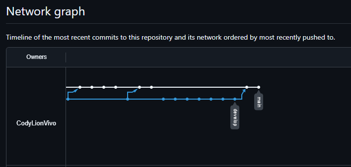
TB1 Contributors
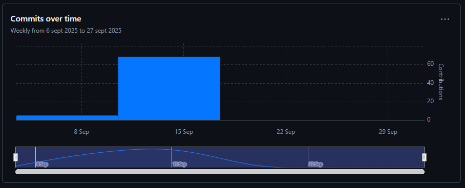
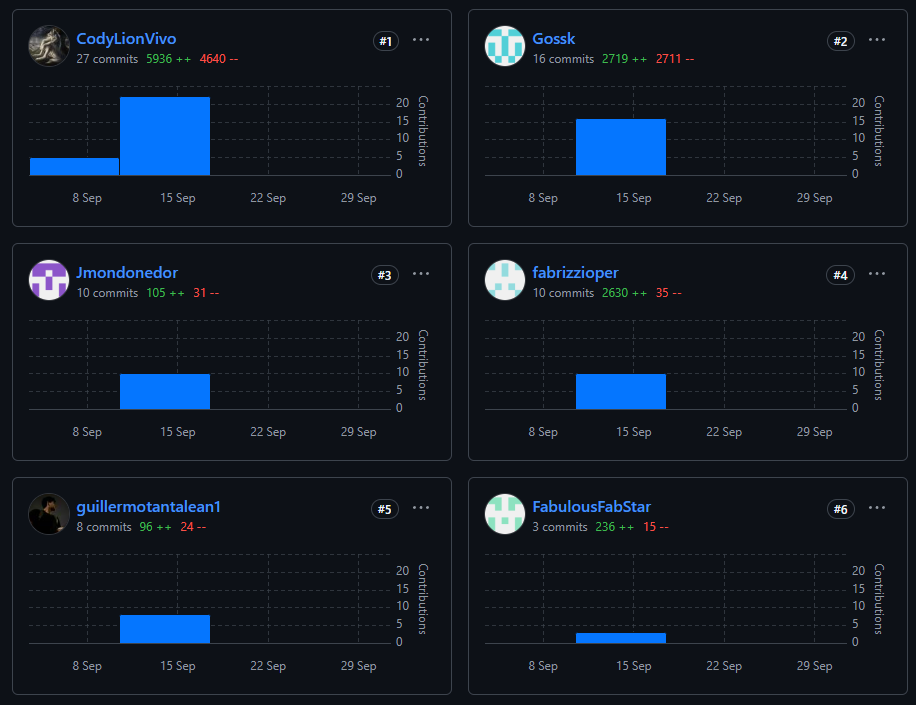
TB1 Pulse
TP
Este entregable comprende la elaboración del informe desde el Capítulo 3 hasta el Capítulo IV, desarrollado íntegramente a partir del proceso de diseño y desarrollo del producto y otros artefactos como la landing page, además de la validación de estos mismos.
Actualiza conceptos y conocimientos necesarios para su desarrollo profesional y en especial para su proyecto en soluciones de software.
TB1:
Fabrizio León: Realiza una investigación mediante el uso de entrevistas para la validación de los ítems hechos en el Lean UX Process.
Juan Diego Mondoñedo: Analicé los resultados de nuestras entrevistas para desarrollar parte del needfinding y definir las user stories.
Fabián Oliva López: Investigué acerca de posibles competidores y desarrollé su respectivo análisis competitivo, además de estrategias frente a estos competidores.
Miguel Vidal Castro: Determiné mediante las entrevistas al segmento objetivo de dueños de café, información relevante para entender qué bounded contexts desarrollar en la aplicación y cubrir sus necesidades.
Fabrizzio Pereira: Investigué el dominio del café de especialidad y desarrollé la arquitectura completa del sistema usando metodologías como Lean UX y Domain-Driven Design.
Guillermo Tantaleán: Desarrollé toda la parte de DDD, incluyendo el event storming e identificación de los principales bounded contexts.
TP:
Fabrizio León:
Juan Diego Mondoñedo:
Fabián Oliva López:
Miguel Vidal Castro: Elaboré los wireframes y mockups de la aplicación, aplicando los style guidelines definidos por el equipo. Este trabajo permitió plasmar de forma visual la estructura y funcionalidad del producto, facilitando la validación con los usuarios y asegurando coherencia con los objetivos del proyecto.
Fabrizzio Pereira:
Guillermo Tantaleán:
TB2:
Fabrizzio León: Se enfocó en el desarrollo frontend de la aplicación y su deploy, apoyando activamente en la organización del equipo y coordinando tareas. Mantuvo constante comunicación con todos los integrantes, asegurando que sus aportes fueran pertinentes y oportunos. Además, supervisó avances de integración y validación de interfaces, garantizando consistencia en la aplicación.
Miguel Vidal Castro: Avanzó en el desarrollo frontend, realizó correcciones en la documentación del proyecto y se encargó del registro de entrevistas con los usuarios. Su aporte fue clave para mantener la información actualizada y asegurar que las implementaciones coincidieran con los requerimientos definidos.
Fabián Oliva López: Se dedicó a corregir y mejorar la documentación del proyecto, registrando todas las entrevistas de usuarios realizadas. Además, optimizó los prototipos en Figma, asegurando que los wireframes y mockups fueran más claros y alineados con los objetivos del proyecto.
TB1: El equipo reforzó y actualizó conocimientos clave en metodologías de desarrollo como Lean UX y Domain-Driven Design, aplicándolos al dominio del café de especialidad. Cada integrante contribuyó con investigación y análisis (usuarios, competidores, modelo de negocio, arquitectura), lo que permitió construir una base conceptual sólida para el proyecto y asegurar la pertinencia de las soluciones propuestas. TP: El equipo continuó ampliando y aplicando los conocimientos adquiridos en metodologías de desarrollo como Lean UX y Domain-Driven Design, consolidando la arquitectura del sistema y afinando los aspectos de diseño e implementación. Cada integrante profundizó en su área de especialización, lo que permitió fortalecer la comprensión técnica y mejorar la calidad de los artefactos generados. TB2: Entre equipo demostraron un enfoque práctico en la implementación y mejora del proyecto, aplicando conocimientos técnicos en frontend, documentación y prototipos. La constante comunicación, organización y colaboración entre ellos permitió optimizar procesos, reducir errores y consolidar un flujo de trabajo eficiente, fortaleciendo el aprendizaje colectivo, destacando habilidades técnicas y blandas del equipo, y asegurando la calidad del producto final.
Reconoce la necesidad del aprendizaje permanente para el desempeño profesional y el desarrollo de proyectos en soluciones de software.
TB1:
Fabrizio León: Fue importante que aprenda sobre el modelo de negocio para así desarrollar los artefactos de una mejor manera. Además, investigué más acerca del DDD para su correcto planteamiento.
Juan Diego Mondoñedo: Refresqué mis conocimientos sobre las user stories e investigué sobre el ambiente laboral de nuestro público objetivo para plantear user stories pertinentes.
Fabián Oliva López: Pude aprender la necesidad de investigar acerca de competidores, lo cual ayuda a ver puntos estratégicos que pueden mejorar nuestro trabajo para entregar un producto de buena calidad.
Miguel Vidal Castro: Pude aprender a investigar sobre cómo realizar un diagrama C4, reforzando conocimientos previos. Realicé un Event Storming del proyecto que me ayudó a identificar los bounded contexts.
Fabrizzio Pereira: Aprendí sobre café de especialidad desde cero y estudié nuevas metodologías de desarrollo que no conocía previamente.
Guillermo Tantaleán: Realicé investigación del modelo de negocio del tema en cuestión para el trabajo, lo cual me permitió entender la aplicación de conocimientos de software a nivel de dirección.
TP:
Fabrizio León:
Juan Diego Mondoñedo:
Fabián Oliva López:
Miguel Vidal Castro: El equipo demostró una actitud de aprendizaje continuo al incorporar nuevos conocimientos durante el desarrollo de la aplicación. A partir de las observaciones recibidas, se realizaron mejoras en la interfaz y la experiencia del usuario, aplicando los style guidelines definidos. Esta experiencia reforzó la importancia de la retroalimentación y la adaptación constante como parte del crecimiento profesional, promoviendo una cultura de mejora y aprendizaje permanente dentro del grupo.
Fabrizzio Pereira:
Guillermo Tantaleán:
TB2:
Fabrizzio León: Continuó reforzando sus conocimientos en desarrollo frontend y deployment, aprendiendo nuevas técnicas para optimizar la implementación y mantener el flujo de trabajo del equipo eficiente.
Miguel Vidal Castro: Mejoró su aprendizaje sobre documentación y registro de entrevistas, fortaleciendo la capacidad de organización y trazabilidad de información crítica para el proyecto.
Fabián Oliva López: Amplió sus conocimientos en herramientas de prototipado (Figma) y documentación, asegurando que la información registrada fuese clara, precisa y útil para el desarrollo y la toma de decisiones del equipo.
TB1: El equipo demostró apertura hacia el aprendizaje permanente, investigando tanto aspectos técnicos (diagramas C4, DDD, user stories) como estratégicos (modelo de negocio, competidores y dominio del café de especialidad). Esta disposición a aprender y actualizarse permitió aplicar de forma más efectiva los conocimientos adquiridos, adaptándolos a un contexto real y fortaleciendo las competencias profesionales de cada integrante. TP: El equipo mejoró las observaciones recibidas anteriormente y avanzó en el desarrollo de la aplicación, respetando los style guidelines y principios de usabilidad definidos. Los prototipos fueron evaluados positivamente por los usuarios entrevistados, quienes brindaron retroalimentación útil para futuras mejoras, consolidando así la aplicación de un proceso iterativo de aprendizaje y mejora continua. TB2: Entre equipo evidenciaron un aprendizaje constante al aplicar nuevas técnicas y buenas prácticas en frontend, documentación y prototipado. La colaboración y apoyo mutuo permitió una ejecución más fluida de tareas, consolidando habilidades profesionales y blandas del equipo, destacando su capacidad de adaptación, comunicación y resolución de problemas, fomentando la mejora continua dentro del proyecto.
Objetivos SMART
S – Specific (Específico)
Diseñar y desarrollar una aplicación móvil en Android (Kotlin) y **Flutter **, con backend cloud, que permita a baristas, jefes de barra y dueños estandarizar recetas, registrar catas y acceder a comunidades para comentar sobre recetas de café. La app debe reducir la variabilidad en preparación y acelerar el aprendizaje técnico en barra mediante flujos simples.
M – Measurable (Medible)
Implementar y validar al menos 10 funcionalidades clave:
Perfiles de usuario para conectar con otros usuarios baristas.
Interactuar con los post de la comunidad cafetera
Además:
Validar la usabilidad en dos tiendas piloto.
Lograr reducción observable de variabilidad.
Obtener retención de uso diario durante calibración, servicio y cierre.
A – Achievable (Alcanzable)
El equipo cuenta con experiencia en Android/Kotlin, Flutter, backend cloud, UX/UI, Lean UX, arquitectura DDD y pruebas en barra.
Las funcionalidades se desarrollarán iterativamente usando herramientas open source y pruebas reales con tiendas piloto, asegurando que el alcance es viable dentro del tiempo del proyecto.
R – Relevant (Relevante)
Este objetivo responde directamente a los problemas actuales del sector:
aprendizaje técnico disperso,
falta de estandarización entre turnos,
curva de capacitación lenta,
invisibilidad del origen y procesos,
necesidad de microaprendizaje en horarios irregulares.
La app incrementará consistencia en taza, mejorará el onboarding, fortalecerá la cultura cafetera y brindará una herramienta diaria de consulta para equipos de barra.
T – Time-Bound (Acotado en el tiempo)
Completar diseño, desarrollo, pruebas de usabilidad y un MVP funcional de la app en Android y Flutter en un plazo máximo de 4 meses calendario.
Incluye:
Diseño UX/UI
Implementación iterativa
Ajustes finales y validación
Objetivo final
Nuestro objetivo es diseñar y desarrollar en un máximo de cuatro meses una aplicación móvil en Android y Flutter con backend cloud que permita estandarizar recetas, acelerar el aprendizaje barista mediante guías y microlecciones, registrar catas, etc. Esto será logrado implementando al menos diez funcionalidades clave, asegurando reducción de variabilidad en preparación y uso recurrente durante la operación diaria. Con ello, Xantina se consolidará como la herramienta central de consulta y estandarización en cafeterías de especialidad.
Capítulo I: Introducción
1.1. Startup Profile
En esta sección se presenta una visión general de la startup del proyecto. Se resume su propósito, el problema que busca resolver y la propuesta de valor a alto nivel, junto con una descripción breve del equipo y sus roles. El objetivo es contextualizar al lector antes de entrar a los detalles de producto en capítulos posteriores.
1.1.1. Descripción de la Startup
Mira es una startup que crea aplicaciones móviles para el café de especialidad. Ayudamos a baristas, cafeterías y entusiastas a estandarizar recetas, registrar catas y simplificar el trabajo en barra. También somos entusiastas del café: desde la barra y el origen hemos vivido que el valor del café no termina en “pedir y tomar”, sino en entender su viaje —del grano a la taza— y compartirlo con una comunidad curiosa. Por eso diseñamos herramientas rápidas y usables que convierten cada preparación en una experiencia de aprendizaje.
Misión
Educar a baristas y amantes del café sobre los derivados (espresso, cappuccino, latte, macchiato, cold brew, etc.) y sus recetas; explicar de forma simple la extracción (relación café/agua, molienda, temperatura, presión, tiempo), la química del grano (tostado, compuestos solubles, desgasificación) y la texturización de la leche. Todo mediante experiencias móviles guiadas, prácticas y colaborativas que invitan a experimentar, registrar y compartir.
Visión
Construir la plataforma móvil de referencia para el café de especialidad en Latinoamérica: accesible para aprender, útil para operar y abierta para compartir. Conectar origen, barra y consumidor a través de recetas reutilizables, métricas claras y una comunidad que documenta, mejora y celebra cada taza.
1.1.2. Perfiles de integrantes del equipo
Foto
Nombres y Apellidos
Código de Alumno
Carrera
Habilidades
Mondoñedo Rodriguez, Juan Diego Javier
U202110373
Ingeniería de Software
Desarrollo front-end
Manejo de bases de datos con mySQL
Conocimiento en sistemas Linux
Competente con frameworks de desarrollo como Angular y Vue
Oliva López, Fabián Alejandro
U202312013
Ingeniería de Software
Programación con Python y JavaScript
Fundamentos de arquitectura de software
Diseño UX/UI con figma
Aplicación de herramientas y prácticas para la agilidad
Buenas prácticas de programación orientada a objetos, patrones, code quality & readability
Vidal Castro, Miguel Angel
U202314186
Ingeniería de Software
Conocimiento en sistemas operativos tipo Linux
Manejo de Azure para la gestión de máquinas virtuales
Conocimiento avanzado en sistemas Linux.
Familiaridad con SOA y Layered Architecture.
Tantaleán Mesta, Guillermo Fabián
U202311958
Ingeniería de Software
Conocimiento en sistemas operativos tipo Linux
Manejo de Azure para la gestión de máquinas virtuales
Conocimiento avanzado en sistemas Linux.
Familiaridad con SOA y Layered Architecture.
Nelson Fabrizzio, Pereira Vasquez
U202417468
Ingeniería de Software
Dominio en desarrollo web con énfasis en React y su ecosistema.
Experiencia en la creación de proyectos prácticos como método de aprendizaje.
Conocimientos en ingeniería de software aplicados al desarrollo y buenas prácticas.
Habilidad para trabajar en equipo, colaborar y apoyar en la resolución de problemas.
1.2. Solution Profile
Esta sección presenta el contexto y la coyuntura del café de especialidad que justifican la viabilidad de Mira/Xantina —técnica, de negocio y de experiencia—. Resume antecedentes y problemática con 5W2H y da paso al Lean UX Process (Problem Statements, Assumptions, Hypothesis y Lean UX Canvas), enlazando con Segmentos objetivo (1.3).
1.2.1 Antecedentes y problemática
Aproximación preliminar a los antecedentes
El crecimiento del café de especialidad en América Latina ha impulsado la creación de espacios de formación técnica para baristas y emprendedores. Sin embargo, la mayor parte de la capacitación sigue ocurriendo de forma presencial y fragmentada, lo que limita el acceso de nuevos talentos y emprendedores al conocimiento estandarizado.
A su vez,según Elías J. (2022), se señala que la digitalización del aprendizaje técnico en el sector agroindustrial y gastronómico aún es baja, especialmente en etapas de transformación y servicio (cafeterías, barras, microemprendimientos).
El contenido disponible en línea —por ejemplo, en redes sociales o blogs— suele carecer de validez técnica y secuencia pedagógica, lo que ralentiza el aprendizaje y genera inconsistencias en las prácticas de extracción y preparación. Esta brecha ha sido identificada también por INEI (2024), que destaca la necesidad de herramientas digitales formativas que conecten conocimiento técnico, cultura cafetera y cadena de valor.
Problemática
Aprendizaje técnico accesible y estructurado
Existe una falta de plataformas digitales gratuitas que enseñen de manera guiada, práctica y estandarizada los fundamentos de la preparación de café.
Esto incluye:
Métodos de extracción.
Parámetros críticos (dosis, molienda, relación café/agua, temperatura, presión, tiempo).
Procedimientos de calibración y control operativo en barra.
Visibilidad del origen y cultura cafetera
El trabajo en finca y el valor del origen (cultivo, cosecha, beneficiado, secado, clasificación, tostado) rara vez se comunica de forma simple en el punto de consumo. Esto contribuye a:
Desconexión entre consumidor y productor.
Subvaloración del esfuerzo en campo y de la cadena de valor.
Pérdida de oportunidades educativas sobre química del café (compuestos solubles, desgasificación) y texturización de la leche (microespuma, control térmico).
Se requiere un espacio breve y recurrente —p. ej., cápsulas tipo “loading tips” en la app— que divulgue datos, procesos y buenas prácticas para elevar la cultura del café de forma amena.
Síntesis
Existe una oportunidad clara para centralizar y democratizar el aprendizaje técnico (recetas, extracción, operación en barra) y, en paralelo, contar el relato del origen mediante cápsulas educativas cortas. Con esto se acelera la formación de baristas y emprendedores, y se reconoce el valor del café desde la finca hasta la taza.
Objetivos de la Solución
Democratizar el aprendizaje del café de especialidad y estandarizar la operación en barra mediante una app móvil (Android) con backend cloud, para mejorar la consistencia en taza y difundir la cultura del café desde el origen hasta la preparación.
Democratizar el aprendizaje del café de especialidad mediante una app móvil en Android con backend cloud, acercando contenido confiable y práctico a baristas, emprendedores y entusiastas.
Estandarizar recetas por método y lote, documentar dosis, molienda, relación café/agua, temperatura, presión y tiempo para lograr preparaciones consistentes.
Guiar la operación en barra con pasos claros, listas de verificación y calibraciones rápidas, reduciendo retrabajos y variabilidad en el servicio.
Registrar catas con notas sensoriales y perfiles de taza, facilitar la comparación y el aprendizaje continuo del equipo.
Divulgar cápsulas breves tipo “loading tips” sobre origen, procesos (beneficiado, tostado, desgasificación) y texturización de la leche, fortalecer la cultura cafetera.
Visibilizar el trabajo en origen y la cadena de valor, conectar a productores, barra y consumidor mediante historias, datos y buenas prácticas.
Simplificar el control básico de insumos con inventario por lotes y alertas tempranas, evitar quiebres en momentos críticos.
Garantizar una experiencia de uso ágil y sin fricciones, priorizar flujos cortos, uso con una mano y soporte offline con sincronización posterior.
Fortalecer la plataforma técnica con API REST documentada (OpenAPI), autenticación segura, patrones DDD y despliegue cloud nativo con CI/CD y observabilidad.
Fomentar la adopción y la comunidad al permitir compartir recetas, buenas prácticas y aprendizajes entre cafeterías y usuarios afines.
Restricciones
Duración: completar el proyecto en un plazo máximo de 4 meses calendario.
Licenciamiento y stack: construir la aplicación móvil (y sus servicios) con herramientas y librerías open source, evitando dependencias propietarias salvo justificación.
Calidad del producto:
Accesibilidad: ofrecer una interfaz usable para todo tipo de usuarios (contraste, tamaños de texto, navegación simple).
Seguridad: proteger datos en tránsito y en reposo; implementar autenticación y autorización adecuadas.
Escalabilidad y eficiencia: diseñar para crecer sin degradar el rendimiento y evitar consumos innecesarios de recursos.
Simplicidad: mantener arquitectura y UX sin complejidad innecesaria para facilitar implementación y mantenimiento.
Análisis 5W+2H
Pregunta
Observaciones clave
Who (Quiénes)
Baristas (junior/senior), jefes de barra y dueños de cafeterías; entusiastas que desean aprender; emprendedores que evalúan abrir una cafetería. Actores indirectos: formadores y productores (para visibilizar el origen).
What (Qué)
Contenidos y guías prácticas para preparar bebidas (espresso, cappuccino, latte, moka, cold brew, etc.), estandarizar recetas y registrar catas; cápsulas breves sobre origen, procesos y cultura; apoyos operativos simples (checklists, recordatorios).
Where (Dónde)
Barra de cafeterías, academias de barismo y hogar. Entornos con ruido, tiempos cortos, manos ocupadas y múltiples distracciones; sesiones breves, retomables y fáciles de “escanear”.
When (Cuándo)
Durante la calibración y la preparación en turno; antes/después del servicio para reforzar; en tiempos de espera para microaprendizaje; en la etapa de puesta en marcha de nuevas cafeterías para capacitación inicial.
Why (Por qué)
Reducir la variabilidad en taza, acelerar la curva de aprendizaje, facilitar el onboarding del equipo y revalorizar el café visibilizando el trabajo en origen y su cadena de valor.
How (Cómo)
Ofrecer rutas guiadas paso a paso; microlecciones consumibles en minutos; fichas de receta claras y reutilizables; catas con estructura simple; cápsulas tipo “tip” que informen sin interrumpir; tono cercano y vocabulario común del barismo.
How much (Cuánto)
Tiempo de proyecto acotado (máximo 4 meses); esfuerzo de adopción bajo dentro de cada tienda; contenidos accesibles y gratuitos como puerta de entrada; sesiones de uso cortas (1–3 min) integradas en la rutina.
1.2.2 Lean UX Process
Esta sección presenta la visión del modelo de negocio soportado por el producto, a través de Problem Statements, Assumptions y Hypothesis Statements. Cierra con el Lean UX Canvas.
1.2.2.1. Lean UX Problem Statements
El objetivo del producto es ofrecer un espacio de aprendizaje flexible para baristas —en formación o en ejercicio— que permita practicar y perfeccionar habilidades a su propio ritmo y en tiempos asincrónicos, además de brindar un canal claro y ameno sobre la producción del café en el Perú y su cadena de valor.
Hoy, la capacitación ocurre principalmente en formatos presenciales o mediante contenidos dispersos y poco aplicables en barra, lo que encarece y ralentiza el aprendizaje, dificulta la estandarización de recetas y procedimientos, y mantiene invisibles muchos procesos del origen.
¿Cómo podríamos facilitar un aprendizaje práctico y a ritmo propio, centralizar el conocimiento crítico de preparación y, a la vez, acercar de forma breve el “viaje del grano a la taza” sin imponer horarios ni elevar costos?
1.2.2.2. Lean UX Assumptions
Outcomes
Convertir a Xantina en la herramienta diaria de aprendizaje y consulta en barra en las tiendas piloto de Lima en un plazo de 6 meses.
Estandarizar recetas por método y por lote en los equipos de barra de cafeterías aliadas en Lima en 6 meses.
Institucionalizar el registro de catas y la revisión conjunta al cierre de turno como hábito del equipo en Lima en 6 a 9 meses.
Integrar cápsulas breves sobre origen, procesos y cultura como parte natural de la experiencia de uso en Lima en 4 a 6 meses.
Extender Xantina a nuevas cafeterías fuera del piloto, comenzando por Lima Metropolitana, en 9 a 12 meses.
Consolidar una comunidad que comparta recetas y aprendizajes con base en Lima y alcance nacional en 9 a 12 meses.
Posicionar a Xantina como la referencia móvil en formación y estandarización del café de especialidad en el Perú en 12 a 18 meses.
Assumptions Worksheet
Creo que mis clientes necesitan aprender y estandarizar la preparación de bebidas de café con guías simples, paso a paso y reutilizables.
Estas necesidades se pueden resolver con una app móvil que ofrezca recetas aprobadas por método/lote, microlecciones breves, checklists de calibración y registro de catas.
Mis clientes iniciales son (o serán) cafeterías de especialidad en Lima con equipos de barra pequeños (baristas junior/senior) y entusiastas avanzados.
El valor #1 que un cliente quiere de mi servicio es consistencia en taza con confianza en turno (recetas claras y comparables).
El cliente también puede obtener estos beneficios adicionales onboarding más rápido, aprendizaje continuo con catas, lenguaje común de barismo y cápsulas de cultura/origen.
Voy a adquirir la mayoría de mis clientes a través de alianzas con tostadores y escuelas de barismo, referencias entre cafeterías, eventos/comunidades y demostraciones en tienda.
Haré dinero a través de modelo freemium (aprendizaje base gratuito) y suscripción B2B para cafeterías (equipo multiusuario, recetas compartidas, administración básica). Opcional: patrocinios de contenido educativo con tostadores.
Mi competencia principal en el mercado será contenido disperso (YouTube/IG/TikTok), cursos presenciales y apps genéricas de temporizador/recetas no adaptadas al flujo de barra.
Los venceremos debido a flujos pensados para barra, contenido en español contextualizado, microaprendizaje de 1–3 minutos y todo en un solo lugar (recetas, catas, cápsulas).
Mi mayor riesgo de producto es baja adopción en equipos por fricción de uso o falta de confianza de jefes de barra en el contenido/recetas.
Resolveremos esto a través de co-diseño con tiendas piloto, recetas aprobadas por el equipo, onboarding guiado, flujos muy cortos y mejoras rápidas a partir de feedback.
Otras suposiciones críticas: permiten usar el móvil en servicio, los dueños apoyan la estandarización, hay interés real por cultura/origen, los tostadores comparten datos de lote y los usuarios aceptan políticas de privacidad. Si esto se prueba falso, el proyecto pierde tracción.
Preguntas
¿Quién es el usuario?
Baristas (junior/senior), jefes de barra y dueños; secundario: entusiastas avanzados.
¿Dónde encaja nuestro producto en su trabajo o vida?
En la operación diaria (calibración y preparación), en cierre de turno (catas) y en tiempos cortos para microaprendizaje.
¿Qué problemas debe resolver nuestro producto? Variabilidad en preparaciones, aprendizaje disperso/no aplicable, falta de registro de catas y baja visibilidad del origen.
¿Cuándo y cómo es nuestro producto usado? Antes y durante el turno para consultar/crear recetas y calibrar; después del turno para registrar catas; entre acciones para cápsulas breves.
¿Qué características son importantes? Recetas estandarizadas, checklists simples, catas con notas comparables, cápsulas de cultura/origen, búsqueda rápida y navegación clara.
¿Cómo debe verse nuestro producto y comportarse? Claro, rápido y usable con una mano; información “escaneable” en segundos; tono cercano de barismo; mínima fricción en tareas clave.
1.2.2.3. Lean UX Hypothesis Statements
Hemos formulado como equipo las siguientes hipótesis orientadas a probar las distintas funcionalidades que hemos obtenido como parte del Lean UX Process:
Creemos que ofrecer guías paso a paso y recetas aprobadas en Xantina para baristas junior de las tiendas piloto en Lima logrará que Xantina se convierta en su herramienta diaria de aprendizaje y consulta en barra en 6 meses. Sabremos que esto es cierto cuando veamos uso recurrente al inicio de turno y jefes de barra reportando que se consultan guías/recetas durante el servicio.
Creemos que habilitar “recetas de la casa” reutilizables por método y por lote para todos los baristas de cada tienda en Lima logrará preparaciones estandarizadas entre turnos. Sabremos que esto es cierto cuando veamos que la mayoría de órdenes se inician desde una receta aprobada y los jefes de barra confirman resultados similares entre turnos.
Creemos que incluir un registro simple de catas con notas y rueda de sabores para equipos de barra logrará aprendizaje estructurado tras el cierre de turno. Sabremos que esto es cierto cuando veamos catas registradas al cierre y discusiones del equipo sobre ajustes basados en esas notas durante 2–4 semanas de piloto.
Creemos que agregar un checklist de calibración al inicio de cada turno para jefes de barra y baristas senior logrará menos errores de extracción en horas pico. Sabremos que esto es cierto cuando veamos checklists completados antes del servicio y menos bebidas reiniciadas según registros del jefe de barra en 2–3 semanas.
Creemos que mostrar cápsulas breves (“tips”) sobre origen, procesos y cultura para baristas y clientes curiosos en Lima logrará mayor conciencia del “grano a la taza”. Sabremos que esto es cierto cuando veamos tips abiertos/guardados en momentos de espera y al personal referenciándolos en conversaciones con clientes.
Creemos que ofrecer un flujo de onboarding con “tareas del primer día” para baristas nuevos logrará una incorporación más rápida hasta el servicio autónomo. Sabremos que esto es cierto cuando veamos nuevos baristas completando el flujo sin ayuda y jefes confirmando autonomía temprana durante las primeras 2–3 semanas.
Creemos que sumar recordatorios de inventario por lote para insumos críticos para encargados de tienda logrará evitar quiebres inesperados. Sabremos que esto es cierto cuando veamos recordatorios atendidos a tiempo y ausencia de faltantes imprevistos durante el piloto.
Creemos que permitir buscar y filtrar recetas por método, lote y parámetros clave para baristas en servicio logrará acceso más rápido a la receta correcta. Sabremos que esto es cierto cuando veamos recetas localizadas en pocos segundos y menos consultas verbales entre compañeros durante 2 semanas.
Creemos que estructurar microlecciones de 1–3 minutos con pasos accionables para baristas en formación logrará mejor retención de procedimientos en barra. Sabremos que esto es cierto cuando veamos microlecciones completadas y replicadas en práctica, con jefes observando menos errores al repetir el procedimiento.
Creemos que habilitar notas rápidas ligadas a cada receta para equipos de barra logrará documentar ajustes locales sin perder consistencia. Sabremos que esto es cierto cuando veamos recetas con notas recientes usadas por distintos baristas y menor necesidad de “recordatorios de pasillo” durante el servicio.
1.2.2.4. Lean UX Canvas
El Lean UX Canvas del proyecto Xantina refleja un enfoque claro hacia la democratización del aprendizaje barista y la estandarización de recetas en cafeterías de especialidad, orientado principalmente a baristas (junior/senior), jefes de barra y dueños, con alcance secundario a entusiastas. Se identifican problemáticas como el contenido de aprendizaje disperso, la curva de capacitación lenta, la variabilidad entre turnos por falta de recetas aprobadas y la baja visibilidad del origen y los procesos del café. Las soluciones propuestas incluyen guías paso a paso, recetas “de la casa” por método y lote, registro de catas con notas comparables, checklists de calibración al inicio de turno, cápsulas breves sobre origen y cultura integradas en momentos naturales de uso y inventario básico por lotes para evitar quiebres. Los usuarios clave —baristas, jefes de barra y dueños de tiendas piloto en Lima— validan estas necesidades mediante entrevistas y pruebas en barra. Como resultados esperados, se plantea adopción como herramienta diaria en tiendas piloto de Lima en 6 meses, estandarización de preparaciones entre turnos en 6 meses, institucionalización del cierre con catas y revisión conjunta en 6–9 meses y expansión a nuevas cafeterías con una comunidad activa que comparte recetas y aprendizajes en 12 meses.
1.3. Segmentos objetivo
Esta sección describe los segmentos asociados al dominio del problema (café de especialidad) e incluye características demográficas, comportamientos y notas para el sustento estadístico.
1.3.1. Baristas (junior y senior)
Demografía y rol: 18–35 años (mayoría), educación técnica o cursos cortos de barismo; trabajan en cafeterías de especialidad en Lima.
Contexto de uso: inicio de turno (calibración), horas pico (consulta rápida de recetas), cierre (registro de catas).
Necesidades: aprender “haciendo”, estandarizar recetas por método/lote, resolver dudas en segundos, registrar notas y ajustes.
Dolores: aprendizaje disperso/no aplicable; variabilidad entre turnos; presión por velocidad y consistencia.
Motivadores: mejorar la taza, confianza en servicio, reconocimiento del equipo.
Criterios de adopción: app rápida, usable con una mano, lenguaje de barismo y recetas “de la casa”.
Indicadores para sustento (a recolectar): % baristas en tiendas de especialidad, rotación en barra, número de cafeterías por distrito, horarios pico.
1.3.2. Jefes de barra / Dueños
Demografía y rol: 25–45 años; responsables de estándar de marca, capacitación y operación.
Contexto de uso: apertura (checklist de calibración), seguimiento en servicio, cierre (revisión de catas).
Necesidades: alinear resultados entre turnos, acelerar onboarding, tener “recetas aprobadas” reutilizables.
Dolores: curva de aprendizaje lenta, retrabajo por preparaciones incorrectas, conocimiento tribal.
Motivadores: consistencia de marca, eficiencia operativa, satisfacción del cliente.
Criterios de adopción: control básico (recetas aprobadas, checklists), bajo esfuerzo de implementación.
Indicadores para sustento (a recolectar): número de locales por cadena/independientes, tiempo promedio de capacitación, frecuencia de cambios de personal.
Motivadores: aprender, compartir y mejorar su taza.
Criterios de adopción: contenidos breves, recetas probadas, comunidad.
Indicadores para sustento (a recolectar): ventas de métodos en Lima, participación en talleres/comunidades, búsquedas relacionadas.
1.3.4. Aliados del ecosistema (tostadores, escuelas) – Influenciadores
Rol: validan contenido, comparten datos de lotes/origen, derivan usuarios.
Interés: visibilidad de marca y educación alineada a calidad.
Indicadores para sustento (a recolectar): número de tostadores activos, escuelas/talleres y calendarios de cursos.
1.3.5. Mapa de priorización (MVP)
Primario: Baristas (junior/senior) y Jefes de barra/Dueños de tiendas piloto en Lima.
Secundario: Entusiastas avanzados (aprendizaje y catas).
Influenciadores: Tostadores y escuelas (alianzas y contenido).
1.3.6. Tamaño de mercado (marco de estimación)
Para sustentar con cifras sin “inventar”, usar el siguiente marco con fuentes abiertas (INEI, Producción, gremios, directorios locales, cámaras):
TAM (Perú, café de especialidad): total de cafeterías + escuelas + entusiastas con métodos en hogar.
SAM (Lima Metropolitana): cafeterías de especialidad y academias activas en Lima.
SOM (pilot & año 1): tiendas piloto + nuevas tiendas alcanzables por distrito.
Datos a recopilar: # de cafeterías por distrito, aforo/turno, personal de barra por local, frecuencia de cursos/talleres, crecimiento anual.
Sugerencias de fuentes: INEI (CIIU servicios de alimentos/bebidas), Ministerio de la Producción (MYPE), directorios de cafeterías de especialidad locales, escuelas/tostadores (calendarios y redes), observación de campo por distritos objetivo (Miraflores, Barranco, Surco, San Isidro, etc.).
1.3.7. Señales de ajuste por segmento (qué observar)
Baristas: uso de recetas aprobadas al abrir, consultas rápidas durante pico, registro de catas al cierre.
Jefes/Dueños: adopción de checklists, aprobación/actualización de recetas “de la casa”, reducción de retrabajo.
Entusiastas: finalización de microlecciones y uso de recetas en casa; participación en comunidad.
Aliados: disposición a compartir datos de lote/origen y co-crear cápsulas educativas.
Capítulo II: Requirements Development and Software Solution Design
2.1. Competidores
Filtru
Filtru es una aplicación centrada en la temporización y control del proceso de preparación del café, diseñada para baristas y aficionados que buscan mejorar la calidad de su café mediante un temporizador simple y efectivo. Su enfoque está en la experiencia práctica y repetible del café.
Coffee.cup.guru
Coffee.cup.guru es una plataforma educativa y comunitaria que ofrece recursos para baristas, incluyendo técnicas de cata, recetas y consejos para mejorar la calidad del café. Se enfoca en la formación y el intercambio de conocimientos dentro de la comunidad cafetera.
Brew Timer
Brew Timer es una aplicación móvil que ayuda a los usuarios a cronometrar y optimizar sus métodos de preparación de café, con alertas y recomendaciones para asegurar un café consistente y de calidad. Está dirigida principalmente a usuarios caseros y baristas que buscan simplicidad y precisión en la preparación.
2.1.1. Análisis competitivo
Competitive Analysis Landscape
¿Por qué llevar a cabo este análisis?
Este análisis busca identificar las fortalezas, debilidades y estrategias de los competidores de Xantina en el mercado del café de especialidad, para entender cómo posicionar nuestra solución (software + IoT) y destacar frente a competidores establecidos.
Xantina
Filtru
Brew Timer - Hacer buen café
coffee.cup.guru
Perfil
Overview
Plataforma web e IoT para gestión integral de cafeterías especializadas, con módulos para tueste, cata, calibración y trazabilidad.
Aplicación móvil enfocada en la optimización del tiempo de preparación de café para baristas y amantes del café.
App móvil que ayuda a los usuarios a temporizar correctamente su preparación de café para mejorar sabor y consistencia.
Plataforma educativa y comunidad digital para amantes del café, con guías, recetas y tips para mejorar la preparación.
Ventaja competitiva ¿Qué valor ofrece a los clientes?
Integración de sensores IoT para monitoreo en tiempo real y análisis avanzado de procesos cafeteros.
Simplicidad y precisión en la medición del tiempo de extracción para mejorar la calidad del café.
Temporizador fácil de usar con recomendaciones para distintos métodos de preparación.
Contenido accesible y comunidad activa que impulsa la mejora continua en la preparación del café casero y profesional.
Perfil de Marketing
Mercado objetivo
América Latina con planes de expansión hacia mercados internacionales.
Usuarios globales interesados en herramientas digitales para mejorar su técnica de café.
Usuarios de apps móviles amantes del café, especialmente en América y Europa.
Comunidad global de entusiastas del café, especialmente en plataformas digitales y redes sociales.
Estrategias de marketing
Marketing digital, alianzas con asociaciones de café, ferias y eventos especializados.
Marketing en redes sociales, colaboraciones con baristas reconocidos y tutoriales en video.
Campañas en redes sociales, tutoriales y colaboraciones con influencers del café.
Creación de contenido educativo, webinars y comunidades online para fidelizar usuarios.
Perfil de Producto
Productos & Servicios
Plataforma web con módulos para tueste, calibración, cata, trazabilidad y sensores IoT integrados.
App móvil para temporización precisa en la preparación de cafés filtrados y espresso.
App móvil temporizadora con guías para diferentes métodos de café.
Plataforma educativa online con contenido interactivo, guías y consejos para preparar café.
App gratuita con opciones premium para funciones avanzadas.
App gratuita con opción de donaciones.
Acceso gratuito, con contenido premium mediante donaciones o membresías.
Canales de distribución (web/móvil)
Plataforma web y app móvil.
App móvil iOS y Android.
App móvil iOS y Android.
Plataforma web y apps móviles.
ANÁLISIS SWOT
Fortalezas
Integración completa de IoT, análisis avanzado y enfoque regional claro.
Facilidad de uso, enfoque en precisión de temporización y buena experiencia de usuario.
Temporizador simple y efectivo, enfoque en facilidad de uso.
Comunidad sólida, contenido educativo amplio y accesibilidad.
Debilidades
Falta de aplicación móvil robusta y mercado global limitado aún.
Funcionalidad limitada solo a temporización, sin integración con hardware.
Limitada a temporizador, sin funciones avanzadas de análisis.
Depende fuertemente de la comunidad y falta de monetización clara.
Oportunidades
Expansión en mercados emergentes y desarrollo de nuevas funcionalidades IoT.
Ampliar funciones premium y colaboraciones con marcas de café.
Incorporar nuevas funciones, integración con hardware o comunidades.
Crecimiento de la cultura del café y aumento de usuarios digitales.
Amenazas
Competencia creciente en el sector de IoT y software especializado.
Competencia de apps más completas y hardware dedicado.
Saturación de apps temporizadoras y bajo compromiso de usuarios.
Saturación de contenido en línea y falta de diferenciación clara.
2.1.2. Estrategias y tácticas frente a competidores
Nuestra estrategia se centra en ofrecer una solución tecnológica integral que combine software avanzado con hardware IoT, dirigida a baristas y cafeterías de especialidad, destacándonos por la innovación, accesibilidad y educación. Las tácticas clave que implementaremos son:
🟩 Mejorar la experiencia del usuario en la plataforma
Desarrollar una interfaz intuitiva y atractiva para usuarios profesionales y aficionados, con dashboards claros que integren control de tueste, cata y monitoreo IoT en tiempo real. Así, facilitamos la adopción y fidelización frente a competidores que ofrecen apps o herramientas más fragmentadas, como Brew Timer y coffee.cup.guru.
🟩 Establecer alianzas estratégicas con comunidades y certificadoras
Colaborar con asociaciones de baristas, certificadoras de café de especialidad y eventos internacionales para fortalecer la confianza en Xantina y ofrecer valor agregado en términos de trazabilidad y calidad certificada, diferenciándonos de aplicaciones que solo se centran en temporización o comunidad, como Filtru y Brew Timer.
🟩 Implementar campañas educativas y de contenido de valor
Generar contenido multimedia (webinars, blogs, tutoriales) que eduquen sobre buenas prácticas en almacenamiento, tueste y calibración, destacando cómo Xantina mejora la calidad del café mediante el uso de sensores IoT y análisis de datos, superando la comunicación básica que ofrecen otros competidores.
🟩 Promover la adopción mediante planes accesibles y beneficios iniciales
Ofrecer un plan gratuito básico con funciones esenciales para pequeños baristas y cafeterías, junto con incentivos como descuentos en planes avanzados y acceso a herramientas exclusivas durante los primeros meses. Esto permitirá atraer usuarios nuevos, validar el modelo y construir una comunidad sólida frente a competidores que tienen costos elevados o modelos menos accesibles.
2.2. Entrevistas
En esta sección se presenta la investigación cualitativa realizada mediante entrevistas a representantes de los segmentos objetivo: baristas (junior y senior), dueños/jefes de barra y entusiastas del café. El propósito es comprender con mayor profundidad la problemática detectada y validar la pertinencia de soluciones digitales derivadas del análisis previo.
2.2.1. Diseño de entrevistas
Dividimos la guía en dos bloques por segmento. El Bloque A (descubrimiento) profundiza en la problemática desde la voz del usuario; el Bloque B (exploración de solución) contrasta la pertinencia de propuestas digitales de Xantina (recetas “de la casa”, checklists de calibración, registro de catas y cápsulas breves de cultura/origen). Este diseño nos permite comprender el contexto real de uso y validar el encaje de la solución antes de construir.
Objetivo del estudio
Comprender dolores, hábitos y barreras en barra (y hogar).
Validar qué ideas de Xantina resuelven mejor los problemas priorizados.
Segmento objetivo 1: Baristas (junior/senior)
Bloque A — Problemática (núcleo)
Cuéntame tu turno típico (inicio, pico, cierre). ¿En qué momentos aparecen más dudas?
La última vez que no te salió una bebida, ¿qué pasó? ¿Qué hiciste para corregirla?
¿Cómo calibras al abrir? ¿Qué pasos sigues y cuáles omites por tiempo?
¿Dónde consultas parámetros (dosis, molienda, tiempo, temperatura) cuando no los recuerdas?
¿Cómo cambian tus preparaciones cuando llega un lote nuevo o tostado distinto?
¿Registran catas/pruebas? ¿Para qué les sirven y dónde quedan esas notas?
Bloque B — Solución (núcleo)
Si tuvieras recetas “de la casa” por método/lote, ¿cuándo y cómo las usarías en turno?
Un checklist de 1 min antes de abrir, ¿qué debe incluir para ayudarte (no estorbar)?
Un registro de catas simple, ¿qué campos sí o sí? (ej.: método, ratio, tiempo, notas, acuerdos)
¿Cómo deberían verse las cápsulas de cultura/origen para que las leas sin interrumpir tu flujo?
¿Qué te haría confiar en una receta aprobada? ¿Quién debería validarla?
¿Qué te haría volver a consultar la misma receta?
Opcionales (profundización): “la última semana…”, “si estuvieras solo en barra…”, “si cambia el grinder…”
Segmento objetivo 2: Dueños de cafeterías
Bloque A — Problemática (núcleo)
¿En qué situaciones se rompe la consistencia entre turnos?
¿Cómo incorporas a un barista nuevo? ¿Qué parte se lleva más tiempo?
¿Cómo deciden que una receta está bien? ¿Qué evidencia buscan?
¿Qué pasa cuando cambian lote/tostado o hay pico de clientes?
¿Registran cierre (catas, acuerdos, incidencias)? ¿Cómo lo usan al día siguiente?
¿Qué fricciones te gustaría eliminar mañana mismo?
Bloque B — Solución (núcleo)
¿Qué convertiría a una receta en “estándar de la casa”? (proceso de aprobación/actualización)
¿Cómo te gustaría notificar cambios de receta al equipo?
¿Qué checklist de apertura te daría confianza real en calibración?
¿Qué valor tendría ver catas y acuerdos al final del día? ¿Cómo quieres revisarlos?
¿Dónde encajarían cápsulas de cultura/origen en la experiencia de la tienda?
Si tuvieras que priorizar una sola funcionalidad para mañana, ¿cuál sería y por qué?
Muestra: n = 3 baristas (21-30 años) en Lima Metropolitana.
a) Distrito de residencia
Distrito
Conteo
%
Surco
1
33.3%
San Borja
1
33.3%
Ate
1
33.3%
b) Edades
Valores: 23, 25, 27 años
Rango: 23-27
Media: 25.0 años
Mediana: 25 años
c) Experiencia en barra
Nivel
Criterio (aprox.)
Conteo
%
Junior
< 1 años
1
33.3%
Intermedio
1-2 años
1
33.3.%
Senior / Jefe de turno
≥ 3 años
1
33.3%
Años totales reportados: 0.7 + 1.5 + 3.0 = 5.2
Media de experiencia: 1.7 años (aprox. 20 meses)
Rango de experiencia: 0.7-3.0 años
d) Momentos críticos de trabajo
Momento
Apariciones
%
Apertura / calibración
3
100%
Horas pico
3
100%
Cierre / catas
2
66.7%
Características objetivas
Momentos críticos donde aparece el problema
Apertura/calibración: 100%
Horas pico: 100%
Cierre/catas: 66.7%
Hechos que generan variabilidad
Cambios de lote/tostado sin guía clara: 66.7%
Ausencia de una receta “de la casa” única y vigente: 66.7%
Consulta a papel/WhatsApp durante el servicio: 33.3%
Necesidades funcionales directamente ligadas a la solución
Recetas aprobadas por método/lote accesibles en ≤2 toques: 100%
Checklist de apertura (≤1 minuto) para calibrar: 66.7%
Registro de catas con acuerdos de ajuste al cierre: 66.7%
Búsqueda/filtros por método y lote para hallar la receta correcta en segundos: 66.7%
Notas rápidas ligadas a la receta (ajustes locales): 33.3%
Cápsulas breves de origen/procesos en momentos de espera (no intrusivas): 33.3%
Comportamientos actuales observados (problema)
Calibración “a ojo” cuando hay prisa o cambia el lote: 66.7%
Falta de registro sistemático de catas/acuerdos: 66.7%
Actualización informal de recetas (memoria/voz): 66.7%
Características subjetivas
Dolores percibidos
Inseguridad al preparar en pico por no tener la receta a mano.
Frustración cuando cambia el lote y se pierden intentos de calibración.
Sensación de “estándar perdido” entre turnos.
Qué esperan de la solución
Confianza inmediata con una receta única y validada (“de la casa”).
Guía breve y usable: pasos claros, sin scroll, lenguaje de barismo.
Checklist ágil que no estorbe (solo lo esencial).
Catas que terminen en acuerdos concretos para el día siguiente.
Tips de cultura/origen solo en momentos naturales (carga/espera).
Barreras percibidas a la adopción
Apps lentas o con texto excesivo.
Interrupciones del flujo en horas pico.
Falta de validador (quién aprobó la receta y cuándo).
Criterios de aceptación implícitos
Acceso en ≤2 toques y ≤10 s para iniciar una preparación.
Ver método, dosis, molienda, tiempo/temperatura sin scrollear.
Mostrar “aprobado por [jefe] – última actualización [fecha]”.
Poder anotar ajustes y que el equipo los vea.
Tips cortos, no bloqueantes, con opción “guardar para después”.
Interpretación de hallazgos
El análisis conjunto de las entrevistas con baristas y jefes de barra evidencia una problemática estructural en la operación de las cafeterías de especialidad: la ausencia de herramientas digitales que faciliten la estandarización de recetas, la calibración guiada, y el registro sistemático de catas. La práctica actual, apoyada en conocimientos verbales o registros informales (papel, chats), genera variabilidad en taza, retrabajos durante el servicio y dificultades de consistencia entre turnos.
En los baristas, se identifican tres momentos críticos del flujo operativo —apertura/calibración, horas pico y cierre/catas— donde emergen las mayores fricciones. Durante la apertura, la falta de guías estructuradas conduce a calibraciones intuitivas (“a ojo”); en horas pico, el acceso limitado a las recetas aprobadas incrementa la incertidumbre y los errores; y al cierre, la carencia de formatos estandarizados de cata dificulta el aprendizaje colectivo y la retroalimentación del equipo. Estos patrones reflejan una necesidad funcional clara de inmediatez, simplicidad y validación visual en la interfaz.
Por su parte, los jefes de barra y dueños priorizan la consistencia de marca y la eficiencia operativa, destacando la importancia de checklists de calibración, recetas aprobadas por lote y método, y la capacidad de controlar y validar los estándares en toda la operación. También manifiestan interés por herramientas que agilicen el onboarding de nuevos baristas, reduzcan la dependencia del conocimiento tribal y fomenten una cultura de mejora continua basada en datos (recetas, catas, métricas de consistencia).
Ambos perfiles coinciden en que la adopción tecnológica solo será viable si la solución es ágil, intuitiva y no interrumpe el flujo de trabajo. Aplicaciones lentas, con texto excesivo o que exijan múltiples pasos en contextos de presión, constituyen barreras relevantes. Por ello, la propuesta debe priorizar flujos cortos (≤2 toques y ≤10 s), lenguaje especializado pero claro, y retroalimentación visual inmediata (“aprobado por”, “última actualización”).
En síntesis, los hallazgos confirman una oportunidad de diseño para una app móvil centrada en la barra, que combine:
• Estandarización técnica (recetas aprobadas, checklists);
• Aprendizaje operativo continuo (catas, cápsulas breves);
• Gestión ligera de equipos y conocimiento (roles, validaciones, actualizaciones trazables).
Esta convergencia entre necesidad funcional (consistencia y eficiencia) y motivación emocional (confianza y orgullo en el trabajo bien hecho) sustenta el valor de una solución como Xantina, que actúe tanto como asistente operativo durante el turno como plataforma educativa viva para el equipo.
2.3. Needfinding
El needfinding facilita detectar las necesidades reales de los usuarios a través de entrevistas y del estudio de su contexto. Con esos hallazgos se elaboraron artefactos clave que permitieron entender con mayor precisión sus objetivos, tareas, emociones y puntos de frustración.
2.3.1. User Personas
Los User Personas se construyeron a partir de los hallazgos de las entrevistas y representan perfiles fieles de los segmentos objetivo. Cada ficha resume rasgos demográficos, patrones de comportamiento y motivaciones/emociones, sirviendo como guía para las decisiones de diseño funcional y visual de la plataforma.
User Persona: Barista
Profesional de barra en una cafetería de especialidad, responsable del servicio central en tienda (preparación, calibración y atención al cliente). Necesita agilizar procesos, mantener consistencia en taza y responder rápido en horas pico. Valora el trabajo en equipo y la comunicación clara, busca optimizar el tiempo sin sacrificar calidad.
User Persona: Dueño de cafetería
Emprendedor y administrador de una tienda de café de especialidad, encargado de velar por la operación, calidad y capacitación del personal. Necesita estandarizar recetas, acelerar el onboarding de nuevos baristas y reducir costos operativos mediante un control más claro de procesos e insumos. Valora la consistencia de marca, la eficiencia operativa y la satisfacción del cliente, y busca herramientas que le permitan mantener un **equipo alineado y autónomo en el día a día.
2.3.2. User Task Matrix
En el User Task Matrix se especifican las tareas claves de cada segmento, seguidos por su frecuencia e importancia.
Tarea clave (independiente del software)
Miguel Vergara — Frec.
Miguel Vergara — Imp.
Harry Salazar — Frec.
Harry Salazar — Imp.
Calibrar espresso al inicio de turno
Alta
Alta
Alta
Alta
Confirmar receta “de la casa” por método/lote
Alta
Alta
Alta
Alta
Preparar bebidas durante horas pico
Alta
Alta
Media
Alta
Ajustar parámetros ante cambio de lote/tostado
Media
Alta
Alta
Alta
Registrar catas al cierre y acordar ajustes
Media
Media
Alta
Alta
Documentar notas rápidas ligadas a la receta
Media
Media
Alta
Alta
Buscar/filtrar la receta adecuada en servicio
Alta
Alta
Media
Alta
Comunicar cambios de receta al equipo
Media
Media
Alta
Alta
Capacitar / onboardear a un barista nuevo
Baja
Media
Alta
Alta
Verificar inventario básico de insumos (grano/leche)
Media
Media
Alta
Alta
Atender al cliente y responder sobre origen/procesos
Alta
Media
Media
Media
Limpieza y mantenimiento básico (purga, backflush, etc.)
Alta
Alta
Media
Alta
Revisar checklist de apertura/cierre
Alta
Alta
Alta
Alta
Supervisar consistencia entre turnos
Media
Alta
Alta
Alta
INTERPRETACIÓN DE RESULTADOS
Alta/Alta en ambos segmentos: calibrar, confirmar receta de la casa, checklist de apertura/cierre. Son las tareas núcleo que sostienen la consistencia.
Diferencias clave: el segundo segmento (jefe/dueño por inferencia) asume Alta frecuencia e importancia en comunicar cambios, onboarding e inventario, mientras que para Miguel son Medias (participa, pero no lidera).
Coincidencias: ambos valoran ajustes por lote, registro de catas y notas por receta, aunque el segundo segmento las realiza con mayor frecuencia para alinear al equipo.
Implicancia para requisitos: priorizar historias que soporten calibración rápida, recetas aprobadas accesibles, checklist breve, y flujos de comunicación/actualización liderados por el segundo segmento pero visibles para Miguel.
2.3.3. User Journey Mapping
En esta sección se presentan los User Journey Maps de cada User Persona (Miguel Vergara y [segundo segmento]). Los mapas describen, etapa por etapa, objetivos, tareas, emociones y puntos de dolor, desde que el usuario descubre Xantina hasta que comparte su feedback. Con esto identificaremos oportunidades de mejora y prioridades de diseño.
User Journey Map de Miguel Vergara:
2.3.3. User Journey Mapping — Miguel Vergara (Barista)
User Journey Map de Harry Salazar:
2.3.3. User Journey Mapping — Harry Salazar (Owner)
2.3.4. Empathy Mapping
Se elaboraron Empathy Maps para los dos User Personas de Xantina: Miguel Vergara (barista) y el Jefe de barra/Dueño de cafetería. A partir de entrevistas y escenas de uso en barra, se sintetizó lo que dicen, piensan, hacen y sienten durante su jornada, identificando sus pains (fricciones: variabilidad, falta de estándares, poco tiempo) y gains esperados (consistencia, aprendizaje breve, coordinación del equipo). Estos mapas orientan las decisiones de diseño para que la solución responda realmente a sus necesidades y momentos críticos.
Baristas
Dueños de cafeterías
2.3.5. Ubiquitous Language
Glosario de términos clave del dominio del café de especialidad utilizados en Mira/Xantina:
Rebote (Recuperación rápida)
Arreglar un error en la preparación sin que el cliente lo note.
Cascada (Técnica de vertido)
El flujo perfecto del espresso cuando sale dorado y consistente.
Espejear (Acción de preparación)
Revisar y ajustar todas las variables antes de hacer un shot (dosis, tiempo, presión).
Chispa (Shot afinado)
Espresso con balance exacto, dulce y vibrante.
Río (Purgar)
Agua que corre al limpiar el grupo antes del siguiente café.
Veludo (Textura ideal)
Leche vaporizada con microespuma tersa y sedosa.
Chispado (Shot perfecto)
Cuando el espresso sale con crema dorada y tiempo exacto, listo para servir.
Lechoso (Leche lista)
Leche vaporizada en punto perfecto, ni muy caliente ni muy fría.
Café Muerto (Máquina apagada)
Estado cuando la máquina está apagada y lista para limpieza final.
Seda (Microespuma ideal)
Leche con textura perfecta para hacer arte latte.
2.4. Requirements specification
La presente sección detalla la especificación de requerimientos del sistema Xantina, orientado a la democratización del aprendizaje del café de especialidad y la estandarización de procesos en barra y en el hogar. Se describen los requerimientos funcionales y no funcionales que guiarán el diseño y desarrollo de la aplicación, asegurando que responda a las necesidades de los usuarios principales —baristas, dueños de cafeterías y entusiastas avanzados— y que cumpla con criterios de calidad, usabilidad, seguridad y escalabilidad. Esta especificación constituye la base para la validación con los stakeholders y servirá como marco de referencia durante el ciclo de desarrollo del proyecto.
2.4.1. User Stories
EPIC ID
TÍTULO DE LA ÉPICA
Objetivo Principal
EP00
Landing Page - Experiencia Web Informativa
Presentar información clara y relevante del producto para captar y orientar a los visitantes.
EP01
Gestión de Cuentas de Usuario
Permitir que el usuario cree, acceda y recupere su cuenta de forma fácil y segura.
EP02
Gestión de Recetas
Facilitar la creación, actualización y estandarización de recetas con parámetros consistentes.
EP03
Calibración y Operación en Barra
Guiar al barista en la calibración del equipo y en los procedimientos diarios de preparación.
EP04
Registro y Análisis de Catas
Registrar, comparar y analizar catas para mejorar la consistencia y aprendizaje del equipo.
EP05
Gestión de Inventario y Trazabilidad
Controlar los lotes de café y generar alertas para mantener una trazabilidad efectiva.
EP06
Gestión de Usuarios y Permisos
Administrar roles y accesos del equipo para mantener la seguridad y estandarización.
EP07
Reportes y Análisis
Generar reportes e indicadores que ayuden a la toma de decisiones operativas.
EP08
Comunicación y Difusión de Información
Facilitar la comunicación interna mediante notificaciones y actualizaciones relevantes.
EP99
Spike Stories
Explorar, evaluar y documentar la viabilidad técnica de integraciones o componentes críticos.
Desglose de Historias de Usuario por Épica
Código Épica
Código Historia
Título de la Historia
Descripción (Situación y Motivación)
Criterios de Aceptación
EP00
US01
Conocer la propuesta de valor
Como visitante, quiero visualizar la información general de la plataforma, para comprender qué beneficios ofrece.
Dado que el visitante accede al sitio web, Cuando navega a la página de inicio, Entonces el sistema muestra información clara y concisa sobre la propuesta de valor y los beneficios principales.
EP00
US02
Navegar entre secciones informativas
Como visitante, quiero desplazarme fácilmente entre secciones, para explorar contenido relevante.
Dado que el visitante está en la landing page, Cuando selecciona una opción del menú de navegación, Entonces el sistema dirige la vista hacia la sección correspondiente sin pérdida de contexto.
EP00
US03
Conocer planes y precios
Como visitante, quiero visualizar los planes y precios del servicio, para identificar la opción más adecuada.
Dado que el visitante navega por el sitio, Cuando accede a la sección de planes, Entonces el sistema presenta los planes disponibles con descripciones y precios actualizados.
EP00
US04
Contactar con el equipo
Como visitante, quiero disponer de un formulario de contacto, para enviar consultas o solicitar más información.
Dado que el visitante completa los campos requeridos, Cuando envía el formulario de contacto, Entonces el sistema registra la solicitud y muestra una confirmación de envío.
EP00
US05
Suscribirse a novedades
Como visitante, quiero suscribirme con mi correo electrónico, para recibir actualizaciones y noticias relevantes.
Dado que el visitante introduce un correo electrónico válido, Cuando confirma su suscripción, Entonces el sistema guarda la dirección y muestra un mensaje de confirmación.
EP01
US06
Crear cuenta y unirse a una cafetería
Como usuario nuevo, quiero registrarme y asociarme a mi cafetería, para acceder a las funcionalidades.
Dado que el usuario accede por primera vez a la aplicación, Cuando completa los campos requeridos y envía la información, Entonces el sistema crea la cuenta y la vincula a la organización seleccionada.
EP01
US07
Iniciar sesión
Como usuario registrado, quiero autenticarme con mis credenciales, para ingresar a la aplicación.
Dado que el usuario tiene una cuenta activa, Cuando introduce credenciales válidas, Entonces el sistema valida la autenticación y muestra el panel principal.
EP01
US08
Recuperar contraseña
Como usuario, quiero restablecer mi contraseña olvidada, para recuperar el acceso a mi cuenta.
Dado que el usuario solicita recuperar su contraseña, Cuando sigue las instrucciones recibidas por correo, Entonces el sistema permite definir una nueva contraseña y acceder nuevamente.
EP02
US09
Crear receta
Como barista, quiero registrar los parámetros de una receta, para documentar las preparaciones.
Dado que el usuario accede a la sección de recetas, Cuando completa los campos obligatorios, Entonces el sistema registra la receta en su perfil.
EP02
US10
Consultar receta aprobada
Como barista, quiero acceder a recetas aprobadas rápidamente, para seguir los parámetros correctos.
Dado que existen recetas aprobadas, Cuando el usuario selecciona una receta, Entonces el sistema muestra los parámetros registrados.
EP02
US11
Actualizar receta por lote
Como barista, quiero ajustar una receta según el lote de café, para mantener la consistencia.
Dado que el usuario edita una receta existente, Cuando actualiza sus parámetros, Entonces el sistema guarda la versión modificada y registra la fecha.
EP02
US12
Compartir receta con el equipo
Como jefe de barra, quiero compartir recetas aprobadas, para asegurar la estandarización.
Dado que una receta está aprobada, Cuando el jefe de barra la comparte, Entonces el sistema la hace visible para los miembros de la organización.
EP03
US13
Seguir checklist de calibración
Como barista, quiero seguir un checklist guiado, para calibrar el espresso de forma sistemática.
Dado que el barista inicia su turno, Cuando accede al checklist diario, Entonces el sistema presenta los pasos ordenados y verifica su cumplimiento.
EP03
US14
Usar cronómetro integrado
Como barista, quiero usar un temporizador incorporado, para medir el tiempo de extracción.
Dado que el barista inicia una preparación, Cuando el flujo comienza, Entonces el sistema activa automáticamente el cronómetro.
EP04
US15
Registrar cata simplificada
Como barista, quiero registrar atributos principales, para documentar la evaluación sensorial.
Dado que el usuario selecciona "Registrar Cata", Cuando ingresa las notas sensoriales y puntaje, Entonces el sistema guarda el registro completo.
EP04
US16
Comparar catas del mismo café
Como barista, quiero comparar perfiles de cata, para identificar variaciones.
Dado que existen varias catas registradas, Cuando el usuario selecciona un café, Entonces el sistema muestra una comparación visual de sus perfiles.
EP05
US17
Registrar lote de café
Como barista, quiero registrar un nuevo lote, para mantener control del inventario.
Dado que un nuevo lote es recibido, Cuando se completan los datos del lote, Entonces el sistema añade el registro al inventario.
EP05
US18
Recibir alerta de stock bajo
Como jefe de barra, quiero recibir alertas de stock bajo, para reponer antes de que se agote.
Dado que un lote alcanza el nivel mínimo, Cuando el inventario se actualiza, Entonces el sistema genera una alerta visual o notificación.
EP06
US19
Registrar nuevo barista
Como jefe de barra, quiero invitar a un nuevo barista, para integrarlo al equipo.
Dado que el jefe de barra tiene permisos de administrador, Cuando envía una invitación al nuevo usuario, Entonces el sistema le otorga acceso con rol básico.
EP06
US20
Asignar roles y permisos
Como jefe de barra, quiero asignar niveles de acceso, para controlar quién puede editar recetas.
Dado que existen usuarios en la organización, Cuando el jefe de barra actualiza su rol, Entonces el sistema aplica los permisos correspondientes.
EP06
US21
Dar de baja usuario
Como jefe de barra, quiero revocar acceso a un excolaborador, para proteger la información.
Dado que un usuario ya no pertenece a la cafetería, Cuando se elimina su acceso, Entonces el sistema bloquea su autenticación y visibilidad de datos.
EP07
US22
Generar reporte de consumo
Como jefe de barra, quiero generar reportes de consumo por período, para planificar compras.
Dado que existen registros de inventario, Cuando el usuario solicita un reporte, Entonces el sistema genera un resumen con métricas de consumo por lote.
EP08
US23
Enviar comunicados al equipo
Como jefe de barra, quiero enviar comunicados, para informar cambios o novedades.
Dado que el jefe de barra redacta un comunicado, Cuando lo envía al equipo, Entonces el sistema lo distribuye a todos los usuarios activos.
EP08
US24
Notificar cambios en lotes
Como jefe de barra, quiero notificar cambios de lote, para mantener la consistencia.
Dado que un lote es actualizado, Cuando se marca la opción de notificar, Entonces el sistema envía alertas con los detalles del cambio.
EP99
SP01
Investigar API de Mapas
Como equipo de desarrollo, quiero investigar la integración de APIs de mapas (Google Maps, Mapbox), para determinar la mejor opción para el módulo de ubicación.
Dado que el equipo evalúa proveedores de mapas, Cuando revisa documentación técnica y costos, Entonces el sistema registra un informe con recomendaciones y PoC funcional.
EP99
SP02
Evaluar autenticación OAuth2
Como equipo de desarrollo, quiero evaluar el uso de OAuth2, para implementar autenticación segura en web y móvil.
Dado que el sistema requiere autenticación segura, Cuando se prueban distintas alternativas (Auth0, Firebase, OAuth propio), Entonces se documenta la opción óptima y sus implicaciones.
EP99
SP03
Analizar rendimiento de base de datos
Como equipo de desarrollo, quiero probar el rendimiento de MongoDB Atlas, para garantizar tiempos de respuesta adecuados.
Dado que se requiere validar escalabilidad, Cuando se ejecutan pruebas de carga sobre endpoints, Entonces se documentan métricas de latencia, uso de recursos y conclusiones.
EP09: Landing Page y Difusión Pública
Story ID
Título de la Historia
Descripción (Situación y Motivación)
Criterios de Aceptación
EP09/US20
Ver información de la plataforma
Como visitante, quiero ver la información general de la app en la landing page, para entender su propuesta de valor.
Dado que ingreso a la página, cuando navego por la landing, entonces veo secciones con descripción, beneficios y capturas de la app.
EP09/US21
Contactar al equipo
Como interesado, quiero tener un formulario de contacto, para resolver dudas o solicitar información.
Dado que estoy en la landing, cuando uso el formulario de contacto, entonces mi mensaje se envía al equipo y recibo confirmación.
EP09/US22
Descargar la app
Como usuario potencial, quiero tener enlaces directos a Google Play y App Store, para descargar la app fácilmente.
Dado que estoy en la landing, cuando selecciono “Descargar App”, entonces soy redirigido a la tienda correspondiente.
EP10: Aplicación Móvil
Story ID
Título de la Historia
Descripción (Situación y Motivación)
Criterios de Aceptación
EP10/US23
Acceso rápido desde móvil
Como barista, quiero que la app esté optimizada para uso con una mano, para poder trabajar en barra sin complicaciones.
Dado que abro la app, cuando navego en sus menús, entonces los botones y pantallas están adaptados al móvil.
EP10/US24
Notificaciones push
Como miembro del equipo, quiero recibir notificaciones en mi celular, para estar al tanto de cambios en recetas o inventario.
Dado que un jefe crea un comunicado o receta, cuando se envía la notificación, entonces me aparece un aviso push en mi móvil.
EP10/US25
Uso offline parcial
Como barista, quiero poder consultar recetas guardadas offline, para no depender totalmente de la conexión a internet.
Dado que no tengo conexión, cuando abro la sección de recetas, entonces puedo acceder a las últimas recetas descargadas.
EP11: Backend y API
Story ID
Título de la Historia
Descripción (Situación y Motivación)
Criterios de Aceptación
EP11/TS26
API de gestión de usuarios
Como desarrollador, quiero un endpoint para crear, autenticar y manejar usuarios, para conectar frontend, móvil y backend.
Dado un request a la API, cuando envío credenciales correctas, entonces recibo tokens válidos para usar el sistema.
EP11/TS27
API de recetas e inventario
Como desarrollador, quiero un endpoint que maneje recetas e inventario, para dar soporte a los módulos de barra y reportes.
Dado que consumo el endpoint, cuando hago un POST/GET válido, entonces la información se guarda o recupera correctamente.
EP11/TS28
Logs y monitoreo
Como administrador técnico, quiero que el backend registre logs, para monitorear y solucionar incidencias.
Dado que se ejecuta una acción crítica, cuando ocurre un error o evento importante, entonces se registra en los logs con detalle.
EP12: Seguridad y Autenticación Avanzada
Story ID
Título de la Historia
Descripción (Situación y Motivación)
Criterios de Aceptación
EP12/TS29
Cifrado de datos sensibles
Como administrador, quiero que las contraseñas e información crítica estén cifradas, para cumplir estándares de seguridad.
Dado que un usuario se registra, cuando sus datos se guardan, entonces la contraseña y campos sensibles están encriptados.
EP12/TS30
Control de sesiones activas
Como usuario, quiero ver y cerrar mis sesiones activas, para tener control de mi seguridad.
Dado que accedo a mi perfil, cuando entro a la sección de seguridad, entonces veo mis sesiones activas y puedo cerrarlas.
2.4.2. Impact Mapping
2.4.3. Product Backlog
📌 Product Backlog – Xantina
ID
Historia de Usuario (resumen)
Épica
Prioridad
Estado
EP01/US01
Creación de cuenta y unión a cafetería
Gestión de Cuentas de Usuario
Alta
To Do
EP01/US02
Iniciar sesión
Gestión de Cuentas de Usuario
Alta
To Do
EP01/US03
Recuperar acceso (contraseña)
Gestión de Cuentas de Usuario
Media
To Do
EP02/US04
Crear y guardar una receta
Gestión de Recetas
Alta
To Do
EP02/US05
Acceder a una receta aprobada rápidamente
Gestión de Recetas
Alta
To Do
EP02/US06
Actualizar receta por lote
Gestión de Recetas
Alta
To Do
EP02/US07
Compartir receta con el equipo
Gestión de Recetas
Alta
To Do
EP03/US08
Seguir checklist de calibración
Calibración y Operación en Barra
Alta
To Do
EP03/US09
Usar cronómetro integrado
Calibración y Operación en Barra
Media
To Do
EP04/US10
Registrar una cata simplificada
Registro y Análisis de Catas
Alta
To Do
EP04/US11
Comparar catas del mismo café
Registro y Análisis de Catas
Media
To Do
EP05/US12
Controlar lotes de café
Gestión de Inventario y Trazabilidad
Alta
To Do
EP05/US13
Recibir alerta de stock bajo
Gestión de Inventario y Trazabilidad
Alta
To Do
EP06/US14
Registrar a un nuevo barista
Gestión de Usuarios y Permisos
Alta
To Do
EP06/US15
Asignar roles y permisos
Gestión de Usuarios y Permisos
Alta
To Do
EP06/US16
Dar de baja a un usuario
Gestión de Usuarios y Permisos
Alta
To Do
EP07/US17
Generar reporte de consumo
Reportes y Análisis
Media
To Do
EP08/US18
Enviar comunicados al equipo
Comunicación y Difusión de Info
Media
To Do
EP08/US19
Compartir actualizaciones de lote
Comunicación y Difusión de Info
Media
To Do
2.5. Strategic-Level Domain-Driven Design
En esta sección se aborda el Diseño Estratégico con Domain Driven Design (DDD) para el sistema Xantina. El objetivo es identificar y delimitar los diferentes subdominios del problema, comprender cómo interactúan entre sí y establecer los Bounded Contexts que estructurarán la solución. A nivel estratégico, este análisis permite alinear el modelo de negocio con la arquitectura técnica, clarificando responsabilidades, evitando ambigüedades en el lenguaje y facilitando la comunicación entre los equipos de desarrollo y los stakeholders.
2.5.1. EventStorming
2.5.1.1. Candidate Context Discovery
2.5.1.2. Domain Message Flows Modeling
2.5.1.3. Bounded Context Canvases
2.5.2. Context Mapping
El Context Mapping de Xantina permite visualizar las principales áreas funcionales del sistema y cómo interactúan entre sí para ofrecer una experiencia integral a los usuarios. Este mapa contextual agrupa los componentes en cinco dominios: Usuarios, Marketplace, Social / Comunidad, Analítica y Operaciones de Tienda, representando el flujo de información y dependencias entre módulos.
El dominio Users (Barista & Consumer) centraliza la gestión de perfiles y aprendizaje, conectando con Tutorials & Guides y un sistema de Rewards & Progression, orientado a la formación continua. Desde este módulo, los usuarios pueden acceder a recursos educativos y recibir reconocimiento por su avance.
El Marketplace gestiona el catálogo de productos, órdenes y pagos, vinculando suscripciones y recursos adquiribles con la experiencia de aprendizaje y operación en barra.
El módulo Social / Community impulsa la interacción entre baristas y entusiastas mediante un Feed, perfiles con badges, reacciones y retos, fortaleciendo la comunidad alrededor del conocimiento compartido.
La sección de Analytics consolida métricas de extracción, reportes de ingresos y tendencias de uso, generando dashboards que ofrecen información estratégica para la mejora continua.
Finalmente, Shop Operations integra la gestión operativa diaria: control de consistencia, entrenamiento de baristas, inventario, insumos, y generación de reportes de negocio.
Este mapeo contextual evidencia las relaciones entre módulos educativos, operativos, sociales y comerciales, asegurando coherencia en el diseño del ecosistema digital y facilitando la alineación entre experiencia de usuario, objetivos de negocio y viabilidad técnica.
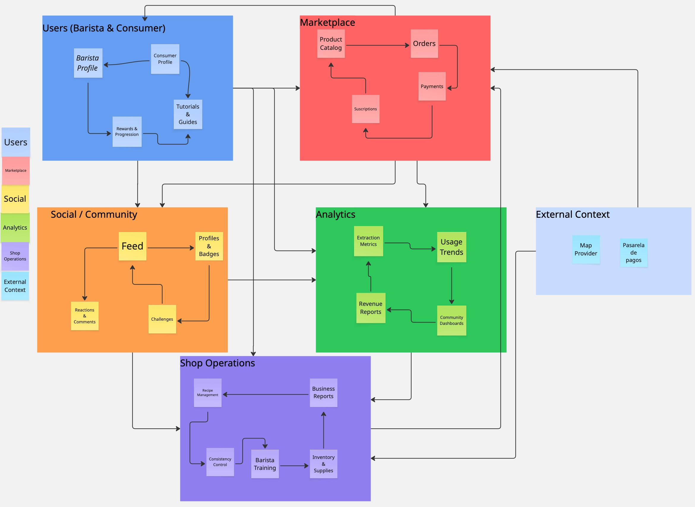
Enlace al Miro: https://miro.com/app/board/uXjVJHF5uag=/
El contexto Shop Operations incluye el submódulo Recipe Management, encargado de la creación, actualización, aprobación y estandarización de recetas dentro de la cafetería. Este contexto centraliza la administración de recetas, asegurando trazabilidad por lote, método y fecha, así como la visibilidad controlada por roles (barista, jefe de barra).
Este es el diagrama de Despliegue de nuestro sistema:
2.6. Tactical-Level Domain-Driven Design
2.6.1. Bounded Context: Sprint 1
En esta sección, para cada uno de los productos, se presentan las clases identificadas, explicando para cada una su nombre, propósito y la documentación de atributos y métodos considerados, junto con las relaciones entre ellas.
Bounded Context: Coffees
1. Clase: Coffee
• Propósito: Representa un café específico en el sistema, encapsulando toda la información básica de un café incluyendo su origen, variedad y características físicas. Es el Aggregate Root del bounded context.
• Atributos:
id: Long → Identificador único del café (heredado de AuditableAbstractAggregateRoot).
name: CoffeeName → Nombre del café (Value Object).
region: CoffeeRegion → Región de origen del café (Value Object).
variety: CoffeeVariety → Variedad específica del café (Value Object).
totalWeight: Double → Peso total del café en kilogramos.
createdAt: Date → Fecha de creación del registro (heredado de AuditableAbstractAggregateRoot).
updatedAt: Date → Fecha de última actualización (heredado de AuditableAbstractAggregateRoot).
• Métodos:
getName(): String → Devuelve el nombre del café.
getRegion(): String → Devuelve la región de origen del café.
getVariety(): String → Devuelve la variedad del café.
updateName(String name): void → Actualiza el nombre del café.
updateRegion(String region): void → Actualiza la región del café.
updateVariety(String variety): void → Actualiza la variedad del café.
updateTotalWeight(Double totalWeight): void → Actualiza el peso total del café.
• Relaciones:
Un Coffee puede tener muchos Defect (relación con el bounded context de Defects).
Un Coffee puede ser utilizado en muchos CoffeeLot (relación con el bounded context de Production).
Bounded Context: Preparation
1. Clase: Recipe
• Propósito: Representa una receta de preparación de café, encapsulando toda la información necesaria para preparar una bebida de café específica incluyendo método de extracción, ingredientes y pasos de preparación.
• Atributos:
id: Long → Identificador único de la receta (heredado de AuditableAbstractAggregateRoot).
userId: Long → Identificador del usuario propietario de la receta.
name: RecipeName → Nombre de la receta (Value Object).
cuppingSessionId: Long → Identificador de la sesión de cupping asociada.
portfolioId: Long → Identificador del portfolio al que pertenece la receta.
preparationTime: Integer → Tiempo de preparación en minutos.
steps: String → Pasos detallados de preparación.
tips: String → Consejos y recomendaciones para la preparación.
cupping: String → Notas de cata.
grindSize: String → Tamaño de molido requerido.
createdAt: Date → Fecha de creación del registro (heredado de AuditableAbstractAggregateRoot).
updatedAt: Date → Fecha de última actualización (heredado de AuditableAbstractAggregateRoot).
• Métodos:
getName(): String → Devuelve el nombre de la receta.
getImageUrl(): String → Devuelve la URL de la imagen.
getExtractionMethod(): ExtractionMethod → Devuelve el método de extracción.
getExtractionCategory(): ExtractionCategory → Devuelve la categoría de extracción.
getRatio(): String → Devuelve la proporción café/agua.
getPreparationTime(): Integer → Devuelve el tiempo de preparación.
getSteps(): String → Devuelve los pasos de preparación.
getTips(): String → Devuelve los consejos de preparación.
getCupping(): String → Devuelve las notas de cata.
getGrindSize(): String → Devuelve el tamaño de molido.
update(UpdateRecipeCommand command): Recipe → Actualiza la receta con los datos del comando.
• Relaciones:
Una Recipe pertenece a un Portfolio.
Una Recipe puede tener muchos Ingredient.
Una Recipe está asociada a una CuppingSession.
2. Clase: Portfolio
• Propósito: Representa una colección o portafolio de recetas de café, permitiendo organizar las recetas por categorías o proyectos específicos.
• Atributos:
id: Long → Identificador único del portfolio (heredado de AuditableAbstractAggregateRoot).
userId: Long → Identificador del usuario propietario del portfolio.
name: String → Nombre del portfolio.
createdAt: Date → Fecha de creación del registro (heredado de AuditableAbstractAggregateRoot).
updatedAt: Date → Fecha de última actualización (heredado de AuditableAbstractAggregateRoot).
• Métodos:
getName(): String → Devuelve el nombre del portfolio.
update(UpdatePortfolioCommand command): Portfolio → Actualiza el portfolio con los datos del comando.
• Relaciones:
Un Portfolio puede contener muchas Recipe.
Un Portfolio pertenece a un User.
3. Clase: Ingredient
• Propósito: Representa un ingrediente específico utilizado en una receta de café, definiendo la cantidad y unidad de medida necesaria.
• Atributos:
id: Long → Identificador único del ingrediente (heredado de AuditableAbstractAggregateRoot).
recipeId: Long → Identificador de la receta a la que pertenece el ingrediente.
name: IngredientName → Nombre del ingrediente (Value Object).
amount: Double → Cantidad del ingrediente.
unit: String → Unidad de medida (ej: "g", "ml", "cups").
createdAt: Date → Fecha de creación del registro (heredado de AuditableAbstractAggregateRoot).
updatedAt: Date → Fecha de última actualización (heredado de AuditableAbstractAggregateRoot).
• Métodos:
getName(): String → Devuelve el nombre del ingrediente.
getAmount(): Double → Devuelve la cantidad del ingrediente.
getUnit(): String → Devuelve la unidad de medida.
update(UpdateIngredientCommand command): Ingredient → Actualiza el ingrediente con los datos del comando.
• Relaciones:
Un Ingredient pertenece a una Recipe.
4. Clase: ExtractionMethod
• Propósito: Enum que define los métodos de extracción disponibles para preparar café, proporcionando valores estandarizados y conversión de datos.
• Atributos:
value: String → Valor del método de extracción (espresso, pour-over, french-press, etc.).
• Métodos:
getValue(): String → Devuelve el valor del método de extracción.
fromString(String text): ExtractionMethod → Convierte un string al enum correspondiente.
toString(): String → Devuelve la representación string del enum.
ExtractionMethodConverter.convertToDatabaseColumn(ExtractionMethod attribute): String → Convierte a formato de base de datos.
ExtractionMethodConverter.convertToEntityAttribute(String dbData): ExtractionMethod → Convierte desde formato de base de datos.
• Relaciones:
Es utilizado por la clase Recipe como atributo.
5. Clase: ExtractionCategory
• Propósito: Enum que categoriza los métodos de extracción en dos grupos principales: café filtrado y espresso, facilitando la organización y filtrado de recetas.
• Atributos:
value: String → Valor de la categoría (coffee, espresso).
• Métodos:
getValue(): String → Devuelve el valor de la categoría.
fromString(String text): ExtractionCategory → Convierte un string al enum correspondiente.
toString(): String → Devuelve la representación string del enum.
ExtractionCategoryConverter.convertToDatabaseColumn(ExtractionCategory attribute): String → Convierte a formato de base de datos.
ExtractionCategoryConverter.convertToEntityAttribute(String dbData): ExtractionCategory → Convierte desde formato de base de datos.
• Relaciones:
Es utilizado por la clase Recipe como atributo.
Bounded Context: Production
1. Clase: CoffeeLot
• Propósito: Representa un lote específico de café en el sistema de producción, encapsulando toda la información relacionada con la adquisición, procesamiento y estado de un lote de café.
• Atributos:
id: Long → Identificador único del lote de café (heredado de AuditableAbstractAggregateRoot).
userId: Long → Identificador del usuario propietario del lote.
supplierId: Long → Identificador del proveedor del lote.
lotName: CoffeeLotName → Nombre del lote de café (Value Object).
coffeeType: CoffeeType → Tipo de café (Value Object: Arábica, Robusta, Mezcla).
processingMethod: ProcessingMethod → Método de procesamiento del café (Value Object).
altitude: Integer → Altitud de cultivo en metros.
weight: Double → Peso del lote en kilogramos.
origin: Origin → Origen geográfico del café (Value Object).
status: CoffeeLotStatus → Estado actual del lote (Value Object).
certifications: List<String> → Lista de certificaciones del lote.
createdAt: Date → Fecha de creación del registro (heredado de AuditableAbstractAggregateRoot).
updatedAt: Date → Fecha de última actualización (heredado de AuditableAbstractAggregateRoot).
• Métodos:
getLotName(): String → Devuelve el nombre del lote.
getCoffeeType(): String → Devuelve el tipo de café.
getProcessingMethod(): String → Devuelve el método de procesamiento.
getAltitude(): Integer → Devuelve la altitud de cultivo.
getWeight(): Double → Devuelve el peso del lote.
getOrigin(): String → Devuelve el origen del café.
getStatus(): String → Devuelve el estado del lote.
getCertifications(): List<String> → Devuelve las certificaciones del lote.
update(UpdateCoffeeLotCommand command): CoffeeLot → Actualiza el lote con los datos del comando.
• Relaciones:
Un CoffeeLot pertenece a un Supplier.
Un CoffeeLot puede tener muchos RoastProfile.
Un CoffeeLot pertenece a un User.
2. Clase: RoastProfile
• Propósito: Representa un perfil de tueste específico para un lote de café, definiendo los parámetros de temperatura, duración y tipo de tueste para obtener características organolépticas deseadas.
• Atributos:
id: Long → Identificador único del perfil de tueste (heredado de AuditableAbstractAggregateRoot).
userId: Long → Identificador del usuario propietario del perfil.
name: RoastProfileName → Nombre del perfil de tueste (Value Object).
type: RoastType → Tipo de tueste (Value Object).
duration: Duration → Duración del tueste en minutos (Value Object).
tempStart: Temperature → Temperatura inicial del tueste en °C (Value Object).
tempEnd: Temperature → Temperatura final del tueste en °C (Value Object).
isFavorite: Boolean → Indica si el perfil es favorito del usuario.
coffeeLotId: Long → Identificador del lote de café asociado.
createdAt: Date → Fecha de creación del registro (heredado de AuditableAbstractAggregateRoot).
updatedAt: Date → Fecha de última actualización (heredado de AuditableAbstractAggregateRoot).
• Métodos:
getName(): String → Devuelve el nombre del perfil.
getType(): String → Devuelve el tipo de tueste.
getDuration(): Integer → Devuelve la duración del tueste.
getTempStart(): Double → Devuelve la temperatura inicial.
getTempEnd(): Double → Devuelve la temperatura final.
getIsFavorite(): Boolean → Devuelve si es favorito.
update(UpdateRoastProfileCommand command): RoastProfile → Actualiza el perfil con los datos del comando.
toggleFavorite(): void → Cambia el estado de favorito.
• Relaciones:
Un RoastProfile pertenece a un CoffeeLot.
Un RoastProfile pertenece a un User.
3. Clase: Supplier
• Propósito: Representa un proveedor de café en el sistema, encapsulando la información de contacto y especialidades de los proveedores que suministran lotes de café.
• Atributos:
id: Long → Identificador único del proveedor (heredado de AuditableAbstractAggregateRoot).
userId: Long → Identificador del usuario propietario del proveedor.
name: SupplierName → Nombre del proveedor (Value Object).
email: SupplierEmail → Correo electrónico del proveedor (Value Object).
phone: Long → Número de teléfono del proveedor.
location: SupplierLocation → Ubicación del proveedor (Value Object).
specialties: List<String> → Lista de especialidades del proveedor.
createdAt: Date → Fecha de creación del registro (heredado de AuditableAbstractAggregateRoot).
updatedAt: Date → Fecha de última actualización (heredado de AuditableAbstractAggregateRoot).
• Métodos:
getName(): String → Devuelve el nombre del proveedor.
getEmail(): String → Devuelve el correo electrónico.
getPhone(): Long → Devuelve el número de teléfono.
getLocation(): String → Devuelve la ubicación.
getSpecialties(): List<String> → Devuelve las especialidades.
update(UpdateSupplierCommand command): Supplier → Actualiza el proveedor con los datos del comando.
• Relaciones:
Un Supplier puede suministrar muchos CoffeeLot.
Un Supplier pertenece a un User.
Bounded Context: Production
1. Clase: CoffeeLot
• Propósito: Representa un lote específico de café en el sistema de producción, encapsulando toda la información relacionada con la adquisición, procesamiento y estado de un lote de café.
• Atributos:
id: Long → Identificador único del lote de café (heredado de AuditableAbstractAggregateRoot).
userId: Long → Identificador del usuario propietario del lote.
supplierId: Long → Identificador del proveedor del lote.
lotName: CoffeeLotName → Nombre del lote de café (Value Object).
coffeeType: CoffeeType → Tipo de café (Value Object: Arábica, Robusta, Mezcla).
processingMethod: ProcessingMethod → Método de procesamiento del café (Value Object).
altitude: Integer → Altitud de cultivo en metros.
weight: Double → Peso del lote en kilogramos.
origin: Origin → Origen geográfico del café (Value Object).
status: CoffeeLotStatus → Estado actual del lote (Value Object).
certifications: List<String> → Lista de certificaciones del lote.
createdAt: Date → Fecha de creación del registro (heredado de AuditableAbstractAggregateRoot).
updatedAt: Date → Fecha de última actualización (heredado de AuditableAbstractAggregateRoot).
• Métodos:
getLotName(): String → Devuelve el nombre del lote.
getCoffeeType(): String → Devuelve el tipo de café.
getProcessingMethod(): String → Devuelve el método de procesamiento.
getAltitude(): Integer → Devuelve la altitud de cultivo.
getWeight(): Double → Devuelve el peso del lote.
getOrigin(): String → Devuelve el origen del café.
getStatus(): String → Devuelve el estado del lote.
getCertifications(): List<String> → Devuelve las certificaciones del lote.
update(UpdateCoffeeLotCommand command): CoffeeLot → Actualiza el lote con los datos del comando.
• Relaciones:
Un CoffeeLot pertenece a un Supplier.
Un CoffeeLot puede tener muchos RoastProfile.
Un CoffeeLot pertenece a un User.
2. Clase: RoastProfile
• Propósito: Representa un perfil de tueste específico para un lote de café, definiendo los parámetros de temperatura, duración y tipo de tueste para obtener características organolépticas deseadas.
• Atributos:
id: Long → Identificador único del perfil de tueste (heredado de AuditableAbstractAggregateRoot).
userId: Long → Identificador del usuario propietario del perfil.
name: RoastProfileName → Nombre del perfil de tueste (Value Object).
type: RoastType → Tipo de tueste (Value Object).
duration: Duration → Duración del tueste en minutos (Value Object).
tempStart: Temperature → Temperatura inicial del tueste en °C (Value Object).
tempEnd: Temperature → Temperatura final del tueste en °C (Value Object).
isFavorite: Boolean → Indica si el perfil es favorito del usuario.
coffeeLotId: Long → Identificador del lote de café asociado.
createdAt: Date → Fecha de creación del registro (heredado de AuditableAbstractAggregateRoot).
updatedAt: Date → Fecha de última actualización (heredado de AuditableAbstractAggregateRoot).
• Métodos:
getName(): String → Devuelve el nombre del perfil.
getType(): String → Devuelve el tipo de tueste.
getDuration(): Integer → Devuelve la duración del tueste.
getTempStart(): Double → Devuelve la temperatura inicial.
getTempEnd(): Double → Devuelve la temperatura final.
getIsFavorite(): Boolean → Devuelve si es favorito.
update(UpdateRoastProfileCommand command): RoastProfile → Actualiza el perfil con los datos del comando.
toggleFavorite(): void → Cambia el estado de favorito.
• Relaciones:
Un RoastProfile pertenece a un CoffeeLot.
Un RoastProfile pertenece a un User.
3. Clase: Supplier
• Propósito: Representa un proveedor de café en el sistema, encapsulando la información de contacto y especialidades de los proveedores que suministran lotes de café.
• Atributos:
id: Long → Identificador único del proveedor (heredado de AuditableAbstractAggregateRoot).
userId: Long → Identificador del usuario propietario del proveedor.
name: SupplierName → Nombre del proveedor (Value Object).
email: SupplierEmail → Correo electrónico del proveedor (Value Object).
phone: Long → Número de teléfono del proveedor.
location: SupplierLocation → Ubicación del proveedor (Value Object).
specialties: List<String> → Lista de especialidades del proveedor.
createdAt: Date → Fecha de creación del registro (heredado de AuditableAbstractAggregateRoot).
updatedAt: Date → Fecha de última actualización (heredado de AuditableAbstractAggregateRoot).
• Métodos:
getName(): String → Devuelve el nombre del proveedor.
getEmail(): String → Devuelve el correo electrónico.
getPhone(): Long → Devuelve el número de teléfono.
getLocation(): String → Devuelve la ubicación.
getSpecialties(): List<String> → Devuelve las especialidades.
update(UpdateSupplierCommand command): Supplier → Actualiza el proveedor con los datos del comando.
• Relaciones:
Un Supplier puede suministrar muchos CoffeeLot.
Un Supplier pertenece a un User.
Bounded Context: Profile
1. Clase: Profile
• Propósito: Representa el perfil completo de un usuario en el sistema, encapsulando toda la información personal, profesional y de configuración necesaria para personalizar la experiencia del usuario en la plataforma de café.
• Atributos:
id: Long → Identificador único del perfil (heredado de AuditableAbstractAggregateRoot).
emailAddress: EmailAddress → Dirección de correo electrónico del usuario (Value Object).
name: String → Nombre completo del usuario.
password: String → Contraseña encriptada del usuario.
role: String → Rol del usuario en el sistema (ej: admin, user, barista).
cafeteriaName: String → Nombre de la cafetería asociada al usuario.
experience: String → Nivel de experiencia del usuario en café.
profilePicture: String → URL o ruta de la imagen de perfil del usuario.
paymentMethod: String → Método de pago preferido del usuario.
isFirstLogin: boolean → Indica si es el primer inicio de sesión del usuario.
plan: String → Plan de suscripción del usuario.
hasPlan: boolean → Indica si el usuario tiene un plan activo.
createdAt: Date → Fecha de creación del registro (heredado de AuditableAbstractAggregateRoot).
updatedAt: Date → Fecha de última actualización (heredado de AuditableAbstractAggregateRoot).
• Métodos:
getEmailAddress(): String → Devuelve la dirección de correo electrónico.
getName(): String → Devuelve el nombre del usuario.
getPassword(): String → Devuelve la contraseña del usuario.
getRole(): String → Devuelve el rol del usuario.
getCafeteriaName(): String → Devuelve el nombre de la cafetería.
getExperience(): String → Devuelve el nivel de experiencia.
getProfilePicture(): String → Devuelve la imagen de perfil.
getPaymentMethod(): String → Devuelve el método de pago.
isFirstLogin(): boolean → Devuelve si es el primer inicio de sesión.
getPlan(): String → Devuelve el plan de suscripción.
hasPlan(): boolean → Devuelve si tiene un plan activo.
updateName(String name): void → Actualiza el nombre del usuario.
updateEmailAddress(String email): void → Actualiza la dirección de correo electrónico.
updatePassword(String password): void → Actualiza la contraseña del usuario.
updateRole(String role): void → Actualiza el rol del usuario.
updateCafeteriaName(String cafeteriaName): void → Actualiza el nombre de la cafetería.
updateExperience(String experience): void → Actualiza el nivel de experiencia.
updateProfilePicture(String profilePicture): void → Actualiza la imagen de perfil.
updatePaymentMethod(String paymentMethod): void → Actualiza el método de pago.
updatePlan(String plan): void → Actualiza el plan de suscripción.
updateFirstLoginStatus(boolean isFirstLogin): void → Actualiza el estado de primer inicio de sesión.
updateHasPlanStatus(boolean hasPlan): void → Actualiza el estado del plan.
• Relaciones:
Un Profile puede estar asociado a múltiples entidades de otros bounded contexts como propietario.
Un Profile puede tener múltiples CoffeeLot, Recipe, RoastProfile, etc. en otros contextos.
2.6.1.1. Domain Layer
Esta capa explica por medio de qué clases representará el core de la aplicación y las reglas de negocio que pertenecen al dominio para el bounded context. Aquí las clases de categorías como Entities, Value Objects, Aggregates, Factories, Domain Services.
Bounded Context: Coffees
Aggregates
Coffee
• Tipo: Aggregate Root • Propósito: Representa la raíz de agregado para el concepto de café, encapsulando todas las reglas de negocio relacionadas con la gestión de cafés en el sistema.
• Responsabilidades:
Mantener la consistencia de los datos del café
Validar las reglas de negocio del dominio de café
Coordinar las operaciones sobre los value objects relacionados
• Invariantes:
El café debe tener un nombre válido y no vacío
La región debe ser especificada y válida
La variedad debe estar definida
El peso total debe ser un valor positivo
⸻
Entities
Coffee• Tipo: Entity (Aggregate Root) • Propósito: Entidad principal que representa un café específico con identidad única en el sistema.
• Atributos de Identidad:
id: Long → Identificador único del café
• Atributos de Estado:
name: CoffeeName → Nombre del café (Value Object)
region: CoffeeRegion → Región de origen (Value Object)
variety: CoffeeVariety → Variedad del café (Value Object)
totalWeight: Double → Peso total en kilogramos
• Comportamientos:
Creación de café con validaciones de dominio
Actualización de propiedades con mantenimiento de invariantes
Consulta de información del café
Value Objects
CoffeeName• Propósito: Encapsula el nombre del café asegurando que cumple con las reglas de negocio del dominio.
• Reglas de Negocio:
No puede ser nulo o vacío
Debe contener un valor significativo
• Inmutabilidad: Garantizada por el patrón record de Java
CoffeeRegion• Propósito: Representa la región geográfica de origen del café con validaciones específicas del dominio.
• Reglas de Negocio:
La región no puede ser nula o vacía
Debe representar una región válida de cultivo de café
• Inmutabilidad: Garantizada por el patrón record de Java
CoffeeVariety• Propósito: Define la variedad específica del café (ej: Bourbon, Typica, Caturra) con validaciones de dominio.
• Reglas de Negocio:
La variedad no puede ser nula o vacía
Debe representar una variedad conocida de café
• Inmutabilidad: Garantizada por el patrón record de Java
Domain Services
CoffeeCommandService• Tipo: Domain Service Interface • Propósito: Define las operaciones de comando (escritura) para el dominio de café, encapsulando la lógica de negocio compleja.
• Responsabilidades:
Procesar comandos de creación de café
Validar reglas de negocio complejas
Coordinar con repositorios para persistencia
• Operaciones:
handle(CreateCoffeeCommand): Optional<Coffee> → Procesa la creación de un nuevo café
CoffeeQueryService• Tipo: Domain Service Interface • Propósito: Define las operaciones de consulta (lectura) para el dominio de café, proporcionando acceso controlado a los datos.
• Responsabilidades:
Procesar consultas de café
Aplicar filtros de dominio
Retornar datos en formato apropiado
• Operaciones:
handle(GetCoffeeByIdQuery): Optional<Coffee> → Obtiene un café por su identificador
handle(GetAllCoffeesQuery): List<Coffee> → Obtiene todos los cafés disponibles
Reglas de Negocio del Dominio
Integridad del Café:
Todo café debe tener un nombre único y descriptivo
La región de origen debe estar especificada
La variedad debe ser válida y reconocida
Validaciones de Datos:
Los nombres no pueden estar vacíos o ser nulos
El peso total debe ser un valor positivo
Todos los value objects mantienen su propia consistencia
Consistencia del Agregado:
El agregado Coffee mantiene la consistencia de todos sus componentes
Las modificaciones se realizan a través de métodos controlados
Se preserva la integridad referencial dentro del agregado
Bounded Context: Management
Aggregates
InventoryEntry
• Tipo: Aggregate Root • Propósito: Representa la raíz de agregado para el concepto de entrada de inventario, encapsulando todas las reglas de negocio relacionadas con el control y gestión del uso de lotes de café.
• Responsabilidades:
Mantener la consistencia de los datos de consumo de inventario
Validar las reglas de negocio del dominio de gestión de inventario
Coordinar las operaciones sobre los value objects relacionados
Registrar el uso de café de manera trazable
• Invariantes:
La cantidad utilizada debe ser un valor positivo
La fecha de uso no puede ser nula
El producto final debe estar especificado
Debe existir una relación válida con un lote de café
Debe estar asociado a un usuario válido
Entities
InventoryEntry
• Tipo: Entity (Aggregate Root) • Propósito: Entidad principal que representa una entrada de inventario con identidad única, registrando el uso específico de un lote de café.
• Atributos de Identidad:
id: Long → Identificador único de la entrada de inventario
• Atributos de Estado:
userId: Long → Identificador del usuario que registra la entrada
coffeeLotId: Long → Identificador del lote de café utilizado
quantityUsed: Double → Cantidad de café utilizada en kilogramos
dateUsed: LocalDateTime → Fecha y hora exacta del uso
finalProduct: FinalProduct → Producto final obtenido (Value Object)
• Comportamientos:
Creación de entrada de inventario con validaciones de dominio
Actualización de información de uso con mantenimiento de invariantes
Consulta de datos de consumo
Trazabilidad del uso de café
Value Objects
FinalProduct
• Propósito: Encapsula el producto final obtenido del uso del café, asegurando que cumple con las reglas de negocio del dominio de gestión.
• Reglas de Negocio:
No puede ser nulo o vacío
Debe contener un valor descriptivo del producto final
No puede exceder 100 caracteres de longitud
Debe representar un producto válido derivado del café
• Inmutabilidad: Garantizada por el patrón record de Java
Domain Services
InventoryEntryCommandService
• Tipo: Domain Service Interface • Propósito: Define las operaciones de comando (escritura) para el dominio de gestión de inventario, encapsulando la lógica de negocio compleja relacionada con el control de stock.
• Responsabilidades:
Procesar comandos de creación, actualización y eliminación de entradas de inventario
Validar reglas de negocio complejas relacionadas con el consumo de café
Coordinar con repositorios para persistencia
Mantener la integridad del inventario
• Operaciones:
handle(CreateInventoryEntryCommand): Optional<InventoryEntry> → Procesa la creación de una nueva entrada
handle(UpdateInventoryEntryCommand): Optional<InventoryEntry> → Procesa la actualización de una entrada existente
handle(DeleteInventoryEntryCommand): boolean → Procesa la eliminación de una entrada
InventoryEntryQueryService
• Tipo: Domain Service Interface • Propósito: Define las operaciones de consulta (lectura) para el dominio de gestión de inventario, proporcionando acceso controlado a los datos de consumo.
• Responsabilidades:
Procesar consultas de entradas de inventario
Aplicar filtros de dominio específicos
Proporcionar vistas agregadas del consumo
Generar reportes de uso de inventario
• Operaciones:
getAllInventoryEntries(): List<InventoryEntry> → Obtiene todas las entradas de inventario
getInventoryEntriesByUserId(Long): List<InventoryEntry> → Obtiene entradas por usuario
getInventoryEntriesByCoffeeLotId(Long): List<InventoryEntry> → Obtiene entradas por lote de café
getInventoryEntryById(Long): Optional<InventoryEntry> → Obtiene una entrada específica
⸻
Reglas de Negocio del Dominio
Control de Inventario:
Toda entrada debe registrar una cantidad positiva de café utilizado
Debe existir trazabilidad completa del uso de cada lote
La fecha de uso debe ser registrada con precisión
Integridad de Datos:
Cada entrada debe estar asociada a un lote de café válido
Debe identificar claramente al usuario responsable del registro
El producto final debe estar especificado y ser válido
Validaciones de Negocio:
No se puede registrar uso de cantidad negativa o cero
La fecha de uso no puede ser futura (regla implícita)
El producto final debe ser descriptivo y no exceder límites
Consistencia del Agregado:
El agregado InventoryEntry mantiene la consistencia de todos sus componentes
Las modificaciones preservan la integridad referencial
Se garantiza la trazabilidad del consumo de inventario
Auditoría y Trazabilidad:
Cada entrada queda registrada permanentemente para auditoría
Se mantiene un histórico completo del uso de cada lote
Permite análisis de consumo y eficiencia
Bounded Context: Preparation
Aggregates
Recipe
• Tipo: Aggregate Root • Propósito: Representa la raíz de agregado para el concepto de receta de café, encapsulando todas las reglas de negocio relacionadas con la preparación de bebidas de café, incluyendo métodos de extracción, ingredientes y pasos de preparación.
• Responsabilidades:
Mantener la consistencia de todos los datos de la receta
Validar las reglas de negocio del dominio de preparación de café
Coordinar las operaciones sobre los ingredientes y parámetros de preparación
Garantizar la integridad de los métodos de extracción
• Invariantes:
La receta debe tener un nombre válido y único
El método de extracción debe ser válido y compatible con la categoría
El tiempo de preparación debe ser positivo
Los pasos de preparación deben estar definidos
La proporción café/agua debe ser especificada
Portfolio• Tipo: Aggregate Root • Propósito: Representa una colección organizada de recetas, permitiendo la gestión y categorización de recetas por proyectos o temáticas específicas.
• Responsabilidades:
Mantener la consistencia de la colección de recetas
Validar la integridad del portfolio
Coordinar la organización de recetas
• Invariantes:
El portfolio debe tener un nombre descriptivo
Debe estar asociado a un usuario válido
Ingredient• Tipo: Aggregate Root • Propósito: Representa un ingrediente específico utilizado en una receta, con sus cantidades y unidades de medida precisas.
• Responsabilidades:
Mantener la consistencia de los datos del ingrediente
Validar cantidades y unidades de medida
Garantizar la trazabilidad hacia la receta
• Invariantes:
El ingrediente debe tener un nombre válido
La cantidad debe ser positiva
Debe estar asociado a una receta válida
Entities
Recipe
• Tipo: Entity (Aggregate Root) • Propósito: Entidad principal que representa una receta de preparación de café con identidad única.
• Atributos de Identidad:
id: Long → Identificador único de la receta
• Atributos de Estado:
userId: Long → Identificador del usuario propietario
name: RecipeName → Nombre de la receta (Value Object)
imageUrl: String → URL de la imagen de la receta
extractionMethod: ExtractionMethod → Método de extracción (Value Object)
extractionCategory: ExtractionCategory → Categoría de extracción (Value Object)
ratio: String → Proporción café/agua
cuppingSessionId: Long → ID de sesión de cupping asociada
portfolioId: Long → ID del portfolio al que pertenece
preparationTime: Integer → Tiempo de preparación en minutos
steps: String → Pasos detallados de preparación
tips: String → Consejos y recomendaciones
cupping: String → Notas de cata
grindSize: String → Tamaño de molido requerido
Portfolio
• Tipo: Entity (Aggregate Root) • Propósito: Entidad que representa una colección de recetas con identidad única.
• Atributos de Identidad:
id: Long → Identificador único del portfolio
• Atributos de Estado:
userId: Long → Identificador del usuario propietario
name: String → Nombre del portfolio
Ingredient
• Tipo: Entity (Aggregate Root) • Propósito: Entidad que representa un ingrediente específico con identidad única.
• Atributos de Identidad:
id: Long → Identificador único del ingrediente
• Atributos de Estado:
recipeId: Long → Identificador de la receta asociada
name: IngredientName → Nombre del ingrediente (Value Object)
amount: Double → Cantidad del ingrediente
unit: String → Unidad de medida
** Value Objects**
RecipeName• Propósito: Encapsula el nombre de una receta asegurando que cumple con las reglas de negocio específicas del dominio de preparación.
• Reglas de Negocio:
No puede ser nulo o vacío
No puede exceder 20 caracteres de longitud
Debe ser descriptivo y único dentro del contexto
• Inmutabilidad: Garantizada por el patrón record de Java
IngredientName• Propósito: Encapsula el nombre de un ingrediente con validaciones específicas del dominio.
• Reglas de Negocio:
No puede ser nulo o vacío
No puede exceder 100 caracteres de longitud
Debe representar un ingrediente válido para preparación de café
• Inmutabilidad: Garantizada por el patrón record de Java
ExtractionMethod• Propósito: Define los métodos de extracción disponibles para preparar café, proporcionando valores estandarizados y consistentes.
Debe ser compatible con la categoría de extracción
Incluye conversión automática de formatos
• Inmutabilidad: Garantizada por enum
ExtractionCategory• Propósito: Categoriza los métodos de extracción en grupos principales para facilitar la organización y filtrado.
• Valores Válidos:
COFFEE (café filtrado)
ESPRESSO (café espresso)
• Reglas de Negocio:
Debe ser una de las categorías reconocidas
Debe ser consistente con el método de extracción seleccionado
• Inmutabilidad: Garantizada por enum
Domain Services
RecipeCommandService• Tipo: Domain Service Interface • Propósito: Define las operaciones de comando (escritura) para el dominio de recetas, encapsulando la lógica de negocio compleja relacionada con la gestión de recetas.
• Responsabilidades:
Procesar comandos de creación, actualización y eliminación de recetas
Validar reglas de negocio complejas de preparación
Coordinar con repositorios para persistencia
Mantener la integridad de las recetas y sus relaciones
• Operaciones:
handle(CreateRecipeCommand): Optional<Recipe> → Procesa la creación de una nueva receta
handle(UpdateRecipeCommand): Optional<Recipe> → Procesa la actualización de una receta existente
handle(DeleteRecipeCommand): boolean → Procesa la eliminación de una receta
RecipeQueryService• Tipo: Domain Service Interface • Propósito: Define las operaciones de consulta (lectura) para el dominio de recetas.
• Operaciones:
handle(GetAllRecipesQuery): List<Recipe> → Obtiene todas las recetas disponibles
handle(GetRecipeByIdQuery): Optional<Recipe> → Obtiene una receta específica por ID
PortfolioCommandService• Tipo: Domain Service Interface • Propósito: Maneja las operaciones de comando para portfolios de recetas.
• Operaciones:
handle(CreatePortfolioCommand): Optional<Portfolio> → Crea un nuevo portfolio
handle(UpdatePortfolioCommand): Optional<Portfolio> → Actualiza un portfolio existente
handle(DeletePortfolioCommand): boolean → Elimina un portfolio
PortfolioQueryService• Tipo: Domain Service Interface • Propósito: Maneja las operaciones de consulta para portfolios.
IngredientCommandService• Tipo: Domain Service Interface • Propósito: Maneja las operaciones de comando para ingredientes de recetas.
• Operaciones:
handle(CreateIngredientCommand): Optional<Ingredient> → Crea un nuevo ingrediente
handle(UpdateIngredientCommand): Optional<Ingredient> → Actualiza un ingrediente existente
handle(DeleteIngredientCommand): boolean → Elimina un ingrediente
Reglas de Negocio del Dominio
Integridad de Recetas:
Toda receta debe tener un método de extracción válido
La categoría debe ser consistente con el método seleccionado
El tiempo de preparación debe ser realista y positivo
Los pasos deben estar claramente definidos
Consistencia de Preparación:
La proporción café/agua debe seguir estándares reconocidos
El tamaño de molido debe ser apropiado para el método
Las notas de cupping deben proporcionar información útil
Gestión de Ingredientes:
Cada ingrediente debe tener cantidad y unidad especificadas
Las cantidades deben ser positivas y realistas
Los ingredientes deben estar asociados a recetas válidas
Organización de Portfolios:
Los portfolios deben tener nombres descriptivos
Debe mantenerse la trazabilidad hacia el usuario propietario
La organización debe facilitar la búsqueda y categorización
Validaciones de Dominio:
Los nombres no pueden exceder límites establecidos
Todos los value objects mantienen su propia consistencia
Se preserva la integridad referencial entre entidades
Trazabilidad y Auditoría:
Cada receta mantiene referencia a su creador
Se registra la asociación con sesiones de cupping
Se mantiene el historial de cambios para auditoría
Bounded Context: Production
Aggregates
CoffeeLot
• Tipo: Aggregate Root • Propósito: Representa la raíz de agregado para el concepto de lote de café, encapsulando todas las reglas de negocio relacionadas con la adquisición, procesamiento y gestión de lotes de café desde el proveedor hasta el producto final.
• Responsabilidades:
Mantener la consistencia de todos los datos del lote de café
Validar las reglas de negocio del dominio de producción
Coordinar las operaciones sobre los value objects relacionados
Garantizar la trazabilidad desde el origen hasta el consumo
Gestionar el estado del lote (verde/tostado)
• Invariantes:
El lote debe tener un nombre único y descriptivo
Debe estar asociado a un proveedor válido
El peso debe ser positivo
La altitud debe estar en rangos válidos para cultivo de café
El estado debe ser uno de los valores permitidos
Las certificaciones deben ser válidas y verificables
RoastProfile
• Tipo: Aggregate Root • Propósito: Representa un perfil de tueste específico, encapsulando todas las reglas de negocio relacionadas con los parámetros de tostado para obtener características organolépticas deseadas.
• Responsabilidades:
Mantener la consistencia de los parámetros de tueste
Validar rangos de temperatura y duración
Coordinar la relación con lotes de café
Gestionar el estado de favorito del usuario
• Invariantes:
Las temperaturas deben estar en rangos válidos para tueste
La duración debe ser positiva y realista
Debe estar asociado a un lote de café válido
El tipo de tueste debe ser reconocido
Supplier
• Tipo: Aggregate Root • Propósito: Representa un proveedor de café, encapsulando todas las reglas de negocio relacionadas con la gestión de proveedores y sus especialidades.
• Responsabilidades:
Mantener la consistencia de los datos del proveedor
Validar información de contacto
Gestionar las especialidades del proveedor
Coordinar la relación con lotes suministrados
• Invariantes:
Debe tener información de contacto válida
El email debe tener formato correcto
Las especialidades deben ser relevantes al negocio del café
Debe estar asociado a un usuario válido
Entities
CoffeeLot
• Tipo: Entity (Aggregate Root) • Propósito: Entidad principal que representa un lote específico de café con identidad única y ciclo de vida completo.
• Atributos de Identidad:
id: Long → Identificador único del lote de café
• Atributos de Estado:
userId: Long → Identificador del usuario propietario
supplierId: Long → Identificador del proveedor
lotName: CoffeeLotName → Nombre del lote (Value Object)
coffeeType: CoffeeType → Tipo de café (Value Object)
processingMethod: ProcessingMethod → Método de procesamiento (Value Object)
altitude: Integer → Altitud de cultivo en metros
weight: Double → Peso del lote en kilogramos
origin: Origin → Origen geográfico (Value Object)
status: CoffeeLotStatus → Estado del lote (Value Object)
certifications: List<String> → Lista de certificaciones
RoastProfile
• Tipo: Entity (Aggregate Root) • Propósito: Entidad que representa un perfil de tueste con identidad única y parámetros específicos.
• Atributos de Identidad:
id: Long → Identificador único del perfil de tueste
• Atributos de Estado:
userId: Long → Identificador del usuario propietario
name: RoastProfileName → Nombre del perfil (Value Object)
type: RoastType → Tipo de tueste (Value Object)
duration: Duration → Duración del tueste (Value Object)
tempStart: Temperature → Temperatura inicial (Value Object)
tempEnd: Temperature → Temperatura final (Value Object)
isFavorite: Boolean → Indica si es favorito
coffeeLotId: Long → ID del lote de café asociado
Supplier• Tipo: Entity (Aggregate Root) • Propósito: Entidad que representa un proveedor de café con identidad única y información completa.
• Atributos de Identidad:
id: Long → Identificador único del proveedor
• Atributos de Estado:
userId: Long → Identificador del usuario propietario
name: SupplierName → Nombre del proveedor (Value Object)
email: SupplierEmail → Email del proveedor (Value Object)
phone: Long → Número de teléfono
location: SupplierLocation → Ubicación del proveedor (Value Object)
specialties: List<String> → Lista de especialidades
⸻
Value Objects
CoffeeLotName• Propósito: Encapsula el nombre de un lote de café con validaciones específicas del dominio de producción.
• Reglas de Negocio:
No puede ser nulo o vacío
No puede exceder 100 caracteres
Debe ser descriptivo del lote específico
• Inmutabilidad: Garantizada por el patrón record de Java
CoffeeType
• Propósito: Define el tipo de café con valores válidos restringidos para mantener consistencia.
• Valores Válidos: Arábica, Robusta, Mezcla
• Reglas de Negocio:
Debe ser uno de los tipos reconocidos
No puede exceder 50 caracteres
Debe corresponder a variedades comerciales
• Inmutabilidad: Garantizada por el patrón record de Java
ProcessingMethod
• Propósito: Define el método de procesamiento del café con valores estandarizados.
• Inmutabilidad: Garantizada por el patrón record de Java
SupplierName• Propósito: Encapsula el nombre de un proveedor con validaciones específicas.
• Reglas de Negocio:
No puede ser nulo o vacío
No puede exceder 100 caracteres
Debe identificar claramente al proveedor
• Inmutabilidad: Garantizada por el patrón record de Java
SupplierEmail• Propósito: Encapsula el email de un proveedor con validaciones de formato.
• Reglas de Negocio:
Debe tener formato de email válido
No puede ser nulo o vacío
Debe ser único en el sistema
• Inmutabilidad: Garantizada por el patrón record de Java
SupplierLocation
• Propósito: Encapsula la ubicación de un proveedor con validaciones geográficas.
• Reglas de Negocio:
No puede ser nulo o vacío
Debe representar una ubicación válida
Importante para logística y trazabilidad
• Inmutabilidad: Garantizada por el patrón record de Java
⸻
Domain Services
CoffeeLotCommandService• Tipo: Domain Service Interface • Propósito: Define las operaciones de comando (escritura) para el dominio de lotes de café, encapsulando la lógica de negocio compleja relacionada con la gestión del inventario de café verde.
• Responsabilidades:
Procesar comandos de creación, actualización y eliminación de lotes
Validar reglas de negocio complejas de producción
Coordinar con repositorios para persistencia
Mantener la integridad de los lotes y sus relaciones
CoffeeLotQueryService• Tipo: Domain Service Interface • Propósito: Define las operaciones de consulta (lectura) para el dominio de lotes de café.
• Responsabilidades:
Procesar consultas de lotes por diversos criterios
Aplicar filtros de dominio específicos
Proporcionar vistas especializadas de los datos
RoastProfileCommandService• Tipo: Domain Service Interface • Propósito: Maneja las operaciones de comando para perfiles de tueste.
• Operaciones:
handle(CreateRoastProfileCommand): Optional<RoastProfile> → Crea un nuevo perfil
handle(UpdateRoastProfileCommand): Optional<RoastProfile> → Actualiza un perfil existente
handle(DeleteRoastProfileCommand): boolean → Elimina un perfil
RoastProfileQueryService• Tipo: Domain Service Interface • Propósito: Maneja las operaciones de consulta para perfiles de tueste.
SupplierCommandService• Tipo: Domain Service Interface • Propósito: Maneja las operaciones de comando para proveedores de café.
SupplierQueryService• Tipo: Domain Service Interface • Propósito: Maneja las operaciones de consulta para proveedores.
• Operaciones:
handle(GetAllSuppliersQuery): List<Supplier> → Obtiene todos los proveedores
handle(GetSupplierByIdQuery): Optional<Supplier> → Obtiene proveedor por ID
handle(GetSuppliersByUserIdQuery): List<Supplier> → Obtiene proveedores por usuario
Reglas de Negocio del Dominio
Gestión de Lotes de Café:
Todo lote debe estar asociado a un proveedor válido
El peso debe ser positivo y realista para operaciones comerciales
La altitud debe estar en rangos válidos para cultivo de café (0-3000m típicamente)
El estado debe reflejar el procesamiento actual del café
Trazabilidad y Origen:
Cada lote debe mantener información completa de origen
Las certificaciones deben ser verificables y relevantes
El método de procesamiento debe ser consistente con el origen
Perfiles de Tueste:
Las temperaturas deben estar en rangos seguros y efectivos
La duración debe ser apropiada para el tipo de tueste
Debe existir coherencia entre temperatura inicial, final y duración
Los perfiles deben estar asociados a lotes específicos
Gestión de Proveedores:
La información de contacto debe ser válida y actualizada
Las especialidades deben ser relevantes al negocio
Debe mantenerse la trazabilidad de todos los lotes suministrados
Validaciones de Calidad:
Los tipos de café deben corresponder a variedades comerciales
Los métodos de procesamiento deben ser reconocidos en la industria
Los estados del lote deben reflejar la realidad física
Integridad Referencial:
Los lotes deben mantener referencias válidas a proveedores
Los perfiles de tueste deben estar asociados a lotes existentes
Se debe preservar la consistencia en todas las relaciones
Auditoría y Control:
Todos los cambios deben ser trazables
Se debe mantener historial de estados del lote
Las operaciones deben ser reversibles cuando sea apropiado
Bounded Context: Profile
Aggregates
Profile• Tipo: Aggregate Root • Propósito: Representa la raíz de agregado para el concepto de perfil de usuario, encapsulando todas las reglas de negocio relacionadas con la gestión de identidad, autenticación, autorización y personalización de la experiencia del usuario en la plataforma.
• Responsabilidades:
Mantener la consistencia de todos los datos del perfil de usuario
Validar las reglas de negocio del dominio de gestión de usuarios
Coordinar las operaciones sobre los value objects relacionados
Gestionar el ciclo de vida del usuario desde el registro hasta la configuración completa
Controlar el acceso y los permisos del usuario en el sistema
Administrar la información de suscripción y planes del usuario
• Invariantes:
El perfil debe tener una dirección de email única y válida
El nombre del usuario debe estar definido
El rol debe ser uno de los roles válidos del sistema
Si tiene plan activo, debe tener un plan específico definido
La configuración de primer login debe ser consistente con el estado del perfil
Los datos de pago deben estar presentes si tiene un plan de pago
Entities
Profile• Tipo: Entity (Aggregate Root) • Propósito: Entidad principal que representa un perfil de usuario con identidad única y gestión completa del ciclo de vida del usuario.
• Atributos de Identidad:
id: Long → Identificador único del perfil de usuario
• Atributos de Estado:
emailAddress: EmailAddress → Dirección de email del usuario (Value Object)
name: String → Nombre completo del usuario
password: String → Contraseña encriptada para autenticación
role: String → Rol del usuario en el sistema (admin, user, barista, etc.)
cafeteriaName: String → Nombre de la cafetería asociada al usuario
experience: String → Nivel de experiencia del usuario en café
profilePicture: String → URL o ruta de la imagen de perfil
paymentMethod: String → Método de pago preferido del usuario
isFirstLogin: boolean → Bandera que indica si es el primer inicio de sesión
plan: String → Plan de suscripción actual del usuario
hasPlan: boolean → Indica si el usuario tiene un plan activo
• Comportamientos:
Creación de perfil con validaciones de dominio
Actualización de información personal y profesional
Gestión de configuración de cuenta y preferencias
Control de estado de suscripción y planes
Manejo de primer inicio de sesión y configuración inicial
Value Objects
EmailAddress• Propósito: Encapsula la dirección de correo electrónico del usuario, asegurando que cumple con las reglas de negocio específicas del dominio de perfiles y autenticación.
• Reglas de Negocio:
Debe tener formato de email válido (validación @Email de Jakarta)
Debe ser único en todo el sistema
No puede ser nulo para perfiles activos
Sirve como identificador alternativo del usuario
• Validaciones:
Formato de email estándar RFC 5322
Unicidad garantizada a nivel de dominio
Inmutabilidad para preservar integridad referencial
• Inmutabilidad: Garantizada por el patrón record de Java
** Domain Services**
ProfileCommandService• Tipo: Domain Service Interface • Propósito: Define las operaciones de comando (escritura) para el dominio de perfiles de usuario, encapsulando la lógica de negocio compleja relacionada con la gestión del ciclo de vida del usuario.
• Responsabilidades:
Procesar comandos de creación y actualización de perfiles
Validar reglas de negocio complejas relacionadas con usuarios
Coordinar con repositorios para persistencia
Mantener la integridad de los perfiles y sus relaciones
Generar eventos de dominio relevantes (ej: ProfileCreatedEvent)
Validar unicidad de email addresses
• Operaciones:
handle(CreateProfileCommand): Optional<Profile> → Procesa la creación de un nuevo perfil de usuario
handle(UpdateProfileCommand): Optional<Profile> → Procesa la actualización de un perfil existente
• Excepciones:
IllegalArgumentException si el email ya existe en el sistema
ProfileQueryService• Tipo: Domain Service Interface • Propósito: Define las operaciones de consulta (lectura) para el dominio de perfiles de usuario, proporcionando acceso controlado a los datos de usuarios.
• Responsabilidades:
Procesar consultas de perfiles por diversos criterios
Aplicar filtros de dominio específicos
Proporcionar vistas especializadas de los datos de usuario
Mantener la seguridad y privacidad de los datos
• Operaciones:
handle(GetProfileByIdQuery): Optional<Profile> → Obtiene un perfil específico por su ID
handle(GetProfileByEmailQuery): Optional<Profile> → Obtiene un perfil por su dirección de email
handle(GetAllProfilesQuery): List<Profile> → Obtiene todos los perfiles (con restricciones de seguridad)
Reglas de Negocio del Dominio
Gestión de Identidad:
Cada usuario debe tener una dirección de email única en todo el sistema
El email sirve como identificador alternativo para autenticación
Los nombres de usuario deben estar definidos y no pueden estar vacíos
Las contraseñas deben ser gestionadas de forma segura (encriptación)
Control de Acceso y Roles:
Todo usuario debe tener un rol asignado válido
Los roles determinan los permisos y capacidades del usuario
El cambio de roles debe ser controlado y auditado
Los roles deben ser consistentes con las funcionalidades del sistema
Gestión de Suscripciones:
Si un usuario tiene plan activo (hasPlan = true), debe tener un plan específico definido
Los métodos de pago deben estar configurados para usuarios con planes de pago
Los cambios de plan deben mantener consistencia en el estado
Experiencia de Usuario:
El flag isFirstLogin debe gestionarse apropiadamente para onboarding
La información del perfil debe ser completa para una experiencia óptima
Las preferencias del usuario deben persistirse correctamente
Integridad de Datos:
Los datos del perfil deben ser consistentes entre sí
Las actualizaciones deben preservar la integridad referencial
Los cambios críticos (como email) deben ser validados
Auditoría y Trazabilidad:
Todos los cambios en perfiles deben ser auditables
Los eventos de dominio deben dispararse para cambios significativos
Se debe mantener historial de cambios para compliance
Seguridad y Privacidad:
Los datos sensibles deben ser protegidos apropiadamente
El acceso a perfiles debe estar controlado por permisos
Las consultas deben respetar las políticas de privacidad
Integración con Otros Contextos:
Los perfiles sirven como propietarios de entidades en otros bounded contexts
Los cambios en perfiles pueden afectar otros dominios
La eliminación de perfiles debe considerar dependencias externas
2.6.1.2. Interface Layer
En esta sección el equipo introduce, presenta y explica las clases que forman parte de Interface/Presentation Layer, como clases del tipo Controllers o Consumers.
Bounded Context: Coffees
Controllers
CoffeesController• Tipo: REST Controller • Propósito: Controlador principal que expone los endpoints REST para la gestión de cafés, proporcionando una interfaz HTTP para las operaciones CRUD del dominio de cafés.
• Configuración:
@RestController → Marca la clase como controlador REST de Spring
@RequestMapping("/api/v1/coffees") → Mapeo base para todos los endpoints
@Tag("Coffees") → Documentación Swagger/OpenAPI
• Dependencias:
CoffeeCommandService → Servicio para operaciones de comando (escritura)
CoffeeQueryService → Servicio para operaciones de consulta (lectura)
Operación:getCoffeeById(@PathVariable Long coffeeId)
Propósito: Obtener un café específico por su identificador
Códigos de Estado:
200 OK → Café encontrado
404 Not Found → Café no encontrado
GET /api/v1/coffees
Operación:getAllCoffees()
Propósito: Obtener todos los cafés disponibles en el sistema
Códigos de Estado:
200 OK → Cafés encontrados
404 Not Found → No hay cafés disponibles
• Características Técnicas:
Utiliza inyección de dependencias por constructor
Implementa documentación OpenAPI/Swagger completa
Maneja errores con códigos de estado HTTP apropiados
Separa responsabilidades usando el patrón CQRS
Bounded Context: Management
Controllers
InventoryEntriesController • Tipo: REST Controller • Propósito: Controlador principal que expone los endpoints REST para la gestión de entradas de inventario, proporcionando una interfaz HTTP para las operaciones CRUD del dominio de gestión de inventario.
• Configuración:
@RestController → Marca la clase como controlador REST de Spring
@RequestMapping("/api/v1/inventory-entries") → Mapeo base para todos los endpoints
Operación:deleteInventoryEntry(@PathVariable Long inventoryEntryId)
Propósito: Eliminar una entrada de inventario del sistema
Códigos de Estado:
200 OK → Entrada de inventario eliminada exitosamente
404 Not Found → Entrada de inventario no encontrada
• Características Técnicas:
Utiliza inyección de dependencias por constructor
Implementa documentación OpenAPI/Swagger completa
Maneja errores con códigos de estado HTTP apropiados
Proporciona operaciones CRUD completas para entradas de inventario
Bounded Context: Preparation
Controllers
RecipesController• Tipo: REST Controller • Propósito: Controlador principal que expone los endpoints REST para la gestión de recetas de café, proporcionando una interfaz HTTP para las operaciones CRUD del dominio de preparación.
• Configuración:
@RestController → Marca la clase como controlador REST de Spring
@RequestMapping("/api/v1/recipes") → Mapeo base para todos los endpoints
@Tag("Recipes") → Documentación Swagger/OpenAPI
• Dependencias:
PreparationContextFacade → Fachada para operaciones del contexto de preparación
Propósito: Obtener todas las recetas disponibles en el sistema
Códigos de Estado:
200 OK → Recetas encontradas
GET /api/v1/recipes/{recipeId}
Operación:getRecipeById(@PathVariable Long recipeId)
Propósito: Obtener una receta específica por su identificador
Códigos de Estado:
200 OK → Receta encontrada
404 Not Found → Receta no encontrada
PUT /api/v1/recipes/{recipeId}
Operación:updateRecipe(@PathVariable Long recipeId, @RequestBody UpdateRecipeResource)
Propósito: Actualizar una receta existente
Códigos de Estado:
200 OK → Receta actualizada exitosamente
404 Not Found → Receta no encontrada
400 Bad Request → Error en la actualización
DELETE /api/v1/recipes/{recipeId}
Operación:deleteRecipe(@PathVariable Long recipeId)
Propósito: Eliminar una receta del sistema
Códigos de Estado:
200 OK → Receta eliminada exitosamente
404 Not Found → Receta no encontrada
PortfoliosController
• Tipo: REST Controller • Propósito: Controlador que expone los endpoints REST para la gestión de portfolios de recetas, proporcionando una interfaz HTTP para organizar y categorizar recetas.
• Configuración:
@RestController → Marca la clase como controlador REST de Spring
@RequestMapping("/api/v1/portfolios") → Mapeo base para todos los endpoints
Propósito: Obtener todos los portfolios disponibles
Códigos de Estado:
200 OK → Portfolios encontrados
GET /api/v1/portfolios/{portfolioId}
Operación:getPortfolioById(@PathVariable Long portfolioId)
Propósito: Obtener un portfolio específico por su identificador
Códigos de Estado:
200 OK → Portfolio encontrado
404 Not Found → Portfolio no encontrado
GET /api/v1/portfolios/users/{userId}
Operación:getPortfoliosByUserId(@PathVariable Long userId)
Propósito: Obtener portfolios por usuario específico
Códigos de Estado:
200 OK → Portfolios encontrados para el usuario
PUT /api/v1/portfolios/{portfolioId}
Operación:updatePortfolio(@PathVariable Long portfolioId, @RequestBody UpdatePortfolioResource)
Propósito: Actualizar un portfolio existente
Códigos de Estado:
200 OK → Portfolio actualizado exitosamente
404 Not Found → Portfolio no encontrado
400 Bad Request → Error en la actualización
DELETE /api/v1/portfolios/{portfolioId}
Operación:deletePortfolio(@PathVariable Long portfolioId)
Propósito: Eliminar un portfolio del sistema
Códigos de Estado:
200 OK → Portfolio eliminado exitosamente
404 Not Found → Portfolio no encontrado
IngredientsController
• Tipo: REST Controller • Propósito: Controlador que expone los endpoints REST para la gestión de ingredientes de recetas, proporcionando una interfaz HTTP para las operaciones CRUD de ingredientes dentro del contexto de recetas.
• Configuración:
@RestController → Marca la clase como controlador REST de Spring
@RequestMapping("/api/v1/recipes/{recipeId}/ingredients") → Mapeo anidado bajo recetas
@Tag("Recipes") → Documentación Swagger/OpenAPI
• Dependencias:
PreparationContextFacade → Fachada para operaciones del contexto de preparación
• Endpoints Expuestos:
POST /api/v1/recipes/{recipeId}/ingredients
Operación:addIngredientToRecipe(@PathVariable Long recipeId, @RequestBody CreateIngredientResource)
Propósito: Añadir un nuevo ingrediente a una receta específica
Códigos de Estado:
201 Created → Ingrediente añadido exitosamente
400 Bad Request → Datos de entrada inválidos o ID no coincide
GET /api/v1/recipes/{recipeId}/ingredients
Operación:getIngredientsByRecipeId(@PathVariable Long recipeId)
Propósito: Obtener todos los ingredientes de una receta específica
Códigos de Estado:
200 OK → Ingredientes encontrados
PUT /api/v1/recipes/{recipeId}/ingredients/{ingredientId}
Operación:updateIngredient(@PathVariable Long recipeId, @PathVariable Long ingredientId, @RequestBody UpdateIngredientResource)
Propósito: Actualizar un ingrediente específico de una receta
Operación:deleteIngredient(@PathVariable Long recipeId, @PathVariable Long ingredientId)
Propósito: Eliminar un ingrediente de una receta
Códigos de Estado:
200 OK → Ingrediente eliminado exitosamente
404 Not Found → Ingrediente no encontrado
• Características Técnicas:
Utiliza inyección de dependencias por constructor
Implementa documentación OpenAPI/Swagger completa
Maneja errores con códigos de estado HTTP apropiados
Proporciona operaciones CRUD completas para cada entidad del dominio
Bounded Context: Production
Controllers
CoffeeLotsController• Tipo: REST Controller • Propósito: Controlador principal que expone los endpoints REST para la gestión de lotes de café, proporcionando una interfaz HTTP para las operaciones CRUD del dominio de lotes de café.
• Configuración:
@RestController → Marca la clase como controlador REST de Spring
@RequestMapping("/api/v1/coffee-lots") → Mapeo base para todos los endpoints
Propósito: Crear un nuevo lote de café en el sistema
Códigos de Estado:
201 Created → Lote de café creado exitosamente
400 Bad Request → Datos de entrada inválidos
GET /api/v1/coffee-lots
Operación:getAllCoffeeLots()
Propósito: Obtener todos los lotes de café disponibles
Códigos de Estado:
200 OK → Lotes de café encontrados
GET /api/v1/coffee-lots/user/{userId}
Operación:getCoffeeLotsByUserId(@PathVariable Long userId)
Propósito: Obtener lotes de café por usuario específico
Códigos de Estado:
200 OK → Lotes encontrados para el usuario
GET /api/v1/coffee-lots/supplier/{supplierId}
Operación:getCoffeeLotsBySupplierId(@PathVariable Long supplierId)
Propósito: Obtener lotes de café por proveedor específico
Códigos de Estado:
200 OK → Lotes encontrados para el proveedor
GET /api/v1/coffee-lots/{coffeeLotId}
Operación:getCoffeeLotById(@PathVariable Long coffeeLotId)
Propósito: Obtener un lote de café específico por su identificador
Códigos de Estado:
200 OK → Lote de café encontrado
404 Not Found → Lote de café no encontrado
PUT /api/v1/coffee-lots/{coffeeLotId}
Operación:updateCoffeeLot(@PathVariable Long coffeeLotId, @RequestBody UpdateCoffeeLotResource)
Propósito: Actualizar un lote de café existente
Códigos de Estado:
200 OK → Lote actualizado exitosamente
404 Not Found → Lote no encontrado
400 Bad Request → Error en la actualización
DELETE /api/v1/coffee-lots/{coffeeLotId}
Operación:deleteCoffeeLot(@PathVariable Long coffeeLotId)
Propósito: Eliminar un lote de café del sistema
Códigos de Estado:
200 OK → Lote eliminado exitosamente
404 Not Found → Lote no encontrado
RoastProfilesController
• Tipo: REST Controller • Propósito: Controlador que expone los endpoints REST para la gestión de perfiles de tueste, proporcionando una interfaz HTTP para las operaciones CRUD del dominio de perfiles de tostado.
• Configuración:
@RestController → Marca la clase como controlador REST de Spring
@RequestMapping("/api/v1/roast-profile") → Mapeo base para todos los endpoints
Propósito: Crear un nuevo perfil de tueste en el sistema
Códigos de Estado:
201 Created → Perfil de tueste creado exitosamente
400 Bad Request → Datos de entrada inválidos
GET /api/v1/roast-profile
Operación:getAllRoastProfiles()
Propósito: Obtener todos los perfiles de tueste disponibles
Códigos de Estado:
200 OK → Perfiles de tueste encontrados
GET /api/v1/roast-profile/user/{userId}
Operación:getRoastProfilesByUserId(@PathVariable Long userId)
Propósito: Obtener perfiles de tueste por usuario específico
Códigos de Estado:
200 OK → Perfiles encontrados para el usuario
GET /api/v1/roast-profile/lot/{coffeeLotId}
Operación:getRoastProfilesByCoffeeLotId(@PathVariable Long coffeeLotId)
Propósito: Obtener perfiles de tueste por lote de café específico
Códigos de Estado:
200 OK → Perfiles encontrados para el lote
GET /api/v1/roast-profile/{roastProfileId}
Operación:getRoastProfileById(@PathVariable Long roastProfileId)
Propósito: Obtener un perfil de tueste específico por su identificador
Códigos de Estado:
200 OK → Perfil de tueste encontrado
404 Not Found → Perfil no encontrado
PUT /api/v1/roast-profile/{roastProfileId}
Operación:updateRoastProfile(@PathVariable Long roastProfileId, @RequestBody UpdateRoastProfileResource)
Propósito: Actualizar un perfil de tueste existente
Códigos de Estado:
200 OK → Perfil actualizado exitosamente
404 Not Found → Perfil no encontrado
400 Bad Request → Error en la actualización
DELETE /api/v1/roast-profile/{roastProfileId}
Operación:deleteRoastProfile(@PathVariable Long roastProfileId)
Propósito: Eliminar un perfil de tueste del sistema
Códigos de Estado:
200 OK → Perfil eliminado exitosamente
404 Not Found → Perfil no encontrado
SuppliersController• Tipo: REST Controller • Propósito: Controlador que expone los endpoints REST para la gestión de proveedores de café, proporcionando una interfaz HTTP para las operaciones CRUD del dominio de proveedores.
• Configuración:
@RestController → Marca la clase como controlador REST de Spring
@RequestMapping("/api/v1/suppliers") → Mapeo base para todos los endpoints
@Tag("Suppliers") → Documentación Swagger/OpenAPI
• Dependencias:
CoffeeproductionContextFacade → Fachada para operaciones del contexto de producción
Propósito: Obtener todos los proveedores disponibles
Códigos de Estado:
200 OK → Proveedores encontrados
GET /api/v1/suppliers/user/{userId}
Operación:getSuppliersByUserId(@PathVariable Long userId)
Propósito: Obtener proveedores por usuario específico
Códigos de Estado:
200 OK → Proveedores encontrados para el usuario
GET /api/v1/suppliers/{supplierId}
Operación:getSupplierById(@PathVariable Long supplierId)
Propósito: Obtener un proveedor específico por su identificador
Códigos de Estado:
200 OK → Proveedor encontrado
404 Not Found → Proveedor no encontrado
PUT /api/v1/suppliers/{supplierId}
Operación:updateSupplier(@PathVariable Long supplierId, @RequestBody UpdateSupplierResource)
Propósito: Actualizar un proveedor existente
Códigos de Estado:
200 OK → Proveedor actualizado exitosamente
404 Not Found → Proveedor no encontrado
400 Bad Request → Error en la actualización
DELETE /api/v1/suppliers/{supplierId}
Operación:deleteSupplier(@PathVariable Long supplierId)
Propósito: Eliminar un proveedor del sistema
Códigos de Estado:
200 OK → Proveedor eliminado exitosamente
404 Not Found → Proveedor no encontrado
• Características Técnicas:
Utiliza inyección de dependencias por constructor
Implementa documentación OpenAPI/Swagger completa
Maneja errores con códigos de estado HTTP apropiados
Proporciona operaciones CRUD completas para cada entidad del dominio
Bounded Context: Profile
Controllers
ProfilesController• Tipo: REST Controller • Propósito: Controlador principal que expone los endpoints REST para la gestión de perfiles de usuario, proporcionando una interfaz HTTP para las operaciones CRUD del dominio de perfiles.
• Configuración:
@RestController → Marca la clase como controlador REST de Spring
@RequestMapping("/api/v1/profiles") → Mapeo base para todos los endpoints
@Tag("Profiles") → Documentación Swagger/OpenAPI
• Dependencias:
ProfileCommandService → Servicio para operaciones de comando (escritura)
ProfileQueryService → Servicio para operaciones de consulta (lectura)
Propósito: Obtener un perfil por su dirección de correo electrónico
Códigos de Estado:
200 OK → Perfil encontrado
404 Not Found → Perfil no encontrado
GET /api/v1/profiles
Operación:getAllProfiles()
Propósito: Obtener todos los perfiles disponibles en el sistema
Códigos de Estado:
200 OK → Perfiles encontrados
404 Not Found → No hay perfiles disponibles
PATCH /api/v1/profiles/{profileId}
Operación:updateProfile(@PathVariable Long profileId, @RequestBody UpdateProfileResource)
Propósito: Actualizar un perfil de usuario existente
Códigos de Estado:
200 OK → Perfil actualizado exitosamente
404 Not Found → Perfil no encontrado
400 Bad Request → Error en la actualización
• Características Técnicas:
Utiliza inyección de dependencias por constructor
Implementa documentación OpenAPI/Swagger completa
Maneja errores con códigos de estado HTTP apropiados
Separa responsabilidades usando el patrón CQRS
Utiliza PATCH para actualizaciones parciales
2.6.1.3. Application Layer
En esta sección se muestran las clases que manejan los flujos de procesos del negocio, considerando las capacidades de la aplicación en relación al bounded context. Se incluyen Command Handlers, Query Handlers y, si corresponde, Event Handlers.
Bounded Context: Coffees
Command Handlers
CoffeeCommandServiceImpl• Tipo: Command Handler • Propósito: Gestiona los comandos relacionados con la creación de cafés, aplicando las reglas de negocio necesarias antes de la persistencia. • Flujo de Procesamiento:
Recibe el comando CreateCoffeeCommand.
Valida que no exista un café con el mismo nombre.
Si ya existe, lanza una excepción.
Crea la entidad Coffee con los datos recibidos.
Persiste la entidad a través del repositorio.
Query HandlersCoffeeQueryServiceImpl• Tipo: Query Handler • Propósito: Gestiona consultas para obtener información de cafés sin modificar el estado del sistema. • Flujos Principales:
GetCoffeeByIdQuery → Recupera un café específico por su identificador.
GetAllCoffeesQuery → Recupera todos los cafés registrados.
Bounded Context: Management
Command Handlers
InventoryEntryCommandServiceImpl
• Tipo: Command Handler • Propósito: Gestiona los comandos relacionados con entradas de inventario, aplicando las reglas de negocio antes de persistir los cambios. • Flujos Principales:
CreateInventoryEntryCommand → Crea una nueva entrada de inventario.
UpdateInventoryEntryCommand → Actualiza una entrada existente.
DeleteInventoryEntryCommand → Elimina una entrada de inventario.
Query Handlers
InventoryEntryQueryServiceImpl
• Tipo: Query Handler • Propósito: Gestiona consultas para recuperar información de entradas de inventario sin modificar el estado del sistema. • Flujos Principales:
Obtener todas las entradas de inventario.
Obtener entradas por usuario específico.
Obtener entradas por lote de café.
Obtener entrada específica por ID.
Event Handlers
• Estado: No se han identificado Event Handlers en este bounded context. • Razón: El contexto de Management se centra en operaciones CRUD directas sobre inventario, sin procesamiento de eventos de dominio.
Bounded Context: PreparationCommand Handlers
RecipeCommandServiceImpl
Tipo: Command Handler
Propósito: Gestiona creación, actualización y eliminación de recetas.
PortfolioCommandServiceImpl
Tipo: Command Handler
Propósito: Gestiona creación, actualización y eliminación de portafolios de recetas.
IngredientCommandServiceImpl
Tipo: Command Handler
Propósito: Gestiona creación, actualización y eliminación de ingredientes.
Query Handlers
RecipeQueryServiceImpl
Tipo: Query Handler
Propósito: Consultas de recetas (todas, por ID).
PortfolioQueryServiceImpl
Tipo: Query Handler
Propósito: Consultas de portafolios (todos, por ID, por usuario).
IngredientQueryServiceImpl
Tipo: Query Handler
Propósito: Consultas de ingredientes por receta.
En esta sección se muestran las clases que manejan los flujos de procesos del negocio, considerando las capacidades de la aplicación en relación al bounded context. Se incluyen Command Handlers, Query Handlers y, si corresponde, Event Handlers.
Command Handlers
CoffeeLotCommandServiceImpl
Tipo: Command Handler
Propósito: Gestiona creación, actualización y eliminación de lotes de café.
SupplierCommandServiceImpl
Tipo: Command Handler
Propósito: Gestiona creación, actualización y eliminación de proveedores de café.
RoastProfileCommandServiceImpl
Tipo: Command Handler
Propósito: Gestiona creación, actualización y eliminación de perfiles de tostado.
Bounded Context: Production
Query Handlers
CoffeeLotQueryServiceImpl
Tipo: Query Handler
Propósito: Consultas de lotes de café.
Flujos Principales:
Obtener todos los lotes.
Obtener lote por ID.
Obtener lotes por usuario.
Obtener lotes por proveedor.
SupplierQueryServiceImpl
Tipo: Query Handler
Propósito: Consultas de proveedores de café.
Flujos Principales:
Obtener todos los proveedores.
Obtener proveedor por ID.
Obtener proveedores por usuario.
RoastProfileQueryServiceImpl
Tipo: Query Handler
Propósito: Consultas de perfiles de tostado.
Flujos Principales:
Obtener todos los perfiles.
Obtener perfil por ID.
Obtener perfiles por usuario.
Obtener perfiles por lote de café.
Event Handlers
Estado: No se han identificado Event Handlers en este bounded context.
Razón: Production se centra en operaciones CRUD sobre lotes, proveedores y perfiles de tostado, sin procesamiento de eventos de dominio.
2.6.1.4. Infrastructure Layer
En esta capa se presentan las clases que acceden a servicios externos, como bases de datos. Aquí se incluye la implementación de repositorios definidos en la capa de dominio.
Bounded Context: Coffees
Repository Implementations
CoffeeRepository• Tipo: Repository Implementation • Propósito: Gestiona la persistencia de la entidad Coffee en la base de datos. • Capacidades Principales:
Guardar y recuperar cafés.
Buscar un café por nombre.
Verificar si existe un café con un nombre específico.
Bounded Context: Management
Repository Implementations
InventoryEntryRepository
• Tipo: Repository Implementation • Propósito: Gestiona la persistencia de la entidad InventoryEntry en la base de datos. • Capacidades Principales:
Guardar, actualizar y eliminar entradas de inventario.
El diseño de base de datos es el proceso de organizar y estructurar los datos en un sistema, creando tablas, relaciones y reglas para garantizar eficiencia, integridad y facilidad de acceso. Este diseño asegura que los datos se almacenen de manera coherente y sean fáciles de gestionar, consultar y mantener a medida que el sistema crece y evoluciona.
Capítulo III: UX/UI Design
3.1 Product Design
3.1.1 Style Guidelines
3.1.1.1 General Style Guidelines
En Xantina, se emplean dos tipografías para asegurar una experiencia visual clara y sofisticada. Rethink Sans se utiliza en títulos y botones, gracias a su diseño moderno y minimalista, que permite resaltar de manera efectiva las secciones más importantes de la plataforma. Su estilo sans-serif no solo facilita la lectura, sino que también aporta una presencia visual fresca y atractiva. Para los textos largos, se opta por Hedvig Letters Serif, una fuente con serifa que combina elegancia y funcionalidad. Su diseño clásico asegura una lectura cómoda y fluida, adaptándose perfectamente a diferentes tamaños de pantalla. Al unir estas dos tipografías, se crea una jerarquía visual bien definida, donde Rethink Sans guía al usuario hacia los elementos clave, mientras que Hedvig Letters Serif proporciona una base sólida y legible para el contenido extenso, optimizando la experiencia de navegación.
En Xantina, se emplean dos tipografías que garantizan una experiencia visual clara, funcional y elegante. Rethink Sans se utiliza en títulos y botones, debido a su diseño moderno y minimalista, ideal para destacar elementos clave de la plataforma sin comprometer la legibilidad. Su estilo sans-serif aporta un toque contemporáneo que mejora la navegación y la atención del usuario. Para los textos generales, se usa Hedvig Letters Serif, una fuente con serifa que transmite profesionalismo y confianza. Su diseño clásico y bien equilibrado facilita la lectura en párrafos largos, ofreciendo una experiencia visual cómoda en todo tipo de dispositivos. Esta combinación crea una jerarquía visual efectiva donde Rethink Sans capta la atención en los elementos más importantes y Hedvig Letters Serif sostiene el cuerpo del contenido de manera clara y ordenada.
Figura 1:
Uso de la tipografía "Rethink Sans" en encabezados y botones
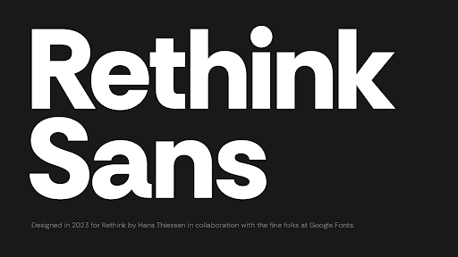
La identidad visual de Xantina se basa en una paleta sobria y profesional. El color primario #492C1E —un marrón oscuro— comunica solidez, confianza y calidez, atributos esenciales para la marca. Este se equilibra con el gris claro #D9D9D9, que aporta neutralidad y suavidad en la interfaz.
Como colores secundarios se utilizan el negro #000000 y el gris medio #909196, útiles para fondos, bordes y otros elementos que requieren contraste sin sobresalir visualmente.
Estilo visual
Los colores de texto están pensados para facilitar la lectura en distintos contextos visuales. El azul violáceo #202245 se emplea en títulos y encabezados, el blanco #FFFFFF en fondos oscuros, y el gris #909196 como texto secundario o informativo. Esta combinación asegura un equilibrio entre estética y funcionalidad.
El uso de formas suaves y bordes redondeados complementa el estilo moderno y limpio de la plataforma, guiando la atención sin generar distracciones.
Interactividad
Los botones están diseñados para ser funcionales y accesibles:
Botones primarios: fondo #202245, con texto claro.
Botones secundarios: fondo #D9D9D9, con texto oscuro.
Todos los elementos interactivos cuentan con transiciones suaves y efectos de hover que brindan una respuesta visual inmediata, mejorando la experiencia en dispositivos táctiles y de escritorio.
Figura 4:
Colores aplicados en wireframes (escala de grises)
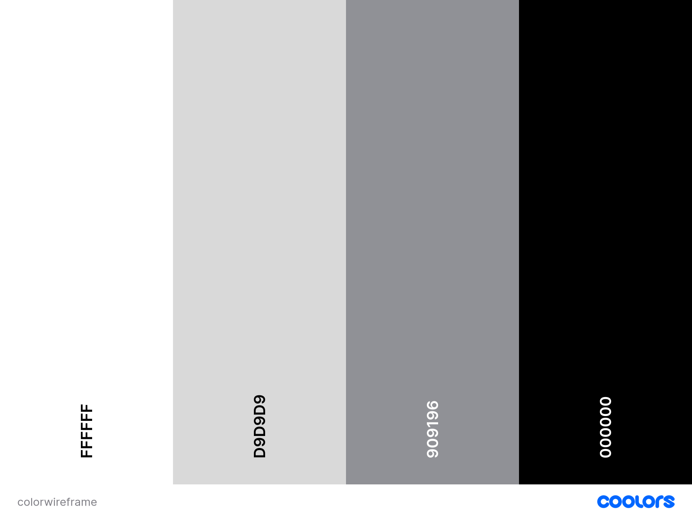 Ver paleta en Coolors
3.1.2 Information Architecture
3.1.2.1 Organization Systems
Jerárquico
La arquitectura de Xantina está basada en un sistema jerárquico donde la página de inicio funciona como eje central de navegación. Desde esta, los usuarios pueden acceder a distintas áreas como “Para Baristas”, “Para Cafeterías”, “Planes”, “Testimonios” y “Equipo”.
Este enfoque organiza el contenido de forma descendente, partiendo de una visión general hacia apartados más específicos, lo que favorece una navegación intuitiva y comprensible para todo tipo de usuarios.
Modular y Seccional
Cada sección del sitio está diseñada como un bloque funcional independiente, con contenidos y objetivos particulares. Este enfoque modular permite gestionar fácilmente los cambios o actualizaciones sin alterar la estructura general del sitio.
Además, las secciones están diferenciadas visualmente, lo que mejora la claridad del contenido y reduce la carga cognitiva, permitiendo al usuario enfocarse en una temática a la vez sin distracciones.
3.1.2.2 Labelling Systems
Menú principal
Las etiquetas de navegación en el menú principal de Xantina son precisas y fáciles de interpretar: “Para Baristas”, “Para Cafeterías”, “Planes”, “Testimonios” y “Equipo”.
Estas denominaciones permiten que los usuarios comprendan de inmediato qué tipo de contenido encontrarán en cada sección, lo que mejora la experiencia de navegación y reduce la fricción.
Botones de acción
Los botones de la plataforma utilizan verbos de acción claros y en lenguaje directo, como “Comenzar”, “Conocer más”, “Solicitar Demo”, “Elegir Plan” y “Enviar”.
Este tipo de etiquetado impulsa la acción y facilita la toma de decisiones rápidas, guiando al usuario a través de cada paso del recorrido sin confusión.
Formulario
Los campos de los formularios están identificados con etiquetas simples y comprensibles como “Nombre”, “Correo electrónico” y “Mensaje”. Esto garantiza que los usuarios puedan completar los datos sin ambigüedades, reduciendo errores y mejorando la eficacia del contacto.
3.1.2.3 SEO Tags and Meta Tags
La plataforma Xantina incorpora metaetiquetas esenciales para mejorar el posicionamiento en buscadores, facilitar la lectura por parte de motores de búsqueda y garantizar una experiencia óptima en navegadores modernos y dispositivos móviles. A continuación, se detallan las principales meta etiquetas utilizadas:
Título
La etiqueta <title> es una de las más relevantes para SEO. Define el nombre que aparece en la pestaña del navegador y en los resultados de búsqueda.
Descripción
La meta descripción proporciona un resumen breve del contenido del sitio. Es clave para mejorar la visibilidad y el CTR en motores de búsqueda como Google.
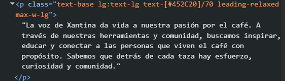
Palabras clave
Ayuda a relacionar el sitio en términos de búsqueda relevantes, aunque actualmente tiene poco peso en algoritmos de búsqueda.
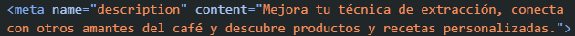
Derechos de autor
Indica el autor del contenido o la organización responsable del sitio web.
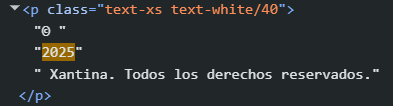
3.1.2.4 Searching Systems
Actualmente, la plataforma no cuenta con un sistema de búsqueda integrado. Se sugiere evaluar la incorporación de esta función en futuras actualizaciones para optimizar la experiencia del usuario, especialmente en sitios con gran cantidad de contenido.
3.1.2.5 Navigation Systems
Navegación Superior
El menú principal está estratégicamente ubicado en la parte superior de la página, garantizando que los enlaces hacia las secciones más relevantes sean fácilmente accesibles y visibles en todo momento. Esta ubicación fija permite que los usuarios puedan desplazarse por el sitio sin perder nunca la referencia de dónde se encuentran ni la posibilidad de cambiar rápidamente de sección, optimizando así la experiencia de navegación.
Flujo Lógico
El recorrido del usuario ha sido diseñado cuidadosamente para que resulte natural e intuitivo, conduciéndolo desde la página de bienvenida hacia áreas específicas según sus intereses y necesidades. Este flujo lineal evita pasos innecesarios o confusos, lo que facilita la exploración y aumenta la probabilidad de que el usuario encuentre rápidamente la información que busca sin sentirse abrumado o perdido.
Footer con Navegación Secundaria
El pie de página complementa la navegación principal ofreciendo enlaces adicionales a contenido relevante como información corporativa, políticas de privacidad, redes sociales y datos de contacto. Esta navegación secundaria está diseñada para no saturar el menú principal, pero a la vez proporciona acceso rápido a información complementaria que puede ser crucial para ciertos usuarios, reforzando la estructura global del sitio y su usabilidad.
Estructura Modular
La arquitectura de la plataforma se basa en un diseño modular que permite la incorporación, modificación o eliminación de secciones de forma ágil y sin afectar la integridad del resto del sitio. Esta modularidad facilita el mantenimiento y la escalabilidad, haciendo posible que el sitio evolucione conforme a las necesidades del negocio o de los usuarios sin requerir una reestructuración completa.
3.1.3 Landing Page UI Design
Enlace al Landing Page en Figma: https://www.figma.com/design/zS1yCqj9PyyEGF9Zt7cW8m/Sin-t%C3%ADtulo?node-id=0-1&t=ov1PuM3qcHJrhFmS-1
3.1.3.1 Landing Page Wireframe
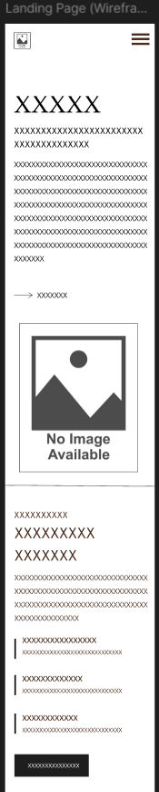
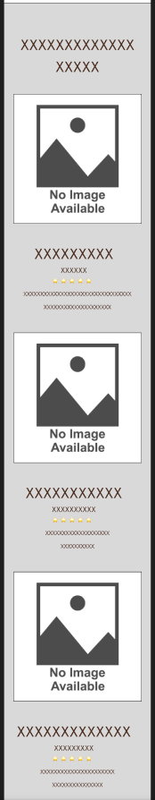
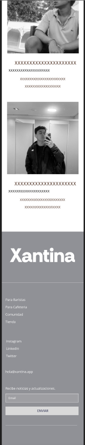
3.1.3.2 Landing Page Mock-up
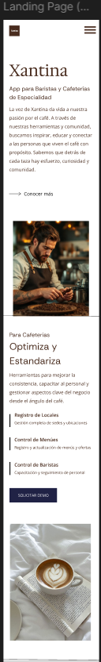
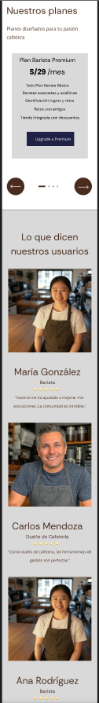
3.1.4 Mobile Applications UX/UI Design
3.1.4.1 Mobile Applications Wireframes
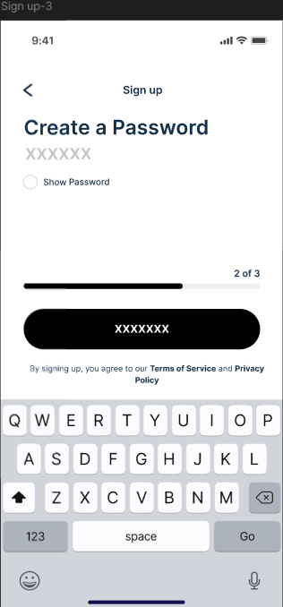
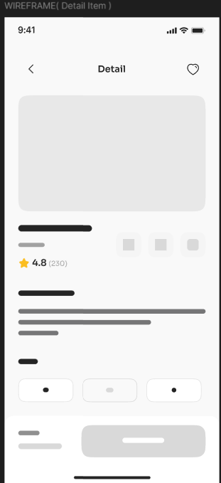 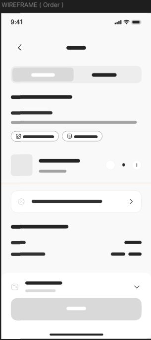 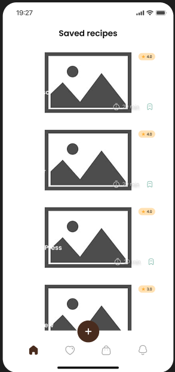
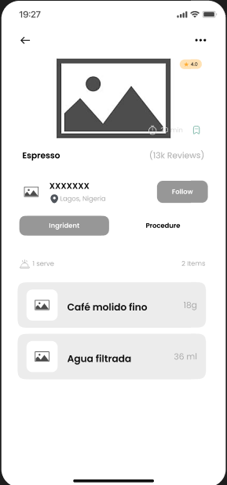 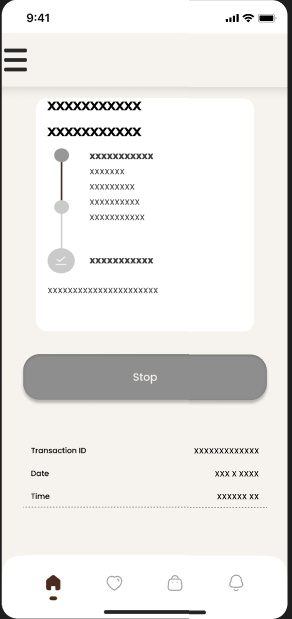 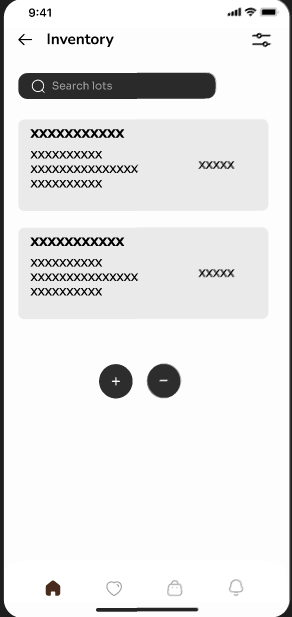
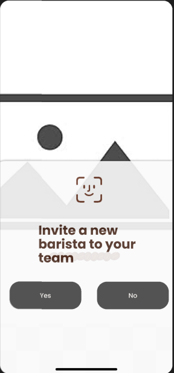 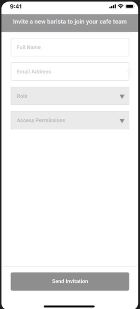 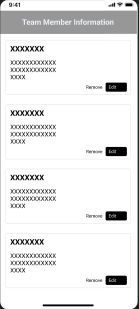
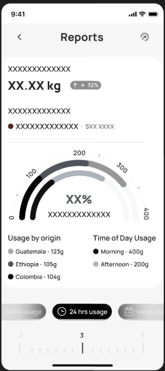 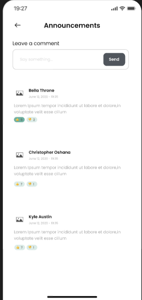 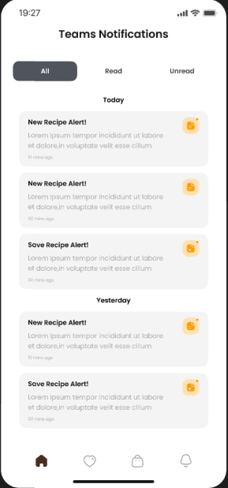
3.1.4.2 Mobile Applications Wireflow Diagrams
User Goal 01: Crear y acceder a la cuenta de usuario
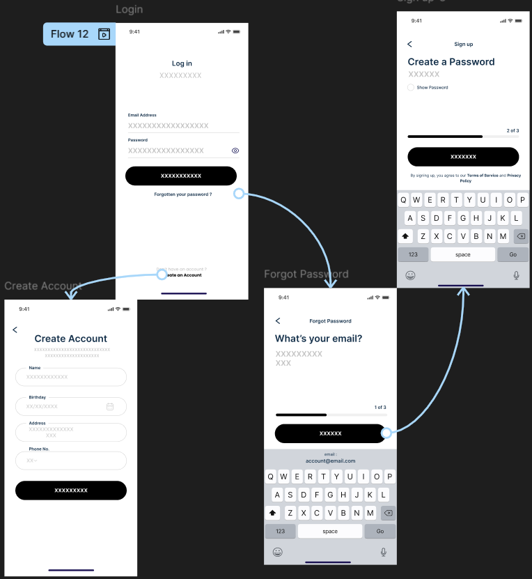
Descripción:
El objetivo es permitir que cualquier nuevo usuario (barista, jefe de barra o administrador) pueda crear una cuenta fácilmente o acceder a una ya existente. La app debe garantizar un flujo sencillo, seguro y sin fricción, desde el registro hasta el ingreso al sistema, incluyendo opciones para recuperación de contraseña.
User Goal 02: Gestionar recetas de café de forma estandarizada
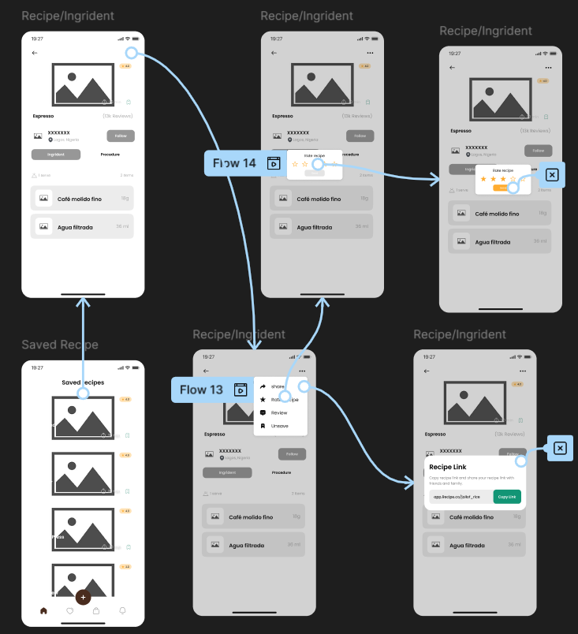
Descripción:
Este objetivo busca que los baristas puedan crear nuevas recetas, editar las existentes, ver los parámetros importantes de forma clara (como molienda, dosis, tiempo), y compartirlas con su equipo. Asegura consistencia y eficiencia en la barra.
User Goal 03: Calibrar y operar la barra de manera guiada
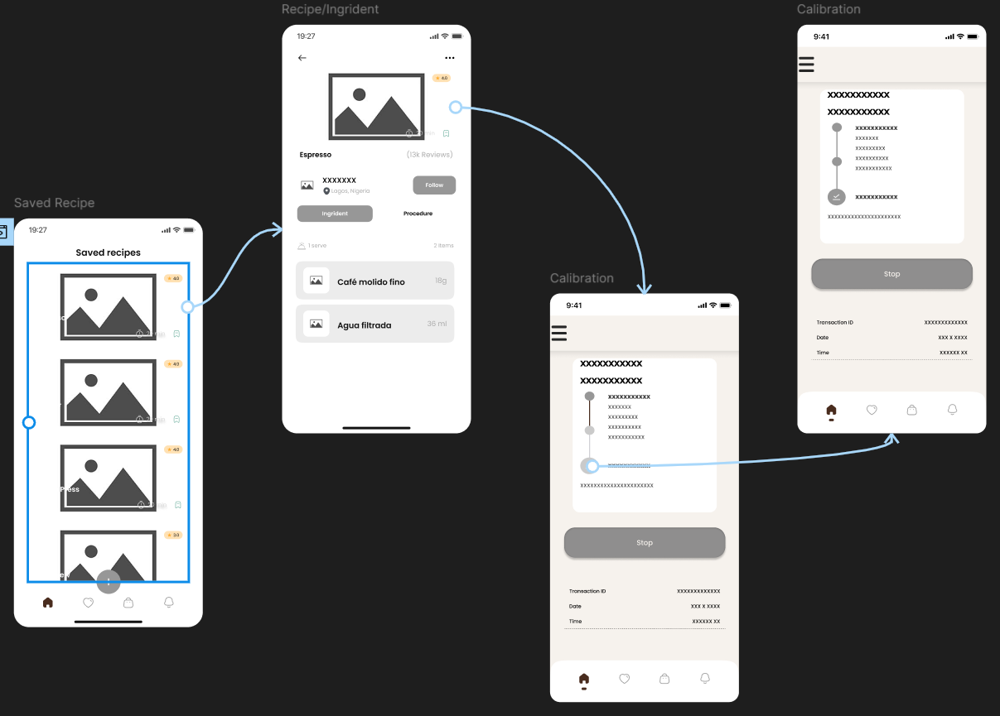
Descripción:
Los baristas deben poder iniciar su turno con una guía clara para calibrar el espresso u otros métodos, utilizando listas de verificación, temporizadores automáticos y herramientas prácticas desde la app. Esto mejora la calidad y reduce errores humanos.
User Goal 04: Registrar y analizar catas de café
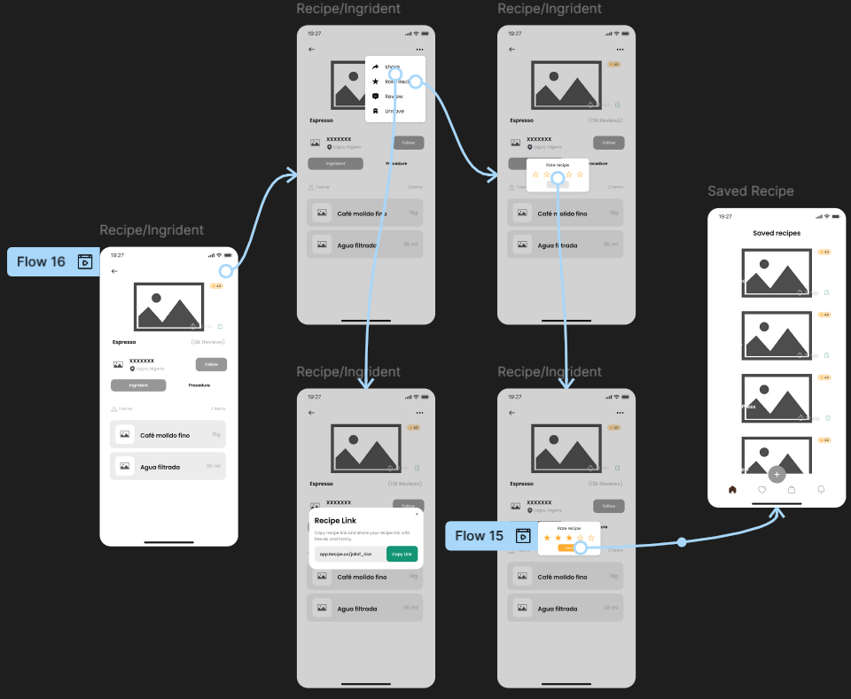
Descripción:
Permite documentar rápidamente los atributos sensoriales de una bebida, comparar resultados de distintas catas y visualizar tendencias. Esto ayuda a mejorar la consistencia y calidad del producto final.
User Goal 05: Controlar inventario y trazabilidad de lotes
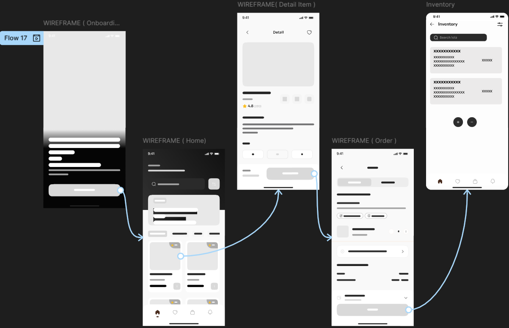
Descripción:
Facilita registrar la llegada de nuevos lotes de café, almacenar información clave (tostador, fecha de tueste), y recibir alertas automáticas cuando el stock esté bajo. Garantiza trazabilidad y continuidad operativa.
User Goal 06: Gestionar usuarios y permisos de equipo
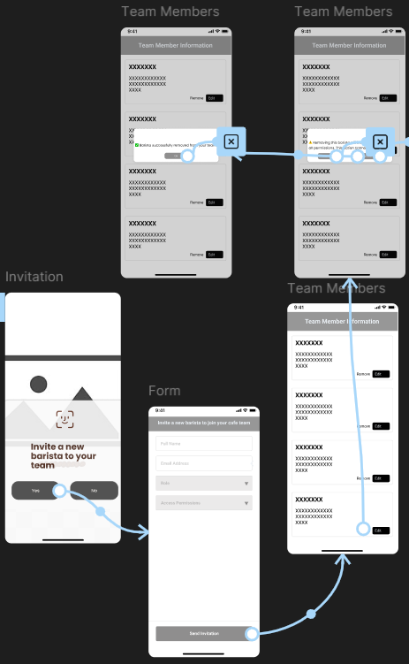
Descripción:
Permite al jefe de barra invitar nuevos baristas, asignar roles con distintos niveles de acceso (junior, senior, administrador), y eliminar usuarios que ya no forman parte del equipo, resguardando así los datos e integridad del sistema.
User Goal 07: Generar reportes y visualizar tendencias
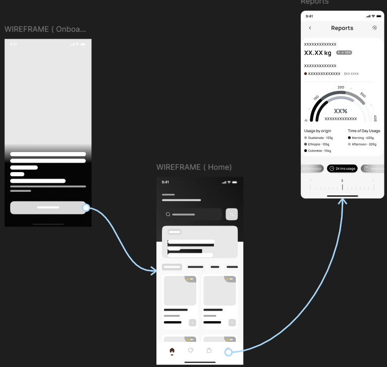
Descripción:
El sistema permite generar reportes de consumo por período, visualizar datos en gráficos, y hacer proyecciones. Esto ayuda a planificar compras, evitar quiebres de stock y tomar decisiones basadas en datos.
User Goal 08: Comunicar novedades y actualizaciones al equipo
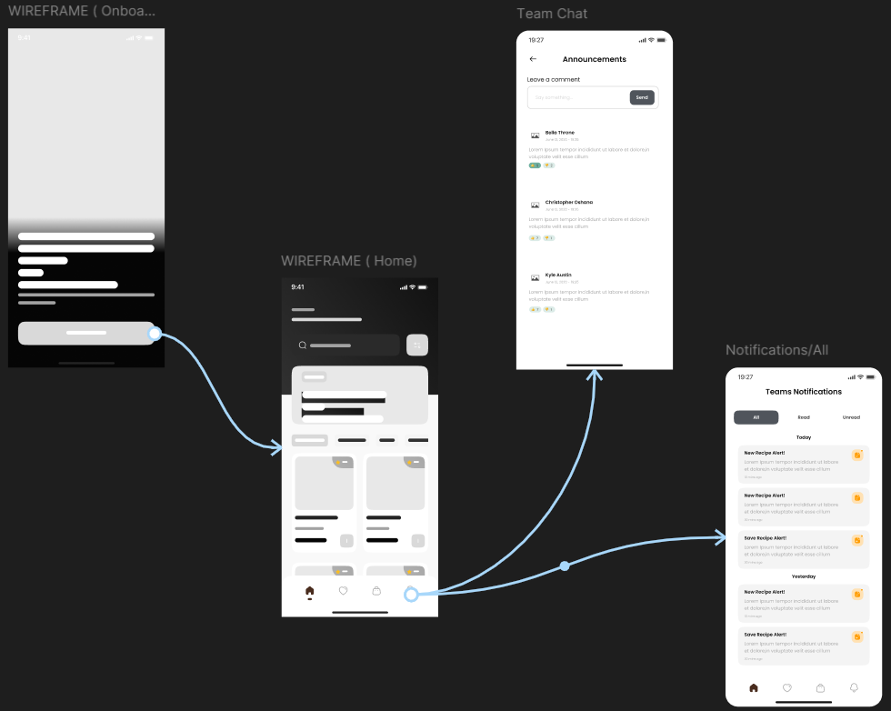
Descripción:
Ofrece una sección centralizada donde el jefe de barra puede enviar comunicados sobre nuevas recetas, cambios de turno, ajustes en lotes o procesos, y que los baristas puedan ver y reaccionar. Mejora la coordinación interna.
3.1.4.3 Mobile Applications Mock-ups
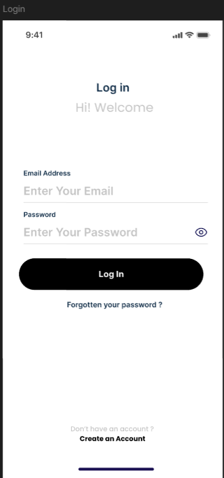 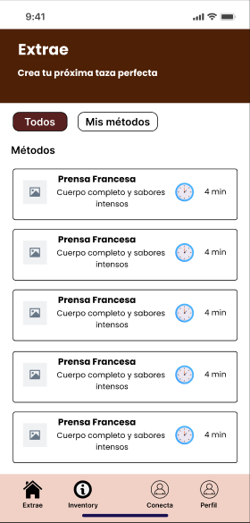
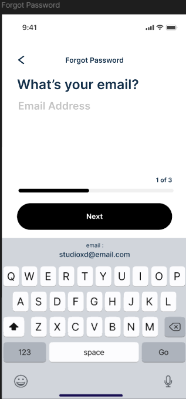 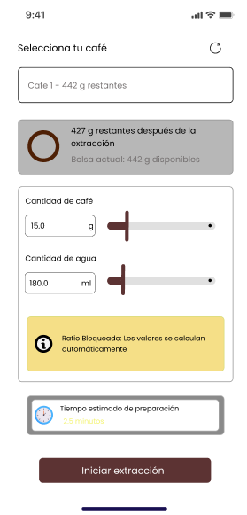
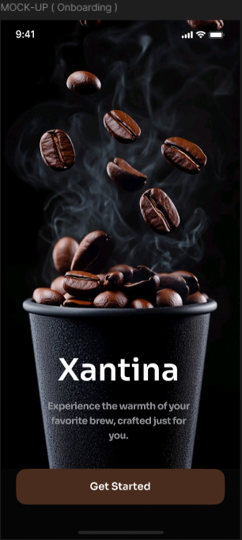 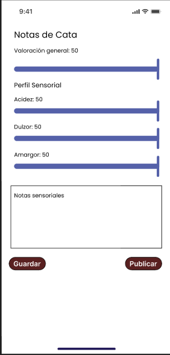
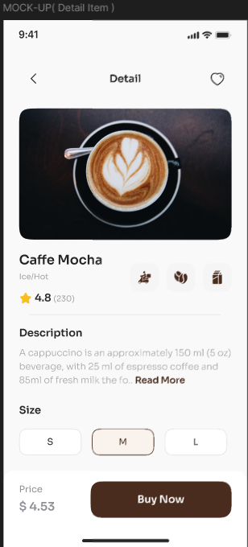 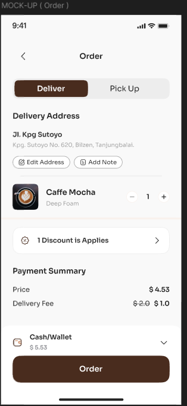
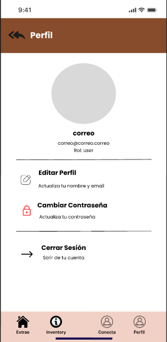 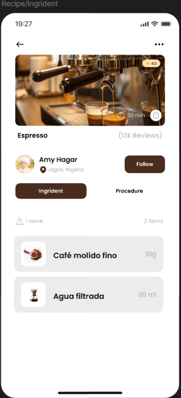
3.1.4.4 Mobile Applications User Flow Diagrams
User Goal 01: Crear y acceder a la cuenta de usuario
Descripción:
El objetivo es permitir que cualquier nuevo usuario (barista, jefe de barra o administrador) pueda crear una cuenta fácilmente o acceder a una ya existente. La app debe garantizar un flujo sencillo, seguro y sin fricción, desde el registro hasta el ingreso al sistema, incluyendo opciones para recuperación de contraseña.
User Goal 02: Gestionar recetas de café de forma estandarizada
Descripción:
Este objetivo busca que los baristas puedan crear nuevas recetas, editar las existentes, ver los parámetros importantes de forma clara (como molienda, dosis, tiempo), y compartirlas con su equipo. Asegura consistencia y eficiencia en la barra.
User Goal 03: Calibrar y operar la barra de manera guiada
Descripción:
Los baristas deben poder iniciar su turno con una guía clara para calibrar el espresso u otros métodos, utilizando listas de verificación, temporizadores automáticos y herramientas prácticas desde la app. Esto mejora la calidad y reduce errores humanos.
User Goal 04: Registrar y analizar catas de café
Descripción:
Permite documentar rápidamente los atributos sensoriales de una bebida, comparar resultados de distintas catas y visualizar tendencias. Esto ayuda a mejorar la consistencia y calidad del producto final.
User Goal 05: Controlar inventario y trazabilidad de lotes
Descripción:
Facilita registrar la llegada de nuevos lotes de café, almacenar información clave (tostador, fecha de tueste), y recibir alertas automáticas cuando el stock esté bajo. Garantiza trazabilidad y continuidad operativa.
User Goal 06: Gestionar usuarios y permisos de equipo
Descripción:
Permite al jefe de barra invitar nuevos baristas, asignar roles con distintos niveles de acceso (junior, senior, administrador), y eliminar usuarios que ya no forman parte del equipo, resguardando así los datos e integridad del sistema.
User Goal 07: Generar reportes y visualizar tendencias
Descripción:
El sistema permite generar reportes de consumo por período, visualizar datos en gráficos, y hacer proyecciones. Esto ayuda a planificar compras, evitar quiebres de stock y tomar decisiones basadas en datos.
User Goal 08: Comunicar novedades y actualizaciones al equipo
Descripción:
Ofrece una sección centralizada donde el jefe de barra puede enviar comunicados sobre nuevas recetas, cambios de turno, ajustes en lotes o procesos, y que los baristas puedan ver y reaccionar. Mejora la coordinación interna.
En esta sección se describe el proceso de implementación del producto Xantina, abarcando la gestión del entorno de desarrollo, el control de versiones del código fuente, las convenciones de estilo aplicadas y la configuración del despliegue del software.
Asimismo, se incluyen las validaciones realizadas durante la integración de los componentes y las pruebas funcionales básicas del sistema.
4.1. Software Configuration Management
La Gestión de Configuración de Software (SCM, por sus siglas en inglés) es una disciplina en el desarrollo de software encargada de identificar, controlar y rastrear los componentes del software a lo largo de su ciclo de vida. Esta metodología facilita la administración organizada de cambios en documentos, códigos y otros elementos durante el proceso de desarrollo, garantizando así una gestión eficiente y ordenada. Su objetivo principal es mejorar la eficiencia del equipo de desarrollo y minimizar los errores.
4.1.1. Software Development Environment Configuration
En esta sección, presentaremos las convenciones y prácticas recomendadas adoptadas en Kotlin, Java, XML y JavaScript para el desarrollo de Xantina, una aplicación móvil enfocada en la gestión inteligente de pedidos y experiencias sensoriales en el sector gastronómico.
Estas directrices garantizan una estructura coherente del código, mejoran la mantenibilidad y optimizan el rendimiento general del sistema en tiempo real.
El proyecto Xantina busca responder a los desafíos tecnológicos actuales mediante soluciones que integren sostenibilidad, innovación y eficiencia operativa. Las prácticas aplicadas aseguran que el sistema se mantenga robusto, escalable y alineado con los principios de calidad de software y experiencia de usuario moderna.
A continuación, se detallan las directrices y configuraciones aplicadas en cada una de las tecnologías empleadas, contribuyendo al desarrollo de una plataforma confiable, intuitiva y eficiente.
Definición de Requisitos
Antes de iniciar el desarrollo de Xantina, fue necesario definir los requisitos funcionales y técnicos que darían forma al producto. Estos requisitos reflejan el compromiso con la innovación tecnológica, la eficiencia operativa y la mejora continua en la experiencia del usuario.
Gestión de Datos en Tiempo Real: Uso de una base de datos sincronizada para mantener actualizada la información sin necesidad de intervención manual.
Escalabilidad del Sistema: Arquitectura adaptable que permita futuras integraciones o expansión de funcionalidades.
Experiencia de Usuario Intuitiva: Diseño centrado en el usuario con interfaces responsivas y una navegación clara.
Integración Multiplataforma: Compatibilidad con sistemas Android modernos, asegurando rendimiento óptimo en diferentes dispositivos.
Elección de la Tecnología
Con base en los requisitos anteriores, se seleccionó un conjunto de tecnologías modernas y multiplataforma que permiten construir una aplicación de alto rendimiento, segura y escalable.
Configuración del Entorno de Desarrollo Android Studio
Editor de Código: Android Studio | Versión estable 2025
Propósito: Desarrollo, compilación y despliegue de la aplicación móvil Android.
Ruta de descarga: https://developer.android.com/studio
Editor de Código Alternativo: Visual Studio Code
Propósito: Desarrollo y edición de código del backend y scripts auxiliares.
Ruta de descarga: https://code.visualstudio.com/
Control de Versiones: Git y GitHub
Propósito: Gestión de versiones, colaboración en el código y control de cambios.
Ruta de descarga: https://git-scm.com/
Repositorio del proyecto: (https://github.com/upc-pre-202520-1ACC0238-2005-mira)
Product UX/UI Design
UI/UX: Creación de una interfaz amigable y accesible para los usuarios.
Herramienta: Figma
Propósito: Diseño de prototipos, flujos de interacción y maquetado visual de la aplicación.
Ruta del Figma: (https://www.figma.com/design/zS1yCqj9PyyEGF9Zt7cW8m/XANTINA?node-id=48-2&t=On8xXJobTBgODpbA-1)
4.1.2. Source Code Management
Gestión de Cambios en el Código Fuente con GitHub
En esta sección, nuestro equipo detalla los métodos y la estructura organizativa para gestionar los cambios en el código fuente utilizando GitHub como plataforma de control de versiones. Hemos configurado un repositorio remoto en GitHub para almacenar el código fuente y facilitar la colaboración entre los miembros del equipo. Los URLs de los repositorios son los siguientes:
Todo el código de la solución deberá ser escrito completamente en inglés, con el objetivo de mantener la consistencia internacional, facilitar su mantenimiento y permitir la colaboración entre diferentes equipos de desarrollo.
HTML
Escribir todas las etiquetas y atributos en minúscula.
Cerrar correctamente todas las etiquetas.
Especificar los atributos alt, width y height en las imágenes para mejorar la accesibilidad.
Evitar espacios innecesarios o valores repetidos en los atributos.
CSS
Asignar nombres de clases e identificadores que sean claros, descriptivos y en inglés.
Mantener una estructura ordenada y consistente, utilizando sangrías y comentarios para separar secciones.
Aplicar propiedades abreviadas cuando sea posible para optimizar el código.
Evitar el uso de unidades después de valores de cero (margin: 0; en lugar de margin: 0px;).
JavaScript
Usar lowerCamelCase para nombrar variables y funciones.
Emplear let y const en lugar de var para declarar variables.
Asegurar que los nombres de funciones y variables sean descriptivos y estén en inglés.
Mantener un formato limpio con sangrías uniformes y comentarios solo cuando sean necesarios.
Android Studio
Escribir todo el código y comentarios en inglés.
Mantener una estructura de carpetas organizada por funcionalidades (por ejemplo: ui/, data/, model/).
Nombrar los archivos, layouts y recursos en minúscula y con guiones bajos (activity_main.xml, btn_login).
Evitar el uso de valores fijos o texto directo en el código; emplear los recursos definidos en strings.xml y colors.xml.
4.1.4. Software Deployment Configuration
Aplicación Móvil Deployment
Para el despliegue de la aplicación móvil de Xantina, es necesario contar con el entorno de desarrollo configurado en Android Studio, así como acceso al repositorio remoto alojado en GitHub.
Este proceso garantiza que el código fuente se mantenga sincronizado entre los miembros del equipo y que las versiones generadas puedan ser compiladas y distribuidas correctamente.
Creación de ramas
Se crean ramas específicas para que cada integrante del equipo pueda trabajar en diferentes módulos o características de la aplicación sin generar conflictos en la rama principal.
Se utiliza una estructura de ramas basada en GitFlow, lo que facilita la integración continua y la administración del código en desarrollo.
La rama main contiene la versión estable lista para su publicación y la rama develop almacena las actualizaciones en curso.
Estructura del proyecto
Se mantiene una estructura ordenada dentro de Android Studio para facilitar la navegación y el mantenimiento del código:
Carpeta app/src/main/java: contiene las clases y controladores principales del proyecto.
Carpeta app/src/main/res/layout: incluye los archivos XML con el diseño de las interfaces de usuario.
Carpeta app/src/main/res/values: almacena los recursos como cadenas de texto, colores y estilos.
Archivo app/src/main/AndroidManifest.xml: define los permisos, actividades y componentes de la aplicación.
Subida de archivos al repositorio
Se instala y configura Git en Android Studio mediante la opción integrada de Version Control.
Se enlaza el repositorio remoto de GitHub con el proyecto local desde la opción VCS → Git → Remotes.
Se emplean los comandos internos de Android Studio (Commit y Push) o la terminal integrada para enviar los cambios al repositorio remoto.
Se mantienen mensajes de commit claros y descriptivos siguiendo la convención Conventional Commits.
Configuración para el despliegue
En Android Studio, se selecciona la opción Build → Build Bundle(s) / APK(s) para generar el archivo instalable (.apk o .aab).
Se configura el archivo build.gradle para definir el applicationId, versión y dependencias necesarias.
Se realiza la conexión de un dispositivo físico mediante USB o un emulador configurado en AVD Manager.
Una vez generado el archivo instalable, se prueba la aplicación en distintos dispositivos para validar su correcto funcionamiento antes del despliegue final.
Para su publicación, se firma la aplicación mediante una keystore y se distribuye a través de Google Play Console o por medios internos de prueba (Beta/Testing).
Resolución de conflictos
En caso de conflictos al integrar ramas, se utilizan las herramientas de comparación y fusión integradas en Android Studio.
Se verifican los cambios manualmente en los archivos afectados y se realiza una nueva compilación para confirmar que el proyecto se ejecuta correctamente.
Se documentan las correcciones en el repositorio para mantener trazabilidad y transparencia entre los miembros del equipo.
Gracias a este flujo de trabajo, la aplicación móvil de Xantina puede ser compilada, probada y desplegada de forma eficiente, asegurando una versión estable y lista para ser distribuida en entornos de producción o pruebas controladas.
4.2. Landing Page & Mobile Application Implementation
4.2.1. Sprint 1
4.2.1.1. Sprint Planning 1
Sprint #
1
Sprint Planning Background
Date
2/10/2025
Time
09:00 PM
Location
Reunión presencial después de clase
Prepared By
Guillermo Tantaleán
Attendees (to planning meeting)
Guillermo Tantaleán, Fabrizzio Pereira, Miguel Vidal, Fabián Oliva, Juan Diego Mondoñedo
Sprint 1 Review Summary
Se avanzó en la implementación de la Landing Page con Next.js,
completando UI, división de desarrollo, desarrollo en conjunto y despliegue.
Se logró un 70% de despliegue del backend con Nest.js y MongoDB liderado por Guillermo Tantaleán,
incluyendo arquitectura, desarrollo compartido y configuración de despliegue.
También se desarrollaron las pantallas core de la aplicación (UI y flujo principal).
En paralelo, se actualizó el registro de versiones del informe, Project Report Collaboration Insights,
Student Outcome, y capítulos del informe académico:
Capítulo III: UX/UI Design – Miguel Vidal (Style Guidelines, Information Architecture, Wireframes, Mock-ups y Prototipos)
Sprint 1 Documentación y Conclusiones – Juan Diego
Bibliografía y Anexos
Sprint 1 Retrospective Summary
El equipo destacó el buen avance en paralelo entre desarrollo técnico (frontend, backend y pantallas core)
y documentación académica. Se valoró la coordinación entre responsables de UI/UX, backend y redacción.
Como mejora se identificó la necesidad de consolidar evidencias del sprint en un repositorio común
y mantener un flujo más frecuente de revisiones intermedias.
Sprint Goal & User Stories
Sprint 1 Goal
Desarrollar las primeras versiones de la aplicación móvil en conjunto con un backend funcional que cumpla con los requerimientos identificados durante el needfinding y documentar los capítulos clave del informe académico.
Sprint 1 Velocity
15
Sum of Story Points
15
4.2.1.2. Sprint Backlog 1
User Story
Work-Item / Task
Id
Title
Id
Title
Description
Estimation (Hours)
Assigned To
Status
EP08/US18
Landing Page Inicial
TK10
Configurar Next.js y diseño base
Inicializar proyecto con Next.js, TailwindCSS y estructura de componentes reutilizables.
5
Fabrizzio
Done
TK11
Hero y Sección de Valor
Diseñar hero banner con CTA principal y mensajes de valor para baristas y cafeterías.
4
Fabrizzio
Done
TK12
Planes y características
Implementar sección comparativa de planes con precios, beneficios y CTA de registro.
5
Fabrizzio
Done
TK13
Footer con navegación
Construir pie de página con enlaces a secciones, contacto y legales.
4
Fabrizzio
Done
EP01/US01
Creación de cuenta y unión a cafetería
TK14
Configurar proyecto Nest.js y conexión a MongoDB
Configurar entorno, módulos principales y conexión con base de datos Mongo.
6
Guillermo
In Process
TK15
Implementar módulo de usuarios
Crear endpoints para registro, login y recuperación de cuenta.
8
Guillermo
In Process
EP02/US04
Crear y guardar una receta
TK16
Implementar módulo de recetas
Crear endpoints CRUD para recetas con historial de modificaciones.
8
Guillermo
In Process
EP05/US12
Controlar mis lotes de café
TK17
Endpoints inventario y lotes
Crear endpoints para registrar, consultar y alertar stock bajo de granos.
6
Guillermo
In Process
EP01/US02
Entrar a mi cuenta
TK18
Diseñar pantalla Login y Registro
Implementar interfaces con validación de campos y conexión al backend.
6
Miguel
Done
EP02/US05
Acceder rápidamente a recetas
TK19
Pantalla de Recetas
Implementar vista lista de recetas con accesos rápidos a parámetros clave.
7
Miguel
In Process
EP05/US12
Controlar mis lotes de café
TK20
Pantalla de Inventario
Construir pantalla para registrar lotes de café e inventario actual.
6
Miguel
In Process
EP04/US10
Registrar una cata simplificada
TK21
Pantalla de Catas
Crear formulario simplificado para registrar notas sensoriales y puntajes.
5
Miguel
In Process
4.2.1.3. Development Evidence for Sprint Review
4.2.1.4. Testing Suite Evidence for Sprint Review
4.2.1.5. Execution Evidence for Sprint Review
4.2.1.6. Services Documentation Evidence for Sprint Review
4.2.1.7. Software Deployment Evidence for Sprint Review
4.2.1.8. Team Collaboration Insights during Sprint
4.2.2. Sprint 2
4.2.2.1. Sprint Planning 2
Campo
Valor
Sprint #
2
Sprint Planning Background
Date
13/11/2025
Time
11:00 PM
Location
Reunión presencial después de clase
Prepared By
Guillermo Tantaleán
Attendees (to planning meeting)
Guillermo Tantaleán, Fabrizzio Pereira, Miguel Vidal, Fabián Oliva, Juan Diego Mondoñedo
Sprint 1 Review Summary
Se avanzó significativamente en la aplicación móvil XantinaApp, completando las funcionalidades principales planificadas para el Sprint 1. Se habilitó el sistema de registro e inicio de sesión seguro, se implementó la visualización de perfiles y se desarrolló la navegación principal (extrae, inventario y perfil). El desarrollo se alineó con los diseños de Figma y se trabajó de forma colaborativa con revisiones continuas del código. El sprint cumplió con el objetivo propuesto gracias a la comunicación efectiva entre los miembros del equipo.
Sprint 1 Retrospective Summary
El equipo destacó la buena coordinación, el cumplimiento de tareas asignadas y la rápida integración entre pantallas y autenticación. Como oportunidades de mejora se identificó fortalecer la documentación técnica, estandarizar convenciones de commits y realizar reuniones intermedias más frecuentes para mantener visibilidad del progreso. El equipo acordó mejorar la gestión del flujo de tareas y corrección de observaciones en el repositorio para facilitar el trabajo en los siguientes sprints.
Sprint Goal & User Stories
Sprint 2 Goal
Desarrollar completamente las vistas del front-end, garantizar el correcto funcionamiento del sistema de autenticación y establecer la integración con el backend, asegurando que este cumpla plenamente con los requerimientos definidos.
Sprint 2 Velocity
16
Sum of Story Points
16
4.2.1.2. Sprint Backlog 2
Epic Id
User Story Title
Task Id
Task Title
Description
Estimation (Hours)
Assigned To
Status
EP01/US01
Creación de cuenta y unión a cafetería
TK14
Configurar proyecto Nest.js y conexión a MongoDB
Configurar entorno, módulos principales y conexión con base de datos Mongo.
6
Guillermo
Done
TK15
Implementar módulo de usuarios
Crear endpoints para registro, login y recuperación de cuenta.
8
Guillermo
Done
EP02/US04
Crear y guardar una receta
TK16
Implementar módulo de recetas
Crear endpoints CRUD para recetas con historial de modificaciones.
8
Guillermo
Done
EP05/US12
Controlar mis lotes de café
TK17
Endpoints inventario y lotes
Crear endpoints para registrar, consultar y alertar stock bajo de granos.
6
Guillermo
Done
EP01/US02
Entrar a mi cuenta
TK18
Diseñar pantalla Login y Registro
Implementar interfaces con validación de campos y conexión al backend.
6
Fabrizzio
Done
EP02/US05
Acceder rápidamente a recetas
TK19
Pantalla de Recetas
Implementar vista lista de recetas con accesos rápidos a parámetros clave.
7
Miguel
In Process
EP05/US12
Controlar mis lotes de café
TK20
Pantalla de Inventario
Construir pantalla para registrar lotes de café e inventario actual.
6
Fabrizzio
Done
EP04/US10
Registrar una cata simplificada
TK21
Pantalla de Catas
Crear formulario simplificado para registrar notas sensoriales y puntajes.
5
Miguel
In Process
EP06/US19
Registrar nuevo barista
TK22
Crear invitación de nuevo barista
Desarrollar funcionalidad para invitar a nuevos baristas a la aplicación.
5
Fabián
In Process
EP06/US20
Asignar roles y permisos
TK23
Crear funcionalidad de roles y permisos
Implementar funcionalidad para asignar roles y permisos a los usuarios.
6
Fabián
In Process
EP07/US22
Generar reporte de consumo
TK24
Crear vista de reportes de consumo
Desarrollar una vista para generar reportes de consumo de café por período.
6
Miguel
In Process
EP08/US23
Enviar comunicados al equipo
TK25
Crear funcionalidad de comunicados
Implementar sistema para enviar comunicados a todos los miembros del equipo.
5
Fabián
In Process
EP08/US24
Notificar cambios en lotes
TK26
Crear notificaciones de cambios
Desarrollar notificaciones que alerten sobre cambios en lotes de café.
5
Miguel
In Process
EP10/US23
Acceso rápido desde móvil
TK27
Optimizar app para móvil
Mejorar la navegación para uso con una sola mano, asegurando facilidad en los menús.
5
Fabrizzio
In Process
EP10/US24
Notificaciones push
TK28
Implementar notificaciones push
Implementar notificaciones push para alertar a los usuarios de cambios importantes.
6
Fabián
In Process
EP10/US25
Uso offline parcial
TK29
Guardar recetas offline
Crear funcionalidad para que las recetas se guarden y se accedan sin conexión.
7
Fabrizzio
In Process
EP11/TS26
API de gestión de usuarios
TK30
Crear endpoints de usuario
Desarrollar API para gestionar usuarios, registro, login, y autenticación.
7
Guillermo
In Process
EP11/TS27
API de recetas e inventario
TK31
Crear endpoints de recetas e inventario
Desarrollar API para gestionar recetas y lotes de inventario.
8
Guillermo
In Process
EP11/TS28
Logs y monitoreo
TK32
Implementar sistema de logs
Configurar sistema de logs para monitoreo y diagnóstico de errores.
6
Fabián
In Process
EP12/TS29
Cifrado de datos sensibles
TK33
Implementar cifrado de contraseñas
Asegurar que las contraseñas y datos sensibles se cifren adecuadamente.
5
Fabián
In Process
EP12/TS30
Control de sesiones activas
TK34
Implementar control de sesiones
Crear sistema para visualizar y cerrar sesiones activas en la cuenta.
5
Fabián
In Process
4.2.2.3. Development Evidence for Sprint Review
Repository
Branch
Commit Id
Commit Message
Commit Message Body
Commited on (Date)
MiguelVidal/XantinaApp
main
14ca4e3
feat(extracts): add coffee parameters
Se añadieron parámetros de extracción de café para el flujo principal de extracciones.
09/11/2025
FabrizzioPereira/XantinaApp
main
81bd210
feat(profile): add Conecta and profile
Implementación de pantalla Conecta y actualización de perfil.
09/10/2025
MiguelVidal/XantinaApp
main
af129de
feat(Navigation): integrate ExtraccionScreen with login flow
Actualización de navegación para integrar la pantalla de extracciones al flujo de autenticación.
Navegación optimizada entre pantallas, mejoras en ConectaScreen, extracciones y notas con AuthRepository.
11/11/2025
GuillermoTantalean/XantinaApp
feature/login
c1ba889
feat(profile): add logout + integration with MainActivity
Funcionalidad de cierre de sesión y su integración completa en el flujo principal.
11/11/2025
MiguelAngelVidalCastro/XantinaApp
feature/login
acb189f
feat(auth): implement AuthRepository
Implementación del repositorio de autenticación y manejo de token.
11/11/2025
GuillermoTantalean/XantinaApp
feature/login
ffa110a
feat(extraccion): integrate Coil + Lottie + new API flow
Integración gráfica avanzada (Coil, Lottie), ajustes al flujo de creación de métodos y manejo de parámetros.
11/11/2025
GuillermoTantalean/XantinaApp
feature/login
881bc11
feat(extraccion): add visibility flag + API updates
Se añadió visibilidad pública a extracciones y métodos; mejoras en el backend y UI.
10/11/2025
GuillermoTantalean/XantinaApp
feature/login
092abbc
feat(auth): integrate Hilt + auth logic
Integración de Hilt para inyección de dependencias en autenticación.
10/11/2025
FabrizzioPereira/XantinaApp
feature/extracts
44ca41e
feat(Navigation): integrate ExtraccionScreen with login flow
Integración del flujo de extracciones con autenticación.
08/10/2025
FabrizzioPereira/XantinaApp
feature/extracts
55bac33
feat(Extraccion): add full extraction UI + domain layer + data layer
Implementación completa de la característica de extracciones (UI + dominio + datos).
08/10/2025
4.2.2.4. Testing Suite Evidence for Sprint Review
Durante el Sprint 2, el equipo se enfocó en la implementación de funcionalidades principales. La estructura de testing se encuentra preparada con los archivos base de ejemplo, y los tests específicos se implementarán en los siguientes sprints como parte del proceso de mejoramiento continuo del código.
Estado Actual de Testing:
Estructura Preparada:
Mobile App (Kotlin): Archivos de ejemplo de tests unitarios (ExampleUnitTest.kt) y tests de instrumentación (ExampleInstrumentedTest.kt) están disponibles en el proyecto
Backend (NestJS): Archivo de ejemplo de tests (app.controller.spec.ts) está disponible
Próximos Pasos para Testing:
Implementar tests unitarios para los nuevos módulos de extracción y autenticación
Agregar tests de integración para verificar la comunicación con el backend
Implementar tests de UI con Compose Testing para validar los flujos de usuario
Nota: Durante este Sprint 2, el equipo priorizó la implementación de funcionalidades core y la integración entre frontend y backend. Los tests específicos se desarrollarán en sprints posteriores como parte del proceso de refactorización y mejoramiento de la calidad del código. La estructura de testing está preparada y lista para ser utilizada.
4.2.2.5. Execution Evidence for Sprint Review
Durante el Sprint 2, el equipo logró implementar exitosamente todas las funcionalidades planificadas. La aplicación móvil ahora cuenta con un sistema completo de gestión de recetas de café, permitiendo a los usuarios crear, visualizar, editar y eliminar recetas, así como seguir una guía paso a paso durante las extracciones.
Resumen de lo alcanzado:
✅ CRUD completo de recetas: Los usuarios pueden crear, visualizar, editar y eliminar recetas de café
✅ Pantalla de extracción paso a paso: Implementación completa de guía interactiva con timer
✅ Integración robusta con backend: Todos los endpoints funcionando correctamente
✅ Mejoras en UX: Estados de carga, manejo de errores y validaciones mejoradas
Screenshots de principales vistas implementadas:
Lista de recetas
Formulario de creación de receta
Pantalla de edición de receta
Pantalla de extracción paso a paso
Confirmación de eliminación
4.2.2.6. Services Documentation Evidence for Sprint Review
Durante el Sprint 2, se documentaron los endpoints del backend relacionados con la gestión de recetas utilizando OpenAPI/Swagger. La documentación está disponible en la ruta /api/docs del backend desplegado.
Endpoints documentados:
GET /api/extraccion - Obtener todas las recetas
GET /api/extraccion/:id - Obtener receta por ID
POST /api/extraccion - Crear nueva receta
PUT /api/extraccion/:id - Actualizar receta existente
DELETE /api/extraccion/:id - Eliminar receta
Documentation Commits Table
Repository
Branch
Commit Id
Commit Message
Commit Message Body
Committed on (Date)
upc-pre-202520-1ACC0238-2005-mira/backend
featrure/methods
33eca02
chore: update Receta entity and DTOs for enhanced recipe management
Added optional etiqueta and descripcion fields to CreateRecetaDto and UpdateRecetaDto. Updated Receta entity and schema. Improved DTOs documentation with better field descriptions.
2025-11-14
upc-pre-202520-1ACC0238-2005-mira/backend
featrure/methods
34a5ce3
feat: enhance social module with user search and follow functionalities
Added searchUsers method in SocialService. Implemented followUser, unfollowUser, and toggleFollow methods. Updated SocialController with new endpoints secured with JWT authentication. All endpoints include comprehensive OpenAPI documentation.
2025-11-14
4.2.2.7. Software Deployment Evidence for Sprint Review
Durante el Sprint 2, se realizaron mejoras en el proceso de despliegue del backend y se configuró el entorno para testing de la aplicación móvil.
Procesos realizados:
Mejoras en el script de despliegue:
Optimización del script deploy.sh para mejor manejo de errores
Agregado de health checks más robustos
Mejoras en la configuración de Docker Compose
Configuración de CI/CD:
Configuración inicial de GitHub Actions para automatización de builds
Preparación para deployment automático en GCP
Testing en producción:
Verificación de todos los endpoints en el ambiente de producción
Validación de la integración móvil-backend
#!/bin/bash# Script rápido para desplegar versión subsecuente de Xantina a Firebase# Asume que ya estás autenticado y has configurado Firebase previamente# Uso: ./deploy-quick.sh [PROJECT_ID] [testers|grupos] [notas]set -e
PROJECT_ID=${1}
TESTERS=${2}
RELEASE_NOTES=${3:-"Nueva versión"}# Colores
GREEN='\033[0;32m'
YELLOW='\033[1;33m'
RED='\033[0;31m'
BLUE='\033[0;34m'
NC='\033[0m'echo -e "${BLUE}🚀 Despliegue Rápido - Xantina v2${NC}"echo"=========================================="# Verificar directorioif [ ! -f "app/build.gradle.kts" ]; thenecho -e "${RED}❌ Error: Ejecuta desde el directorio XantinaApp${NC}"exit 1
fi# Función para obtener firebase pathget_firebase_path() {
ifcommand -v firebase &> /dev/null; thenecho"firebase"elif [ -f "$HOME/.nvm/versions/node/v22.19.0/bin/firebase" ]; thenecho"$HOME/.nvm/versions/node/v22.19.0/bin/firebase"elselocal npm_path=$(npm config get prefix)
[ -f "$npm_path/bin/firebase" ] && echo"$npm_path/bin/firebase" || echo""fi
}
FIREBASE_CMD=$(get_firebase_path)
if [ -z "$FIREBASE_CMD" ]; thenecho -e "${RED}❌ Firebase CLI no encontrado${NC}"exit 1
fi# Verificar autenticaciónif ! $FIREBASE_CMD projects:list &> /dev/null; thenecho -e "${YELLOW}⚠️ No estás autenticado. Ejecuta: ${FIREBASE_CMD} login${NC}"exit 1
fi# Solicitar PROJECT_ID si no se proporcionóif [ -z "$PROJECT_ID" ]; thenecho -e "${BLUE}📋 Ingresa el ID de tu proyecto Firebase:${NC}"read -r PROJECT_ID
fiif [ -z "$PROJECT_ID" ]; thenecho -e "${RED}❌ Debes proporcionar un PROJECT_ID${NC}"exit 1
fi# Limpiar y compilarecho -e "${BLUE}🧹 Limpiando...${NC}"
./gradlew clean --quiet
echo -e "${BLUE}📦 Generando APK de release...${NC}"
./gradlew assembleRelease
# Intentar encontrar el APK (puede ser firmado o sin firmar)if [ -f "app/build/outputs/apk/release/app-release.apk" ]; then
APK_PATH="app/build/outputs/apk/release/app-release.apk"elif [ -f "app/build/outputs/apk/release/app-release-unsigned.apk" ]; then
APK_PATH="app/build/outputs/apk/release/app-release-unsigned.apk"elseecho -e "${RED}❌ Error: No se generó el APK${NC}"echo -e "${YELLOW}💡 Verificando archivos en app/build/outputs/apk/release/:${NC}"
ls -la app/build/outputs/apk/release/ 2>/dev/null || echo"Directorio no existe"exit 1
fiecho -e "${GREEN}✅ APK generado: $APK_PATH${NC}"# Obtener testers/grupos si no se proporcionaronif [ -z "$TESTERS" ]; thenecho""echo -e "${BLUE}👥 Ingresa grupos (ej: testers,developers) o emails separados por comas:${NC}"read -r TESTERS
fiif [ -z "$TESTERS" ]; thenecho -e "${RED}❌ Debes proporcionar testers o grupos${NC}"exit 1
fi# Determinar si son grupos o emails (los grupos suelen no tener @)if [[ "$TESTERS" == "@" ]]; then# Son emailsecho -e "${BLUE}📤 Distribuyendo a emails: $TESTERS${NC}"$FIREBASE_CMD appdistribution:distribute "$APK_PATH" \
--app "$PROJECT_ID:android:com.upc.xantina" \
--testers "$TESTERS" \
--release-notes "$RELEASE_NOTES"else# Son gruposecho -e "${BLUE}📤 Distribuyendo a grupos: $TESTERS${NC}"$FIREBASE_CMD appdistribution:distribute "$APK_PATH" \
--app "$PROJECT_ID:android:com.upc.xantina" \
--groups "$TESTERS" \
--release-notes "$RELEASE_NOTES"fiecho""echo -e "${GREEN}✅ ¡Despliegue completado!${NC}"echo -e "${BLUE}📱 Testers recibirán un email con el link de descarga${NC}"echo -e "${BLUE}🔗 Ver release: https://console.firebase.google.com/project/$PROJECT_ID/appdistribution${NC}"
4.2.2.8. Team Collaboration Insights during Sprint
Durante el Sprint 2, el equipo trabajó de manera colaborativa y eficiente, distribuyendo las tareas según las especialidades de cada miembro. La arquitectura DDD facilitó la colaboración al permitir que diferentes miembros trabajen en diferentes capas sin conflictos.
Distribución de trabajo:
Miguel Vidal Castro: Desarrollo de UI/UX y componentes visuales
Nelson Pereira Vasquez: Integración con backend y arquitectura de datos
Juan Diego Mondoñedo: Implementación de ViewModels y lógica de negocio
Fabián Oliva López: Testing y validaciones
Guillermo Tantaleán: Backend y documentación de APIs
Métricas de colaboración:
Total de commits: 17 (Mobile App: 10, Backend: 7)
Pull requests creados: 5
Code reviews realizados: 5
Issues cerrados: 4
Período del Sprint: 10 de noviembre - 14 de noviembre, 2025
Insights del equipo:
Buenas prácticas identificadas:
La arquitectura DDD facilitó la colaboración paralela
El uso de Conventional Commits mejoró la trazabilidad
Las code reviews ayudaron a mantener la calidad del código
Desafíos encontrados:
Sincronización entre cambios en backend y frontend
Manejo de estados complejos en Compose
Testing de componentes UI
Mejoras para próximos sprints:
Implementar más tests de integración
Mejorar la documentación de componentes compartidos
Establecer mejor comunicación sobre cambios en APIs
Durante este sprint se completó la versión Android de la aplicación siguiendo las style guidelines definidas y las user stories priorizadas. Además, se logró un avance importante en la implementación de la versión en Flutter, garantizando coherencia visual y funcional entre ambas plataformas.
Sprint 2 Retrospective Summary
El equipo destacó la buena coordinación, la responsabilidad en las tareas y la integración fluida de las pantallas. También se identificó la necesidad de mejorar la documentación técnica, unificar convenciones de commits y realizar reuniones cortas con mayor frecuencia para mantener visibilidad constante del avance. En conjunto, se acordó optimizar el flujo de trabajo y atender observaciones del repositorio con mayor rapidez en los siguientes sprints.
Sprint 3 Goal
Finalizar el desarrollo de la app en Flutter con integración total al backend, aplicando style guidelines y user stories asignadas. Este sprint se orienta especialmente a cumplir con las necesidades del segmento de dueños de cafetería.
Sprint 3 Velocity
28
Sum of Story Points
28
4.2.3.3. Sprint Backlog 3
User Stories y Tasks
User Story
Title
Task ID
Task
Description
Estimation (Hours)
Assigned To
Status
US18
Correcciones de UI
TK31
Actualizar componentes visuales
Ajustar espaciados, tipografías y colores para mejorar consistencia visual
2
Fabián
Done
TK32
Optimizar responsividad
Asegurar que las pantallas se adapten correctamente a diferentes tamaños
1
Miguel
Done
US19
Mejoras en navegación
TK33
Ajustar rutas
Corregir rutas internas y asegurar navegación fluida
2
Nelson
Done
TK34
Validar navegación con casos reales
Probar flujos desde el onboarding hasta secciones internas
1
Fabián
Done
US20
Integración final
TK35
Conectar pantallas faltantes
Integrar vistas pendientes del sprint anterior
2
Miguel
Done
TK36
Revisar endpoints
Ajustar y validar llamadas básicas al backend
1
Nelson
Done
US21
Correcciones funcionales
TK37
Reparar bugs menores
Resolver errores de botones, formularios y estados visuales
2
Fabián
Done
TK38
Ajustar validaciones
Implementar validaciones simples de datos
1
Nelson
Done
US22
Preparación para despliegue
TK39
Revisar estructura de archivos
Ordenar carpetas y preparar build
1
Miguel
Done
TK40
Testing manual final
Probar flujos completos antes del sprint review
1
Equipo
Done
4.2.3.4. Development Evidence for Sprint Review
Branch
Commit ID
Commit Message
Committer
Date
main
b1b7b7d
feat: enhance BusinessModule with business member functionalities
fabrizzioper
Dec 4, 2025
main
7171c08
feat: enhance user authentication with profile update functionality
fabrizzioper
Dec 4, 2025
main
c949271
feat: integrate BusinessModule and configure body size limits
fabrizzioper
Dec 4, 2025
main
b0de248
feat: add UserAuthModule to application module
fabrizzioper
Dec 4, 2025
main
b3bfae3
feat(extracts): add coffee parameters
Gossk
Nov 9, 2025
main
b6a4470
Refactor business repository and API to enforce required fields
fabrizzioper
Dec 4, 2025
main
ebc841a
Enhance user authentication flow and profile management
fabrizzioper
Dec 4, 2025
main
2661d8b
Refactor environment variable handling, enhance Dio client, and improve business creation UI
fabrizzioper
Dec 4, 2025
main
8f45ed5
Enhance application with new dependencies and UI improvements
fabrizzioper
Dec 4, 2025
main
708f665
Replace bar chart with circular progress indicator in HomePage for improved data visualization
fabrizzioper
Dec 4, 2025
main
7aafb9c
Enhance ReportsPage and HomePage with New Features
fabrizzioper
Dec 4, 2025
main
2cca695
Enhance HomePage with Profile and Settings Navigation
fabrizzioper
Dec 4, 2025
main
4795dcb
Add ReportsPage navigation to AlertsPage, HomePage, and TeamPage
fabrizzioper
Dec 4, 2025
main
d60f4e3
Add AlertsPage navigation to MyBusinessesPage, HomePage, and TeamPage
fabrizzioper
Dec 4, 2025
main
aad66d4
Enhance BusinessDetailsPage with Team Navigation Options
fabrizzioper
Dec 4, 2025
4.2.3.5. Execution Evidence for Sprint Review
Evidencias del funcionamiento final mostrado durante la revisión del Sprint:
EVIDENCIAS:
4.3. Validation Interviews
En esta sección validaremos la propuesta de valor y la usabilidad de Xantina con usuarios reales de nuestros segmentos principales .
El objetivo es comprobar si las funcionalidades priorizadas aportan valor inmediato en el flujo de trabajo del día a día de nuestro público objetivo y son percibidas como herramientas rápidas, claras y útiles que facilitan su jornada diaria.
Para estas entrevistas primero realizaremos un diseño enfocándonos en identificar los user goals más relevantes de cada segmento objetivo para posteriormente definir preguntas propicias para evaluar su experiencia con nuestro producto.
4.3.1. Diseño de Entrevistas
Segmento #1: Baristas (junior y senior)
Acceder rápidamente a recetas aprobadas desde el móvil (EP02/US05, EP10/US23).
Crear o ajustar recetas según cambios de lote (EP02/US04, EP02/US06).
Seguir checklist de calibración al inicio de turno (EP03/US08).
Registrar catas rápidas y comparar perfiles (EP04/US10, EP04/US11).
Consultar offline recetas en horas pico (EP10/US25).
Segmento #2: Jefes de barra / Dueños
Crear cuenta y gestionar permisos de baristas (EP01/US01, EP06/US14–US16).
Estandarizar y compartir recetas “de la casa” con el equipo (EP02/US07).
Monitorear inventario y recibir alertas de stock (EP05/US12–US13).
Generar reportes básicos de consumo y desempeño (EP07/US17).
Comunicar cambios de lotes o recetas mediante notificaciones (EP08/US18–US19).
Segmento #3: Entusiastas avanzados (home brewers)
Acceder a recetas probadas y microlecciones (EP02/US04, EP09/US20).
Registrar catas personales y compararlas (EP04/US10–US11).
Consultar biblioteca de métodos y tips confiables.
Segmento #4: Aliados del ecosistema (tostadores, escuelas) – Influenciadores
Validar la trazabilidad de lotes compartidos (EP05/US12).
Difundir contenido educativo y talleres (EP09/US20–US21).
Preguntas para cada segmento:
Baristas
¿Qué tarea realizaste primero en la app? ¿Por qué?
¿Qué tan fácil fue encontrar y usar una receta en medio del servicio?
En una escala de 1 a 5, ¿qué tan intuitivo fue el flujo de calibración?
¿Qué tan claro fue el proceso de registrar una nueva cata?
¿Qué función mejorarías para optimizar el flujo de la app durante horas pico?
Del 1 al 10, ¿qué tan útil es Xantina para mejorar la consistencia de tu servicio?
Jefes de barra / Dueños
¿Tuviste dificultades durante el proceso de creación de cuenta y asignación de permisos?
¿Cómo percibes la utilidad de compartir información y recetas con tu equipo?
¿Encontraste alguna dificultad con la funcionalidad de gestión de inventario?
En una escala de 1 a 5, ¿cómo calificarías la claridad de los reportes de consumo?
Si pudieras añadir una función para optimizar la operación diaria en tu negocio, ¿cuál sería y por qué?
¿Cual de las funcionalidades de Xantina te motivaría a recomendar la app a otro dueño de cafetería?
Entusiastas avanzados (home brewers)
¿Qué tan útiles te resultaron las recetas y guías rápidas?
¿Hay alguna funcionalidad que esperabas tener y no viste en la app?
¿Qué tan clara fue la experiencia al registrar tu primera cata personal?
En una escala de 1 a 5, ¿qué tan fácil fue navegar entre recetas y catas?
¿Cuál de las funciones que ofrece la app crees que utilizarías de manera constante en casa?
Aliados del ecosistema
¿Qué tan claro fue el flujo de compartir o validar información de un lote?
¿La app refleja estándares de calidad que recomendarías a tus estudiantes/clientes?
¿Qué parte de la experiencia podría mejorarse brindar una mejor integración con programas de formación o certificaciones existentes?
¿Qué te motivaría a recomendar Xantina a tu red principal de colaboradores?
La entrevista fue realizada a Diego, un barista de 19 años que trabaja en una cafetería de especialidad en el centro de la ciudad. Diego lleva aproximadamente 5 años trabajando en el mundo del café y dedica alrededor de 40 horas a la semana preparando cafés de todo tipo, especializándose en métodos manuales como la V60, Chemex y Aeropress. A lo largo de la entrevista, mencionó que es muy meticuloso con los detalles de cada preparación, buscando siempre perfeccionar el sabor de las bebidas, y que considera que el control de los parámetros es fundamental para mantener una calidad constante en cada taza.
Se entrevistó a Renzo, un entusiasta del café que también tiene experiencia trabajando como jefe de barra en una cafetería. Renzo tiene 19 años y vive en Lima, donde dedica aproximadamente 15 horas a la semana a preparar café en casa, especialmente utilizando métodos como la cafetera de émbolo y la V60. Durante la entrevista, destacó la importancia de la precisión y la consistencia en la preparación del café, y mencionó que una aplicación como Xantina podría ser útil para asegurar la calidad de cada preparación. A lo largo de la conversación, mencionó que valora mucho la capacidad de la app para enseñar a los usuarios a preparar café con parámetros exactos y en una interfaz intuitiva.
4.4. Database Diagram.
Conclusiones
Xantina encaja con claridad en el nicho de cafeterías de especialidad en Lima: resuelve dos trabajos críticos —aprendizaje práctico y estandarización operativa— donde hoy dominan soluciones dispersas (cursos presenciales y contenido suelto en redes). El diferencial no es “tener más contenido”, sino insertarse en el flujo diario de barra con recetas aprobadas, checklist y catas accionables. El go-to-market más sólido combina pilotos por tienda, alianzas con tostadores y escuelas y un modelo freemium→B2B para equipos. El principal riesgo es la adopción en turno; queda mitigado con co-diseño en tiendas piloto y evidencia de uso en momentos clave (apertura, pico y cierre).
El diseño propuesto —mobile-first, offline-friendly, flujos cortos y lenguaje ubicuo de barismo— es viable y mantenible para iteraciones rápidas. La separación por dominios (recetas, calibración, catas, cápsulas) y la trazabilidad de cambios (recetas “de la casa” con sello y fecha) soportan consistencia entre turnos. Priorizar búsqueda por método/lote, acceso en ≤2 toques y checklists de ≤1 minuto asegura desempeño en condiciones reales (ruido, manos ocupadas, tiempo limitado). La instrumentación de eventos (receta abierta, checklist completado, cata registrada) permitirá validar hipótesis y dirigir el roadmap con datos, cuidando privacidad y seguridad.
La investigación (5W+2H, entrevistas, personas, journey y empathy maps) confirma que el valor emerge cuando la app ahorra decisiones y fricción en el momento exacto: abrir turno, atender pico y cerrar con acuerdos. Xantina no solo mejora la taza; eleva la cultura cafetera con cápsulas breves y visibiliza el trabajo en origen, fortaleciendo la conversación con el cliente. El éxito sostenido dependerá de gobernanza de recetas (quién aprueba, cuándo cambia) y de un ciclo continuo hipótesis→experimento→evidencia→decisión, manteniendo al equipo motivado porque ve que sus aportes se convierten en mejoras reales.
El análisis realizado permitió comprender con mayor profundidad los problemas y oportunidades en el ecosistema del café de especialidad, tanto en el entorno profesional (baristas y dueños de cafeterías) como en el doméstico (home brewers). A través de herramientas como Event Storming, User Personas, User Journey Mapping y Empathy Mapping, se identificaron los principales flujos de valor, los puntos de dolor en la experiencia de los usuarios y las necesidades que guían el diseño de la solución.
El ejercicio de Domain Driven Design a nivel estratégico facilitó la identificación de Bounded Contexts clave, Extracción y Social, así como sus interacciones mediante mensajes, eventos y comandos. Esta separación aporta claridad sobre los límites del dominio, evita ambigüedades en el lenguaje y sienta las bases para una arquitectura modular, escalable y alineada con los objetivos del negocio.
En conjunto, los hallazgos evidencian que la aplicación Xantina no solo debe enfocarse en la estandarización y registro de extracciones, sino también en la interacción social y la cultura del café, aspectos que fortalecen la adopción y generan valor adicional para los usuarios. Este primer avance constituye un marco sólido para continuar con la especificación detallada de requerimientos y el diseño técnico, asegurando que la solución responda de manera efectiva a las necesidades del mercado identificado.
Bibliografía
Tune, N. (2020, 12 enero). Modelling Bounded Contexts with the Bounded Context Canvas: A Workshop Recipe. Medium. https://medium.com/nick-tune-tech-strategy-blog/modelling-bounded-contexts-with-the-bounded-context-design-canvas-a-workshop-recipe-1f123e592ab
Elías, J., Negro, Á. G., Schling, M., & Mount, I. (2022). Análisis sobre la innovación en el sector gastronómico del Perú. https://doi.org/10.18235/0004446
INEI [INEI]. (2024). Producción nacional 2024. Informe Técnico INEI, 9(9). https://www.inei.gob.pe/media/MenuRecursivo/boletines/informe-de-producion.pdf
Pichler, R. (2010). Agile Product Management with Scrum: Creating Products that Customers Love. Pearson Professional.


![v]() /g/personal/u202314186_upc_edu_pe/IQAsg8OEZ_jtRKvB1jGAbFX1AbSEDarYR-ffzm1fCVCJqtU?nav=eyJyZWZlcnJhbEluZm8iOnsicmVmZXJyYWxBcHAiOiJPbmVEcml2ZUZvckJ1c2luZXNzIiwicmVmZXJyYWxBcHBQbGF0Zm9ybSI6IldlYiIsInJlZmVycmFsTW9kZSI6InZpZXciLCJyZWZlcnJhbFZpZXciOiJNeUZpbGVzTGlua0NvcHkifX0&e=IStj6f
/g/personal/u202314186_upc_edu_pe/IQAsg8OEZ_jtRKvB1jGAbFX1AbSEDarYR-ffzm1fCVCJqtU?nav=eyJyZWZlcnJhbEluZm8iOnsicmVmZXJyYWxBcHAiOiJPbmVEcml2ZUZvckJ1c2luZXNzIiwicmVmZXJyYWxBcHBQbGF0Zm9ybSI6IldlYiIsInJlZmVycmFsTW9kZSI6InZpZXciLCJyZWZlcnJhbFZpZXciOiJNeUZpbGVzTGlua0NvcHkifX0&e=IStj6f